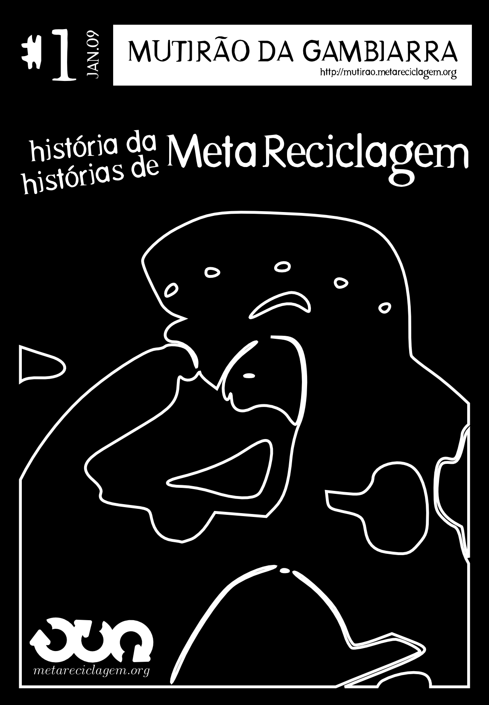

Mutirão da Gambiarra
Edição 01 – História da MetaReciclagem, Histórias de MetaReciclagem
São Paulo, Janeiro 2009
http://mutirao.metareciclagem.org
Editor
Felipe Fonseca (http://efeefe.no-ip.org)
Apoio
Weblab (http://weblab.tk)
DesCentro (http://pub.descentro.org)
Esta publicação foi totalmente editada e diagramada com softwares livres e abertos.
Todos os textos estão disponíveis no site http://mutirao.metareciclagem.org.
A menos que explicitado em contrário, os textos aqui publicados estão em copyleft, e podem ser reproduzidos para fins não-lucrativos desde que citados autorx e fonte.
http://metareciclagem.org
Um grande salve pro Adilsão, que faz muita falta, e pra toda a nação MetaRecicleira.
efe
Sumário
Prefácio 5
Introdução 8
Um berço colaborativo 9
Uma experiência opensource 13
Projecto Metáfora: Caos e Ordem numa Inteligência Colectiva 15
Chocadeira colaborativa 29
Os primórdios da MetaReciclagem 31
MetaReciclagem: Reapropriação da Tecnologia para Fins de Transformação Social 40
Cartografando: Esporos, ConecTAZes, Infralógica 52
A Rede MetaReciclagem 57
CyberSocial 61
MetaReciclagem em Santo André – Montando uma estrutura 62
Pra pensar 65
Uns relatos soltos 68
Entrevista para a webinsider 71
Treinamento de metareciclagem de computadores 73
Relato de oficinas 74
Emergindo das entranhas 76
Fim do mezanino 77
Regras de jogo 80
Estudo de caso: mimoSa 85
Um ano relevante 90
Os ideais da MetaReciclagem 93
MetaReciclagem por aí 95
Controvérsias metareciclentas 98
Tacando pedra nos moinhos 100
Aspas, aspas... 112
Pra quê? 114
Hernani Dimantas, janeiro 2009
Um dia depois do outro. A vida passa. Não de forma grandiosa. Gosto de pensar de forma analítica. Vejo as opções e as transformações que atuam no cotidiano. Fazer uma coisa, normalmente, impede outra de ser feita. Por isso gosto das metáforas que transformam o cotidiano comum na fantasia da emergência. Uma viagem pelo desconhecido com uma cláusula: tente outra vez. Típica configuração de um game pirata vendido na Galeria Pajé. Game Over and start again.
Bahhh... caí na armadilha. A vida é um jogo. Ou o jogo é a vida. Isso é tão Descartes!!! Nunca saber nada é quase saber de tudo, mas e daí... que merda ter que endeusar a modéstia. Prefiro escolher o não saber como a forma de agir... ou o não fazer como uma forma de fazer. De qualquer forma... tanto faz. Gostaria de ter sete vidas para reviver. La vida és una tómbola.
Sete vidas é o nome do jogo. Em sete passos a idéia de uma revolução silenciosa começou a permear no universo on-line das redes tupiniquins. Parece óbvio a maneira como tudo aconteceu. Tão óbvio e tão lógico. Mas o caso não é simples assim.
Primeiro veio a metáfora. Às vezes passo horas pensando em minhas próprias idéias. E esqueço que outras pessoas também têm idéias. Se outras pessoas têm idéias - boas idéias - por que não utilizá-las para destrinchar o emaranhado de complexidades do meu pensar? Conhecimento livre é um atalho para o sucesso do coletivo.
Numa conversa corriqueira com Felipe Fonseca percebemos que a emergência de uma blogosfera era um fenômeno além da nossa compreensão. Naquele momento a ferramenta blog fazia sentido. O Metá:Fora nasce com o propósito de juntar os pontos, os links que catalisam as conversas. A linkania surgiu.
Consolidar esse movimento foi o segundo passo. Muitas discussões nos levavam a chamar de metáfora aquilo que nos juntava. Institucionalizar parecia o caminho natural. No entanto, uma invasão bárbara acontece quando os tentáculos de um movimento atuam no rizoma da sociedade. Somos os hackers do conhecimento.
Mas qual é o significado disso para o meu cotidiano? Continuo vivendo num mundo que valoriza o material antes do humano. Frases como: "não é possível viver sem dinheiro" ou "o dinheiro move o mundo" são contrapontos fortíssimos ao conhecimento livre. Uma sociedade mercantilista, capitalista, financista e conformista aponta para o direito de propriedade como um norte magnético. A direção da agulha é sempre a mesma. Bala na cabeça da sociedade marginal.
É nesse ponto que enxergo as diferenças. Um mundo proprietário tende a desmoronar. Num desandar coeso. Um movimento silencioso rumo ao declínio do império americano.
Com tantos baluartes contrários, minha teimosia emerge do caos interno. A revolução reformata a vida. Liberdade para inovar. Liberdade para teimar. Meta é movimento silencioso.
Não é tão difícil definir esse movimento. Zonas piratas emergem de uma rede catalisada pela conectividade cibernética. Colaboração é a palavra do século XXI. Release early and release often passou a redesenhar um modelo de produção. Colaboração como capital social. Colaboração para fazer qualquer coisa que o desejo provoque. Colaboração como condição de sobrevivência.
Relacionamentos na rede abrem espaços para uma nova forma de trabalho, que é imaterial. Uma cultura baseada na colaboração, no compartilhamento do conhecimento e na ausência de hierarquias não é mais uma fantasia. O virtual é muito real.
Mas o que é colaboração? Estamos falando de tecnologia da informação. No entanto, percebemos que, a cada dia, essas idéias penetram no modelo de organização da sociedade. Temos que prestar atenção em alguns indicadores quase imperceptíveis para pensar numa sociedade diferente. Onde a produção do conhecimento corra livre. Software livre é apenas a ponta do iceberg do paradigma hacker. O conhecimento quer ser livre.
Metá:Fora migrou seus servidores para o MetaReciclagem. O filho prodígio torna-se livre para atuar. A rede virtual caminha para o presencial. Uma organização em rede transforma de maneira inequívoca os telecentros de argamassa. MetaReciclagem é principalmente uma idéia. Uma idéia sobre a reapropriação de tecnologia objetivando a transformação social. Esse conceito abrange diversas formas de ação: da captação de computadores usados e montagem de laboratórios reciclados usando software livre, até a criação de ambientes de circulação da informação através da internet, passando por todo tipo de experimentação e apoio estratégico e operacional a projetos socialmente engajados.
Reciclar computadores para reuso parecia o modelo mais convincente nos tempos de exclusão. Internet não tinha valor para aqueles que não enxergavam a rede. A sociedade não tinha ouvidos para o fuzuê digital. O pragmatismo destrói o sonho da revolução. No entanto, a densidade da solução em rede subverte e corrói a necessidade de conservar aquilo que é conhecido. Ou, quando o paradoxo se torna paradigma novas práticas têm mais a ver.
Mas reciclar tem limitações. O reuso necessita ser revestido de valor. O computador, a ferramenta que nos faz devastar as novas fronteiras não pode ser o lixo do lixo. Pelo contrário. Há de se transportar o cotidiano para o campo das artes. Uma privada no museu é uma obra de arte. Passageiros num avião sequestrado não são mais passageiros. Eles são reféns. Na rede somos aquilo que as pessoas dizem que somos. Computadores pintados, os grafismos de Glauco Paiva passaram a ser a marca estampada em cada objeto de doação. As comunidades agradecem!
A arte tem um valor didático. Explorar o computador não é apenas uma relação dedos e teclados. Explorar o computador é um processo de destruir e aglutinar. Filosofia e tecnologia se juntam para desvendar o mistério do mundo. Vamos pensar na inteligência coletiva, ou na catalisação do conhecimento através da colaboração entre as pessoas. Pensar na inteligência coletiva é se colocar para fora do ser. Pensar na máquina é levar o conhecimento para fora da caixa cinza. Nas redes oferecemos múltiplas experiências.
Essa é a lógica. A arte do MetaReciclagem vem buscar a transformação social. A web só faz sentido quando um se preocupa com o outro. A web é um mundo que nós criamos para todos nós. Só pode ser compreendido dentro de uma teia de idéias que inclua os pensamentos que fundamentam a nossa cultura, com o espírito humano persistindo em todos os nós. Este compromisso entre humanos, essa generosidade altruísta não está desenvolvida no centro.
Esta (re)aproximação da tecnologia com a cultura se faz de maneira muito tranquila. A emergência de uma nova cultura. As pessoas estão se linkando. Criando o mundo virtualmente real. Vivemos a cultura da mídia. Pop e supérflua. Não é possível conviver nesse ambiente cultural sem analisar as tecnologias de informação e comunicação que trafegam pelo entorno da sociedade. A tecnocultura está carregada de simbologia e signos. É semântica.
Essa simbologia se amalgama com os destroços dessa civilização. Reciclar é preciso. Porque é preciso viver. Mas não mais falamos em reciclar corpos. Numa vida além do pós modernismo os corpos deixam a centralidade. Importa mesmo é a relação. Isso já era dito pelos estóicos. Esse conceito vem aflorando. Ocupando os espaços mentais. Substituindo as velhas proposições. A ruptura está aí. E agora.
O MetaReciclagem é uma forma de tratar a apropriação da tecnologia. É um dispositivo que dá visibilidade da articulação em rede para a transformação social. A conversação se dá no nível do agenciamento. De certa forma, a cultura hacker responde com uma produção que tende ao infinitesimal finito. A tão falada cauda longa se torna aliada da produção em rede. A mediação se dá na recombinação, nos diversos acessos, na via dupla proporcionada pela interatividade.
Esse conhecimento está impregnado nos mutirões. No efeito puxadinho colaborativo. É só chegar para ajudar o ser humano ser mais feliz. Uma mobilização que vai além da boa ação. É cotidiana e despretensiosa. E tem o padrão Carnaval de qualidade.
Felipe Fonseca, janeiro 2009
Já faz quase um ano e meio que comecei a articular o Mutirão da Gambiarra. A idéia inicial do Mutirão partia, entre outras coisas, do receio que sempre tivemos de que, como rede descentralizada e aberta, a MetaReciclagem pudesse eventualmente ser apropriada de maneiras que destoassem das intenções de seus integrantes: estimular a descoberta, a colaboração, a ação em rede voltadas para a transformação social.
Muita coisa mudou nos últimos anos, e os próprios objetivos da MetaReciclagem (se é que existem) também acabaram por se transformar. São várias linhas paralelas, mas acho que é possível identificar uma natureza de movimento coletivo que começou com descoberta, estruturou-se numa prática, depois virou capacitação e mais tarde começou a brincar com experimentação, até dissolver-se por aí dentro de vários projetos e de certa forma perder a identidade de grupo. Mas ainda existe, mesmo que de maneiras diferentes daquelas que já conhecíamos, o sentido de uma construção coletiva, de um espaço de conhecimento, convívio, informação, co-inspiração e troca, que é nossa obrigação assegurar que permaneça aberto.
O tempo nos mostrou que não é viável pensar em corporificar uma instituição que centralize a identidade da MetaReciclagem. Ainda mais estranho é pensar em registrar a marca ou qualquer outro desses dispositivos do milênio passado. No meu entender, a maneira mais efetiva de garantir que a MetaReciclagem seja entendida na sua abrangência e força, como uma rede aberta, um espaço de sensibilidades compartilhadas, de propriedade coletiva, é expor os processos que nos trouxeram até aqui, destrinchar os interiores da MetaReciclagem como rede, prática, identidade de grupo e influência.
Nesta primeira edição, o foco foi bem fechado em um exercício de narrativa histórica da MetaReciclagem. Com certeza faltaram histórias, enfoques e versões, mas isso a gente resolve com o tempo. Já tenho material para quase duas outras edições do Mutirão da Gambiarra. Quem quiser ajudar, é só aparecer lá: http://mutirao.metareciclagem.org
vqv
efeefe (ff, fff, felipe, izq, joelhasso)
Felipe Fonseca, janeiro 2009
É impossível falar sobre a MetaReciclagem sem contextualizar sua origem dentro do Projeto Metá:Fora, uma rede de pessoas em todo o Brasil articulada a partir de uma lista de discussão e de um website colaborativo. A princípio, a criação do Metá:Fora foi quase ocasional, sem pretensão maior do que juntar pessoas para falar de coisas sobre as quais até então pouca gente conversava em português. Em 2002, bem antes de aparecer no Brasil o hype da tal da web 2.0, wikipedia, tags e afins, já havia pessoas mobilizadas a partir de algumas referências em comum: o manifesto cluetrain, listas de discussão sobre tecnologia e sociedade, blogs diletantes e o movimento do software livre:
Estávamos conversando sobre internet sem fio, dispositivos conectados, XML, integração de equipamentos, conversações. (...) Decidimos criar outra comunidade online para tentar consolidar as novas idéias que um monte de gente estava gerando. Interessava a conversa sobre um cotidiano hiperconectado, sobre os limites cada vez mais tênues entre "online" e "offline", ente "digital" e "analógico", e o conhecimento livre como metodologia de colaboração. Não interessavam mais reclamações, mais críticas que não propusessem alternativas, mais choramingos de incompreendidos. Criei a lista de discussão no yahoo groups e convidei 12 pessoas. Quase todas entraram. Eu tratei de incentivá-las a conversar, enquanto o Hernani divulgava nos seus canais a nova lista. (http://efeefe.no-ip.org/livro/metáfora-10)
Em menos de um mês, a lista de discussão já contava com mais de cinqüenta pessoas, de diversas áreas de atuação e formação. Dezenas de mensagens eram enviadas todo dia. Como muitas dessas mensagens tinham links pra sites e artigos, decidimos criar um sistema online de gestão de bookmarks. Usamos por algum tempo um site fechado, depois Paulo Colacino sugeriu que usássemos um script livre em PHP que montava uma estrutura de diretório de links. Mas acabamos optando por um wiki. Na época, havia poucos wikis em português (o mais conhecido era um chamado cudebebado, que era freqüentado por alguns integrantes da lista). Instalei o wiki em um diretório do meu site na época, e começamos a organizar os bookmarks por lá. Logo já havia mais de uma centena de links interessantes, além dos muitos e-mails trocados todo dia.
Hernani Dimantas escreveu à época:
Metá:Fora é uma inteligência coletiva. É ainda algo embrionário, um momento de ebulição ideológica, mas direcionado a ferramentar o cotidiano essencialmente online. E que nos obriga a unificar a comunicação com o desenvolvimento da tecnologia. (http://mutirao.metareciclagem.org/livro/Chocadeira-colaborativa)
Além de referenciar sites interessantes, grande parte das mensagens da lista eram debates profundos e abrangentes sobre temas diversos. As conversas adotavam uma perspectiva política, social, educativa ou econômica, além do mero aspecto tecnológico. Algumas dessas conversas chegavam ao ponto de virar planos de ação, como foi o caso de projetos idealizados por Daniel Pádua, como o Blogchalking e o Prefeituras Inteligentes, ou por Felipe Albertão, como o MetaOng. A sensação era que estávamos desbravando um novo mundo, vivenciando um tipo de convívio que ia além da falsa dicotomia entre "online" e "offline". De repente, não tínhamos mais limites de "áreas de conhecimento": qualquer pessoa poderia opinar nas idéias das outras, inclusive (talvez principalmente) se não tivesse nenhuma experiência no assunto. Além disso, havia a busca de formação de senso comum, de compartilhar o cotidiano, de questionar as próprias idéias a partir do confronto com o espelho do grupo.
Em determinado ponto começamos a usar o wiki para rascunhar projetos. A princípio, eram só idéias jogadas e informais, mas logo - com uma boa colaboração de pessoas como TupiNamba e Maratimba - chegamos a um modelo mínimo de projeto: descrição, equipe, links e referências. Passamos a pensar em forma de projetos, e algumas dezenas deles foram elaboradas.
A partir do momento em que o projeto abraçou a atuação baseada na articulação em rede, a inventividade presente no processo aberto de conversações começou a transcender o tecnocentrismo e pensar em como efetivamente interferir nos diferentes cenários sociais, sempre tomando por base o ideário do conhecimento livre.
O Metá:Fora passou de uma lista de debates para um grupo de intervenção, utilizando conceitos de colaboração para desenvolver uma infra-estrutura ou incubadora de projetos colaborativos, ou mais especificamente, uma chocadeira de código aberto. Conceitualmente está baseado no conhecimento livre, que significa liberdade para modificar, editar, adicionar ou subtrair, visando sempre aprimorar o conteúdo final. Um movimento iniciado pelos programadores e que pode ser replicado em outras áreas do conhecimento. As conversações propiciadas pelas listas de debates, fóruns e e-mails promovem a cultura do compartilhamento e beneficiam a mentalidade do conhecimento aberto e livre.
(...) O Metá:Fora corporifica os conceitos da apropriação das tecnologias e, na prática, as utiliza como forma tática de diminuição das distâncias entre seres humanos. Dessa forma, a transformação social pela apropriação tecnológica passa pelo questionamento daquilo que se chama Inclusão Digital, passa pelo ativismo midiático, bem como pela mistura cultural impulsionada e mediada pela cibercultura.
(...) Num determinado momento percebemos, então, que o Metá:Fora era uma forma de troca de conhecimento. Percebemos que as pessoas conversavam com outras pessoas, imbuídas do mesmo interesse pela interatividade. Este diálogo caótico e emergente nos possibilitou experimentar a transversalidade do aprendizado. Percebemos que na rede as pessoas aprendem, de fato, através da utilização das ferramentas colaborativas pelas próprias pessoas. (http://mutirao.metareciclagem.org/livro/Uma-experi%C3%AAncia-open-source)
Numa movimentação em grande medida oposta ao mundinho conectado da época (a blogosfera e empreendedorismo tecnológico em geral), o Metá:Fora incorporou elementos típicos das culturas populares brasileiras, como a gambiarra e os mutirões.
Esse conhecimento está
impregnado nos mutirões. No efeito puxadinho colaborativo. É só
“chegar” para ajudar o ser humano ser mais feliz. Uma mobilização
que vai além da boa ação. É cotidiana e
colaborativa.
(http://mutirao.metareciclagem.org/livro/Puxadinho-colaborativo)
Em determinado momento, passamos a desenhar uma estrutura conceitual para pensar a transformação social auxiliada pelas tecnologias. Daniel Pádua sugeriu um projeto chamado UTIL - União pela Tríade da Informação Livre, que tomava como base três esferas - infra-estrutura física, infra-estrutura lógica e interação. Miguel Caetano situa a inspiração para essa estrutura em Yochai Benkler e Lary Lessig:
Este modelo baseia-se em parte no conceito dos três níveis dos sistemas de comunicação introduzido pelo jurista Yochai Benkler e retomada por Lawrence Lessig, compostos por um nível físico, situado em baixo, um nível intermédio lógico ou relativo ao código e um nível superior, relativo ao conteúdo. A diferença substancial situa-se nesta última camada: enquanto Benkler e Lessig utilizam o termo conteúdo, os elementos do Metáfora preferem recorrer ao conceito de interacção de modo a fomentar a autonomia das comunidades. (http://mutirao.metareciclagem.org/fonte/Jeitinho-Brasileiro-e-MetaReciclagem)
A partir de então, os projetos passaram a ser criados tendo em vista a atuação nesses três estratos. Em pouco mais de um ano de atuação, foram rascunhadas duas dúzias de projetos. Nem todos foram efetivamente desenvolvidos, mas algumas das idéias ainda podem ser retomadas até hoje.
Uma das principais características do Projeto Metá:Fora era a ênfase em debates dos quais participavam pessoas das mais diferentes áreas do conhecimento, mas aos quais se mantinha uma atenção especial para que não incorressem em jargão específico de nenhuma área. Na época, chamávamos isso de Xemelê, uma brincadeira com a idéia de XML - protocolos que permitem que sistemas diferentes compartilhem informação ao usar formatos em comum. A primeira ocorrência do neologismo foi quando Dalton Martins enviou uma de suas primeiras mensagens à lista, que usavam um linguajar bastante técnico, e eu respondi dizendo "xemeleia isso que eu não entendi nada". (http://mutirao.metareciclagem.org/fonte/Xemel%C3%AA-entendendo-plataforma-agregadora). Com o tempo, o termo foi usado em outros projetos, e hoje batiza uma série de iniciativas levadas adiante por José Murilo dentro do Ministério da Cultura. (http://www.softwarepublico.gov.br/spb/ver-comunidade?community_id=4215419).
Uma idéia que também nasceu no projeto Metá:Fora e influenciou bastante a MetaReciclagem foi o crescimento a partir de esporos: ao invés de inchar uma estrutura centralizada, chegamos ao consenso de que cada projeto deveria ter autonomia para tomar suas próprias decisões, desde que seguisse princípios definidos pela rede e a mantivesse informada sobre os desenvolvimentos. A idéia era chegar a um modelo de descentralização integrada, que possibilitasse um alto nível de agilidade e independência, mas não perdesse o aspecto de ação em rede que nos era tão caro.
Projetos independentes e colaborativos como o MetaReciclagem só podem se desenvolver se pensarmos de forma pirata. Células orientadas a projetos. Autonomia de gestão. Muita informação fluindo entre as partes e, principalmente, a convicção de que cada célula representa o todo. E assim termos a certeza da construção de um projeto comum e rizomático. Cada membro do grupo necessita contribuir como base para os outros.
(http://mutirao.metareciclagem.org/livro/Opera%C3%A7%C3%A3o-Pirata)
Quando a MetaReciclagem tomou corpo, a essas unidades elementares que anseiam por tornar-se referências locais somaram-se também as ConecTAZes (termo cunhado por Daniel Pádua, em referência às Zonas Autônomas Temporárias como definidas por Hakim Bey): intervenções coletivas que não necessariamente tinham por meta prolongar-se no tempo, podendo acontecer durante eventos ou ocupar estruturas já existentes e depois desaparecer.
Idealmente, os Esporos e ConecTAZes mantêm a dinâmica das conversações a partir da infralógica, uma série de ambientes online: wikis, uma lista de discussão, blogs e outros ambientes colaborativos.
Com a velocidade das conversações no Projeto Metá:Fora, fomos absorvendo, ainda que de maneira dialógica e crítica, algumas idéias externas que circulavam pela rede. Uma delas veio das experiências de microcrédito relatadas por Mohammed Yunus no livro O Banqueiro dos Pobres. Outra foi a idéia de caordem, da emergência de padrões em ambientes complexos, com a qual eu pessoalmente tomei contato em uma palestra durante o segundo Fórum Social Mundial (e cuja origem, anos mais tarde, eu descobri com alguma surpresa por Miguel Caetano que vinha do mundo corporativo). Também usamos bastante a idéia já mencionada acima de Zonas Autônomas Temporárias, de Hakim Bey, e o ferramental conceitual dos grupos europeus de mídia tática. E, talvez a partir das conversas com Marcelo Estraviz, começamos a incorporar a preocupação com a chamada inclusão digital, mesmo que de uma forma diferenciada, mais preocupada com apropriação e articulação em rede do que com o mero acesso, como comentou Hernani Dimantas:
O objetivo do Projeto
Metá:Fora é entender e desenvolver conhecimentos adequados a uma
nova relação com a cultura interconectada a partir de comunidades
locais, visando fomentar a inclusão digital e o uso efetivo de
ferramentas de publicação pessoal e construção coletiva de
conhecimento.
(http://mutirao.metareciclagem.org/livro/Chocadeira-colaborativa)
Depois de mais de um ano de atuação acelerada em dezenas de projetos, o Metá:Fora se esgotou. Uma das coisas que precipitou seu fim (descrito detalhadamente no texto de Miguel Caetano nesta publicação) foi a tentativa de corporificar a MetaReciclagem em uma ONG. Encerramos a TAZ projeto Metá:Fora, que deixou seus rastros na forma de um monte de conversações pela web, alguns projetos e muitos contatos. Tudo o que veio depois foi conseqüência dessa primeira fase.
Hernani Dimantas, publicado em 05/10/06 em http://comunix.org
(N. do E.: esse texto do Hernani fala um pouco mais sobre o Projeto Metá:Fora, criado em junho de 2002 e encerrado por volta de outubro de 2003).
Em pouco mais de um ano, o Metá:Fora passou de uma lista de debates para um grupo de intervenção, utilizando conceitos de colaboração para desenvolver uma infra-estrutura ou incubadora de projetos colaborativos, ou, mais especificamente, uma chocadeira “open source”. Ou de códigos abertos. Conceitualmente está baseado no conhecimento livre, que significa liberdade para modificar, editar, adicionar ou subtrair, visando sempre aprimorar o conteúdo final. Um movimento iniciado pelos programadores e que pode ser replicado em outras áreas do conhecimento. As conversações propiciadas pelas listas de debates, fóruns e e-mails promovem a cultura do compartilhamento e beneficia a mentalidade do conhecimento aberto e livre.
O projeto objetivava entender e desenvolver conhecimentos adequados a uma nova relação com a cultura interconectada. A partir de comunidades locais, para fomentar a inclusão digital e o uso efetivo de ferramentas de publicação pessoal e construção coletiva de conhecimento, ou como utilizar a tecnologia para incrementar a conversação na rede. Cabe dizer que esse modelo de conversação proposto poderia ser replicado nas diversas áreas do conhecimento. Pode ser utilizado para debates sobre usos de novas tecnologias bem como para a facilitação de outras formas de debates ou ações como, por exemplo, engenheiros colaborando para uma obra na África ou médicos debatendo online sobre a utilização de uma técnica de tratamento para um caso qualquer.
Inclusão Digital, como já foi dito, é um termo inadequado. A idéia de transformação social é um conceito mais amplo e mais exato para identificarmos o impacto das tecnologias no cotidiano. Implica, além disso, numa ótica de do corpo humano para apropriação e utilização das tecnologias.
O Metá:Fora corporifica os conceitos da apropriação das tecnologias e, na prática, as utiliza como forma tática de diminuição das distâncias entre seres humanos. Dessa forma, a transformação social pela apropriação tecnológica passa pelo questionamento daquilo que se chama Inclusão Digital, passa pelo ativismo midiático, bem como, pela mistura cultural impulsionada e mediada pela cibercultura.
Num determinado momento percebemos, então, que o Metá:Fora era uma forma de troca de conhecimento. Percebemos que as pessoas conversavam com outras pessoas, imbuídas do mesmo interesse pela interatividade. Este diálogo caótico e emergente nos possibilitou experimentar a transversalidade do aprendizado. Percebemos que na rede as pessoas aprendem, de fato, através da utilização das ferramentas colaborativas pelas próprias pessoas.
Paulo Bicarato, jornalista e editor do alfarrabio.org numa discussão na lista do Metá:Fora:
“Aprender e apreender. Aprender a apreender. Não existe fórmula pronta. É deixar-se entrar no fluxo, intuitivamente, e sentir-se integrante/participante dessa mágica maior que não tem nome. Aí a consciência emerge: NÓS somos conhecimento...”
Outro conceito essencial para compreender o Metá:Fora é o de Inteligência Coletiva. No texto de Apresentação do projeto, pode-se ler: “Metá:Fora é uma inteligência coletiva para gerar inteligências coletivas. Um projeto aberto de pesquisa e desenvolvimento em diversas áreas do conhecimento, baseado em algumas premissas do modo de produção open source”. Mais à frente, verifica-se que o plano de atuação do projeto passa pela realização de “ações multiplicadoras ou esporos de inteligência coletiva envolvendo o uso de redes de informação”.
Segundo Felipe Fonseca, a maior parte das iniciativas deste projeto “não foi exatamente ativista”, no sentido da definição tradicional de mídia tática, dado que “visavam oferecer métodos para transformar as ferramentas midiáticas de forma a interferir socialmente. Esta posição tem que ser encarada sob a perspectiva brasileira, em que colaboração é uma forma importante de sobrevivência. Isso nos levou a estabelecer um elo entre a cultura hacker com diversos traços da cultura brasileira, fruto de mestiçagens, hibridizações, miscenização e nomadismos vários.
De acordo com Miguel Caetano, em sua dissertação de mestrado :
“No ensaio “Brasil is a Hacker Culture” , apresentado [por Felipe Fonseca] na edição de 2003 do festival Next Five Minutes, na Holanda, afirmamos que a população brasileira 'não necessita de mídia alternativas como jornais locais, rádios comunitárias e vídeos amadores, mas de mídia táticos em termos da utilização da comunicação para integrar as pessoas, de forma a que elas possam partilhar a informação que realmente importa para elas'. Não se trata de trazer mais pessoas para a era da informação, mas de transformar a tecnologia de forma a que possam melhorar de algum modo a sua qualidade de vida.”
“Felipe Fonseca deixa algumas pistas para o futuro deste tipo de práticas midiáticas: Se vamos pensar em um medium (ou vários mídias) que tenham o objetivo explícito de beneficiar milhões de pessoas que hoje estão ausentes do debate sócio-político-científico-cultural, não podemos criar simulacros dos media de massas. Claro que estes são úteis, mas com o objetivo único de desmascarar a credibilidade das mega-corporações de comunicação. Mas isso é combater o passado e o presente. Se vamos pensar no futuro, creio que devemos infundir desde o início as possibilidades que surgem com as novas tecnologias: a colaboração, o relacionamento de pessoas com pessoas (e não de mensagens para pessoas), a construção de conhecimento coletivo e adequável a cada realidade (...) Digo não fazer contra-media, mas romper as nossas hesitações em relação ao uso de tecnologia (tinta na caverna, lápis e papel, Jabber e Drupal ) para juntar as pessoas com idéias, perspectivas e objetivos em comum. Pensar em estratégia e tática autoconstruindo-se, simultaneamente. [CAETANO, 2005]
Mas tudo isso é o pano de fundo desta revolução digital. Percebemos que havia um pessoal interessante falando coisas semelhantes, mas um de cada lado. Nosso trabalho foi juntar esse pessoal. E deixar fluir para ver o que aconteceria. Em poucas semanas milhares de mensagens foram trocadas. Informação repercutindo conhecimento. Comunicação direta, conversação “open source” irradiando para a inteligência coletiva. A realização dos projetos para qualquer um que realmente tenha boa vontade e espírito colaborativo. Essa Metá:Fora tende a ser um projeto maior. Entre pessoas, em qualquer lugar. Numa viagem não linear no tempo e no espaço.
Miguel Caetano. Originalmente parte de “Tecnologias da Resistência”, tese de mestrado, que pode ser baixada em http://pub.descentro.org/backgroundresearch
(n. do E.: este texto foi editado para não fugir ao tópico principal da publicação. Retirei algumas partes que detalhavam por demais os projetos do Metá:Fora)
Hoje em dia, a maior dificuldade para começar um projeto de pesquisa é a definição do nome. Que nome dar a um projecto que tem por objetivo entender e propor aplicações para uma realidade em que passaremos do online/offline para uma cultura permanentemente conectada? Como definir uma cultura em que definir o nome de um projecto é mais difícil do que estabelecer um fórum de comunicação entre os seus membros? E isso é só o começo. Virtualização da presença, k-logs1, m-log2s, RSS, telecentros comunitários, inteligência colectiva, o novo nomadismo, são alguns dos assuntos que vão nos guiar.
- Felipe Fonseca, “Metáfora”
Foi com esta frase em epígrafe enviada para uma nova lista de discussão por email que se deu início ao projecto Metáfora, a 28 de Junho de 20023. O objectivo era trocar ideias e talvez conceber tecnologias que incorporassem na prática noções como conhecimento livre, redes sociais, colaboração e copyleft4. Na origem do Metáfora esteve outra lista, a Joelhasso, que também servia de nome a um blog criado por Felipe Fonseca em 2001, que trabalhava na altura na indústria da publicidade. Aí se congregaram virtualmente os integrantes de outras listas brasileiras sobre marketing e comunicação, entre os quais Hernani Dimantas, Paulo Bicarato e Charles Pilger, que viriam mais tarde a fazer parte do Metáfora. Como conta Fonseca, os assuntos em discussão na Joelhasso abrangiam a Internet sem fios, dispositivos em rede, XML, integração de equipamentos e conversações (2005). Desagradados pelo que consideravam ser o atraso da indústria tecnológica brasileira, Fonseca e Dimantas criaram em jeito de resposta a primeira mailing-list Metáfora com o intuito, nas palavras do primeiro, de "tentar consolidar as novas ideias que um monte de gente estava gerando". Na entrevista que realizámos, Fonseca esclarece que o Metáfora surgiu como uma saída para a frustração que sentia no seu emprego na altura: “O Projecto Metáfora tornou-se o ambiente onde a criatividade não enontrava limites e onde começavam a aparecer pessoas que tinham interesses e perspectivas em comum comigo” (Fonseca, 2005b). Hernani Dimantas complementa essa afirmação, afirmando que “o carácter aberto do projecto deu ao grupo as possibilidades para o exercício total da criatividade” (Dimantas, 2004).
Tendo em conta um "quotidiano hiperconectado", a lista visava estimular o debate sobre "os limites cada vez mais ténues entre online e offline, entre digital e analógico, e o conhecimento livre como metodologia de colaboração" em que se passasse para além da crítica, no sentido da apresentação de alternativas concretas (Fonseca, 2005). No mesmo texto, Fonseca recorda o processo de formação da nova comunidade online: "Criei a lista de discussão no Yahoo! Groups e convidei 12 pessoas. Quase todas aceitaram" (idem). Dimantas afirma a este propósito que ambos combinaram inicialmente que ele faria a articulação externa e Fonseca ficaria a cargo da articulação interna. "Abri o diálogo do Meta com instituições do governo, algumas ONGs mais institucionalizadas e com participação política e a academia", refere no questionário que elaborámos. Por seu lado, Fonseca – que utilizava nesses primeiros tempos a alcunha Izquierdo, El Horrible - incentivava as pessoas que iam chegando à lista a conversarem entre si.
A lista começou por ser uma conversa entre um grupo de 15 pessoas, mas no período de um mês já tinham sido aí publicadas mais de 1200 mensagens entre 45 elementos. Foi assim criada uma wiki onde começaram a ser guardados os inúmeros bookmarks de notícias e artigos que eram debatidos na lista (Fonseca, 2003). De seguida, foi redigido o rascunho de um projecto. Três dias mais tarde, este rascunho transformou-se na descrição completa de um projecto, tendo os participantes começado a elaborar projectos colaborativos a partir da wiki (idem). O Metáfora viria a acabar em Outubro de 2003. Um mês antes, durante a sua intervenção no N5M, em Amesterdão, Felipe Fonseca afirmava que o Metáfora contava com “cerca de 200 pessoas, desde lurkers5 a gestores de projectos, e mais de 25 projectos, estando actualmente quase metade deles a serem desenvolvidos”, todos eles funcionando graças ao voluntariado dos participantes (ibidem). Embora a grande maioria dos elementos mais activos do Metáfora tenha pertencido à região de São Paulo, o projecto alastrou-se também a outras cidades brasileiras como Belo Horizonte e Rio de Janeiro, contando ainda com participantes nos Estados Unidos.
De início, as conversas na lista, versando sobre telemóveis ligados à Internet, m-blogs, PDAs e computadores de bolso, evidenciavam um certo pendor para o tecno-narcissismo que, como Matteo Pasquinelli acusa (2002), predomina em muitos projectos autónomos trabalhando com media e tecnologia. Gradualmente, no entanto, assistiu-se a um desviar da atenção sobre a tecnologia em si para uma maior consciencialização sobre as necessidades reais das pessoas comuns de forma a ir de encontro a elas6.
Tal como outros grupos abordados anteriormente, o Metáfora conseguiu juntar no mesmo projecto hackers, filósofos, jornalistas, artistas, antropólogos e designers, todos eles actuando em quatro grandes àreas: comunicação, tecnologia, educação e arte. “O Metáfora é totalmente independente. É aberto e flexível. Não é um projeto académico. É uma nova forma de gerar conhecimento. O nosso enfoque é o incentivo de projectos pessoais através da colaboração entre os participantes”, explicou Hernani Dimantas (2004). O carácter transdisciplinar do projecto é recordado por Felipe Fonseca: “Baseados em tecnologia que hoje (Novembro de 2005) até parece pouco sofisticada (uma wiki e uma lista de discussão), fomos capazes de mobilizar efectivamente mais de uma centena de pessoas dispostas a experimentar novas formas de lidar com o conhecimento e de encontrar soluções para problemas em comum” (Fonseca, 2005b). Esta convergência de esforços resultou naquilo a que o colectivo denominou de aprendizagem distribuída em que “um grande número de pessoas com os mais variados repertórios, esforçando-se por fugir aos jargões e por expressar-se de uma maneira que todos compreendessem, foram responsáveis por uma disseminação multilateral de conhecimento com um ritmo que eu nunca tinha visto” (idem). Na base desta “comunicação multi-facetada, multi-lateral, interactiva e independente” (Dimantas, 2004) esteve a ideia de “xemelê”, que Fonseca define como sendo “um esforço positivo no sentido de manter um nível de linguagem que pudesse ser mutuamente compreensível” de modo a que todos pudessem participar nas discussões (Fonseca, 2005)7. O termo remete para um episódio concreto da história do Metáfora, quando Dalton Martins enviou uma mensagem para a lista sobre computação distribuída e Fonseca respondeu: “xemeleia aí que eu não entendi nada”8. Xemelê viria a ser, aliás, o nome da segunda lista do Metáfora, criada em meados de Junho de 2003, quando a primeira lista, alojada no serviço de alojamento eGroups do Yahoo! estava prestes a ultrapassar o limite de armazenamento de emails - dez mil mensagens - imposto por aquela empresa9.
Em pouco mais de um ano, o Metáfora passou de uma mailing-list a um grupo de acção para um conceito de colaboração, uma infra-estrutura ou incubadora para a criação de projectos colaborativos, em que os próprios projectos, como explicou Felipe Fonseca (2003) “criam grupos de acções, como se do caos surgisse uma ordem fractal”. Aliás, um dos termos mais empregues pelos participantes do Metáfora para definir o processo de funcionamento do projecto era o de ‘caordem’, uma mistura de caos com ordem, que nos faz remeter para conceitos como rizoma, swarming e multidão já abordados anteriormente10. Outro conceito essencial para compreender o Metáfora é o de Inteligência Colectiva, introduzido por Pierre Lévy, segundo o qual estamos a assistir à emergência de uma nova era do conhecimento que irá produzir uma consciência humana global11. No texto de apresentação12 do colectivo, pode-se ler: “Metáfora é uma inteligência colectiva para gerar inteligências colectivas. Um projecto aberto de pesquisa e desenvolvimento em diversas áreas do conhecimento, baseado em algumas premissas do modo de produção open source.” Mais à frente, verifica-se que o plano de actuação do projecto passava pela realização de “acções multiplicadoras de inteligência colectiva envolvendo o uso de redes de informação”. Do mesmo modo, Hernani Dimantas enfatizava essa visão do Metáfora inteligência colectiva num artigo publicado na revista electrónica Nova-E ainda durante a fase inicial do projecto13.
Os projectos do Metáfora abrangiam desde soluções para acesso à internet até alternativas para estimular o espírito empreendedor das comunidades desfavorecidas. Tais iniciativas estavam baseadas numa organização conceptual denominada a Tríade da Informação:
Este modelo baseia-se em parte no conceito dos três níveis dos sistemas de comunicação introduzido pelo jurista Yochai Benkler e retomada por Lawrence Lessig (2001: 23-25), compostos por um nível físico, situado em baixo, um nível intermédio lógico ou relativo ao código e um nível superior, relativo ao conteúdo. A diferença substancial situa-se nesta última camada: enquanto Benkler e Lessig utilizam o termo conteúdo, os elementos do Metáfora preferem recorrer ao conceito de interacção de modo a fomentar a autonomia das comunidades14. “Sempre me pareceu pretensão a visão segundo a qual um grupo de pretensos especialistas definem qual o 'conteúdo' interessante para um determinado grupo”, refere a este respeito Felipe Fonseca na entrevista (2005b).
Apesar da sua curta duração, de apenas 15 meses, o Metáfora deixou um legado bastante valioso de projectos que ainda hoje subsistem. Destes, o MetaReciclagem foi o que obteve maior êxito, tendo chegado a todas as grandes cidades brasileiras: São Paulo, Rio de Janeiro, Belo Horizonte, Porto Alegre, Recife, Salvador, Brasília, Curitiba, Manaus, etc. Como o nome indica, o MetaReciclagem dedica-se à reciclagem de computadores obsoletos doados, equipando-os com componentes usados que estejam em condições de funcionamento e instalando-lhes software livre. Depois de reapetrechadas, as máquinas são pintadas por artistas plásticos e cedidas a associações e centros comunitários de bairros periféricos. O colectivo desenvolve ainda nessas comunidades laboratórios de reciclagem onde os jovens aprendem a utilizar não só Linux mas também o próprio processo de reciclagem de PCs, demonstrando e remontando os computadores. Pretende-se assim fomentar a reapropriação da tecnologia visando a transformação social.
Uma das influências na criação do MetaReciclagem foi o Lowtech.org15, uma ONG britânica surgida em 1997 a partir do grupo de artistas Redundant Technology Initiative (RTI) de Sheffield que recicla computadores doados e resgata componentes informáticos da sucata para desenvolver manifestações artísticas a partir destas máquinas como instalações de video-walls, trabalhando também exclusivamente com software livre. Possui um laboratório de media, o Access Space, onde disponibiliza acesso à população e ministra cursos de formação em tecnologias aplicada às artes.
(...)
A importância concedida ao conceito de conhecimento livre não se restringia apenas ao mundo do software e da tecnologia. Desde o início, aliás, se pôde sentir na lista uma forte pulsão para alargar a filosofia do copyleft incorporada na GPL a domínios como a cultura e a educação.
(...)
A participação do Metáfora no festival Midia Tática Brasil, em São Paulo, no mês de Março de 2003, assegurou uma maior projecção pública ao projecto, apenas conhecido até então por um núcleo restrito de pessoas – sobretudo bloggers, uma vez que os dois fundadores do colectivo mantinham blogs16. Numa sala da Casa das Rosas, a sede do evento, o colectivo montou um laboratório com computadores reciclados – um servidor e cinco estações de trabalho – ligados em rede a partir dos quais os visitantes podiam aceder às páginas dos projectos na wiki17. Apesar da apresentação ter sido um pouco desorganizada18, os workshops sobre colaboração online desenvolvidos no âmbito do programa do festival em três telecentros da Prefeitura de São Paulo em Guaianases, Lajeado e Cidade Tiradentes foram bastante importantes na medida em que representaram a concretização de uma das premissas iniciais do projecto: o contacto directo com a periferia e as suas comunidades. Alguns dos assuntos abordados foram as ferramentas de construção colaborativa do conhecimento como os blogs, as wikis e os fóruns de discussão, a reputação, o conhecimento livre e as trocas de informação. Os participantes nos workshops puderam, mediante registo, participar num site colaborativo19 desenvolvido previamente, baseado na plataforma Drupal. Para além de permitir a publicação de um blog pessoal, possibilitava ainda outras formas de acção como um livro colaborativo, sala de conversa, fóruns, publicação de artigos, mensagens pessoais e agregação de conteúdos através de RSS. Contudo, o comportamento dos utilizadores face à tecnologia disponibilizada gerou alguma frustração junto dos voluntários do Metáfora, como relata Felipe Fonseca: “Eles entravam, escreviam um pouco sobre as suas vidas, comentavam o que os outros escreviam. Mas depois de alguns minutos, muitos deles voltavam ao bate-papo do UOL ou a algum site de notícias” (2003c). Essa “subutilização” da tecnologia devia-se, na sua opinião, ao facto de as pessoas não estarem acostumadas a escrever livremente desde a escola, ao nível de experiência que os ambientes colaborativos exigiam e à falta de intuitividade da interface dos sistemas de colaboração para os leigos (idem). Apesar dos resultados da iniciativa terem ficado aquém do previsto, as lições retiradas daí seriam aproveitadas em projectos do MetaReciclagem, após o fim do Metáfora.
Com o desenrolar das conversas e o crescimento do número de esboços de projectos, surgiu também a ideia de conceder um carácter mais institucional ao Metáfora e às suas iniciativas, através da criação de uma organização não-governamental e sem fins lucrativos que servisse para angariar recursos financeiros de modo a colocar em prática as iniciativas do colectivo. Houve, contudo, desde sempre uma forte divisão no interior do grupo face a essa questão da institucionalização. Aliás, como iremos referir mais a frente na análise dos questionários realizados aos antigos integrantes do projecto, vários dos inquiridos mencionam a tentativa de constituição de uma ONG como factor motivador de disputas internas. Com efeito, se a dissolução do grupo se deveu directamente à desistência de Felipe Fonseca do cargo de moderador das listas e dos projectos, podemos, no entanto, concluir que a decisão de Fonseca teve origem numa situação de atritos que já se arrastava desde há alguns meses, somada à multiplicação caótica de projectos colectivos ou individuais associados ao Metáfora.
A vontade de constituir uma ONG a partir do Metáfora surgiu logo no início do projecto. O primeiro membro do colectivo a colocar esta hipótese na lista foi Daniel Pádua, na mensagem nº 130 datada de 5 de Julho de 2002:
Uma ONG para distribuir computadores 'open-sourced' já preparados para funcionar em redes livres?
Uma ONG para divulgar e ensinar tecnologia aberta na sociedade, através de palestras e workshops de grátis (ou não)?
Uma ONG para fomentar um debate sobre a evolução da inteligência coletiva na sociedade brasileira (inicialmente, mas quem sabe na sociedade mundial)?
Uma ONG para educar os partidos políticos, o congresso e o escambau a quatro(...)?
Uma ONG para pensar, propor, desenvolver e experimentar meios de um cotidiano 100% online?
Face a este repto lançado por Pádua, outros elementos tinham, porém, uma posição mais cautelosa: Colacino considerava que seria mais adequado numa fase inicial conceber o Metáfora como uma ONG virtual que desenvolvia “projectos .ORG” e mobilizava pessoas em torno dessa causa, estabelecendo progressivamente ligações e contactos com o resto da sociedade: associações, empresas, universidades e media comerciais, em vez de uma ONG tradicional, não descurando no entanto a hipótese de o projecto evoluir nesse caminho20. Fonseca assertou que a ideia da institucionalização seria ainda um pouco precipitada e sugeriu desdobrar as ideias propostas por Pádua em projectos individuais21. Felipe Albertão colocou a possibilidade de o grupo fundar uma ONG especificamente direccionada para a prestação de serviços de formação, consultoria e assistência técnica em informática utilizando open-source para outras instituições não-lucrativas22. O assunto foi, no entanto, esquecido nas semanas seguintes.
Retomando esta questão a 4 de Setembro a propósito da doação de computadores reciclados para concretizar os planos do MetaReciclagem, Bernardo Schepop salientou a necessidade de formalizar o Metáfora sob a forma de uma ONG que se responsabilizasse pelos compromissos assumidos com as empresas doadoras, de forma a que estas se assegurassem que qualquer utilização das máquinas cedidas não pudesse resultar num processo legal contra elas. Alertou contudo para o facto de que a institucionalização do Metáfora poderia acarretar, por um lado, uma lentidão burocrática que atrasaria a velocidade de difusão de novas ideias e, por outro, um fechamento do ambiente aberto e colaborativo do projecto. Outra alternativa seria continuar como um colectivo que apoiasse iniciativas de outras entidades, embora isso significasse um menor grau de autonomia, pois os voluntários teriam que “depender sempre de uma segunda instituição para assinar e assumir as consequências”. Face a este dilema, Schepop perguntava se havia um caminho intermédio23. Essa via é desenvolvida por Felipe Fonseca através de um plano que passava pela criação de ONGs independentes do colectivo por alguns dos elementos individuais do Metáfora de forma a implementar projectos específicos – em linha com a ideia proposta semanas antes por Albertão. Mais do que uma TAZ efémera ao jeito do modelo teorizado por Hakim Bey (2001 [1991]) ou uma ONG com estatuto e regras, o Metáfora seria, na sua opinião, “uma nuvem espalhando-se sobre ONGs, prefeituras, associações de bairro, empresas e cada um de nós” ou ainda “uma biblioteca onde a gente pega as ideias e escolhe as pessoas para desenvolver cada uma delas, mas não a estrutura que viabiliza cada uma delas”24.
Adriana Veloso, por seu lado, afirmava: “Gosto da caordem daqui e não me agrada a institucionalização deste projecto, mas todos passamos por isso. Há modelos organizacionais horizontais, que funcionam por consenso que acredito serem mais interessantes”25. A necessidade a médio prazo de captar apoio financeiro, receber equipamentos e de garantir a protecção legal dos projectos desenvolvidos obrigava, contudo, para Paulo Colacino, à constituição de uma ONG. Na sua opinião, era possível montar uma estrutura económica que permitisse a viabilização das actividades do grupo e manter a criatividade sob a forma do “xemelê de ideias” na lista e na wiki26. Antes da formalização em larga escala do núcleo do colectivo, deveria-se, contudo, segundo Daniel Pádua, pensar primeiro em implementar um trabalho comunitário concreto e que, para tal, não seria preciso uma estrutura jurídica que levaria obrigatoriamente a uma perda de espontaneidade e capacidade de transformação da comunidade. Assim, numa perspectiva “caórdica”, o Metáfora funcionaria como uma conversação livre empregando ferramentas online a partir da qual surgiriam núcleos descentralizados mas interligados entre si através de um consenso gerado na lista. Estes núcleos poderiam ser formalizados pelos interessados, podendo outras pessoas que quisessem participar juntar-se a essa entidade27.
Esse seria o modelo a ser seguido até ao fim do Metáfora, em projectos como o MetaONG e o MetaReciclagem, embora ambos nunca tenham chegado a efectivar uma verdadeira institucionalização. Em vez disso, no caso deste último em particular, o colectivo estabeleceu uma relação de colaboração com uma ONG, o Agente Cidadão, através do qual recebeu as suas primeiras doações de computadores. Houve, contudo, nos últimos meses do Metáfora, um esforço concreto de criação de uma entidade sem fins lucrativos. Para tal, foi aberta uma lista de discussão separada da principal – da qual já não existe registos -, de acesso restrito e Bernardo Schepop chegou mesmo a redigir um estatuto e organigrama da futura instituição que se deveria chamar Co:Lab28. A ONG deveria destinar-se ao desenvolvimento de projectos e redes sociais colaborativas, tendo por objectivos a realização de estudos e pesquisas em tecnologias livres e abertas de modo a fomentar o desenvolvimento social, o apoio especializado de outras ONGs, a promoção da partilha livre do conhecimento e a defesa dos direitos civis. Schepop recorda esse período no questionário que realizámos:
Quis muito que o Metáfora se viabilizasse como uma alternativa. Cheguei a elaborar junto com os demais um possível estatuto para uma futura ONG Metáfora. Isso envolveu um grande número de encontros e debates (...) O grupo concluiu que seria melhor não oficializarmos nada. Deixar o Metáfora neste instante flutuante (...) Mas, neste ponto, sem intenções de se estabelecer definitivamente, o 'projecto' diluiu-se
Num texto escrito em 2005 onde faz um resumo da história do Metáfora, Felipe Fonseca dá a entender que a ONG não foi a avante devido a outros problemas gerados dentro do grupo29:
Complicações em alguns projectos começaram a acicatar atritos que até então estavam sublimado, as brigas feias começaram a acontecer quase diariamente. Percebemos que uma ONG não era o caminho. A nossa principal força eram as acções descentralizadas mas coordenadas. Mas os atritos persistiram ainda por algum tempo (Fonseca, 2005).
Em entrevista, Fonseca acrescenta:
Sempre tivemos essa predilecção pela mobilidade, pelo nomadismo psíquico como diz o outro... Hoje também vejo que, constituindo uma pessoa jurídica, é possível que tivéssemos que definir um foco de actuação mais limitado. Talvez tivéssemos escolhido trabalhar só com reciclagem de computadores. E isso teria limitado muito a nossa actuação (Fonseca, 2005b).
No início de Outubro de 2003, poucas semanas depois do seu regresso de Amesterdão para integrar a delegação brasileira do festival N5M, Felipe Fonseca publicou uma mensagem na lista Xemelê e no seu blog da altura, o hipocampo, a anunciar que desistia de ser moderador e que cedia essa função a quem tivesse interessado30:
Como eu acredito que vocês devem ter percebido, a lista Xemelê parou. Quero contar para vocês o que eu estou fazendo a respeito: Nada. O fato é, eu cansei de ser moderador da Xemelê. Principalmente porque ela deixou de fazer jus ao nome. Não vi mais xemelê por ali, e não vou me esforçar em resgatar um cadáver (Fonseca, 2005).
No mesmo texto posterior já mencionado, Fonseca adianta uma das motivações por detrás dessa decisão: “As brigas dentro da lista do ProjetoMetáfora tornaram-se diárias e eu continuava tentando ouvir todos os lados antes de dar a minha opinião (...) Passava muito tempo tentando apaziguar as brigas e não podia dedicar-me a nenhum projecto específico” (idem). Por outro lado, sentia que certos participantes da lista estavam-se a apropriar do nome do projecto e da sua reputação para se apresentarem em iniciativas individuais como 'integrantes do Metáfora' sem terem realizado um trabalho válido no interior do colectivo”. Na sua opinião, o Metáfora era um conceito de produção colaborativa e não um grupo de acção, sendo composto por colaboradores e não por membros. “Peço mais uma vez: não usem o nome do projetometafora. Minha opinião: Ninguém pode se definir como Fulano do MetaFora ou vender o nome do metafora como realizador de um projeto. Não o façam e não aceitem que o façam” (idem). De um modo aparentemente involuntário, contudo, pode-se concluir que o gesto de Fonseca precipitou o fim do projecto. “Para minha decepção, depois dessa mensagem recebi quase uma dezena de e-mails de membros-chave do projecto dizendo que também estavam cansados das brigas e que saíriam comigo do ProjetoMetaFora”, escreveu ele mais tarde (idem). Pode-se ver por aqui que apesar da valorização atribuída à abertura e à colaboração, o papel de coordenador de todos os sub-projectos desempenhado por Fonseca era considerado essencial pelos outros voluntários. Para assinalar a despedida do Metáfora foi colocado um texto na página inicial do site do Metáfora:
MetaFora não é mais o que era. A máfia que controlava as senhas foi pra
Croatã. Deixaram algumas coisas de herança para o mundo:
- Um wiki recheadaço.
- Uma pá de idéias para projetos coletivos.
- Um método de produção colaborativa.
- Os arquivos das listas MetaFora e Xemele.
- Três listas em funcionamento: infrafísica, infralógica e ações.
Apropriem-se.
Alguns projetos que nasceram aqui e descolaram como esporos de uma
samambaia:
- MetaReciclagem.
- MeMeLab.
- Co:Lab.
- Buzzine.
- MetaOng.
- MidiaTaticaBrasil
Estão sendo realizados eventos abertos em todo o mundo para comemorar o
fim da ditadura no MetaFora.
Se fores justo, serás avisado31.
O título original do texto, “Dispersando, cambada!” foi depois alterado para “Reagrupai e esporificai-vos”, por sugestão de André Passamani/Maratimba. A frase sintetiza com clareza aquilo que foi desde o princípio a filosofia de actuação, o lema do projecto Metáfora, de servir como incubadora de projectos colaborativos que deveriam crescer e replicar-se de uma forma autónoma por toda a sociedade.
O texto de despedida do Metáfora também remete para as relações de liderança no interior do projecto – ainda que de forma invertida e com uma grande dose de auto-ironia... Felipe Fonseca assumiu desde o início a função de “ditador benevolente”32. Humoristicamente e com camaradagem, muitos elementos do Metáfora reconheciam-no legitimamente como tal33. Porém, o único poder efectivo que Fonseca chegou a exercer, e apenas durante um curto período de tempo, foi o de moderar as mensagens enviadas pelos novos subscritores da lista. O termo “ditador benevolente” está associado ao papel desempenhado pelo líder ou comité de líderes nos projectos de software livre que decide em definitivo quais as peças de código a integrar na versão oficial do programa. Segundo Manuel de Landa, estes “ditadores benevolentes” possuem uma autoridade inquestionável que lhes advém do facto de facilitarem e fomentarem a criação de uma comunidade de apoio ao projecto e não tanto de concentrarem em sim o processo de tomada de decisões (Landa, 2001). Tal como Eric Raymond constatou a propósito do modelo de desenvolvimento implementado por Linus Torvalds no Linux – baseado no lançamento constante de novas partes do código (release early, release often) e na delegação de responsabilidades a outros interessados -, a existência de líderes é indispensável em qualquer projecto de software livre, mesmo em colectivos com uma estrutura organizativa horizontal, descentralizada e baseada no consenso. Do mesmo modo que no campo da programação informática, no Metáfora Felipe Fonseca desempenhava esse cargo tentando ser o menos egocêntrico possível, no sentido de promover a colaboração entre todos34, tendo apelado várias vezes aos outros voluntários que assumissem a liderança das diferentes iniciativas do Metáfora de forma a levá-las a cabo:
O bom dos projetos colaborativos é a liberdade e toda aquela onda de inteligência coletiva e tal. Mas para começar qualquer projeto é necessária uma pessoa disposta a se dedicar pelo menos a estimular a colaboração (...) É necessário (...) um 'champion', um líder para o projeto35.
Muitas vezes, porém, mesmo quando as ideias eram executadas na prática, havia uma tendência para os projectos serem abandonados ou para evoluírem de uma forma independente do resto do grupo, como Fonseca se queixava:
Já repeti um milhão de vezes que cada projeto precisa de um líder. As coisas têm funcionado assim, até agpra. Mas eu sinto a falta de um feedback para o grupo. Os projetos saem daqui e não voltam (...) acredito que o líder de cada projeto interno, ou o representante metafórico de cada projeto externo precisam relatar periodicamente por aqui o que acontece36.
Em contraste com esta posição estava Adriana Veloso, que questionava a noção de líder:
Num grado muito de concentrar as coisas em um indivíduo principalmente quando se trata de projetos colaborativos em que há nucleos (ou pelo menos pessoas) de diversos locais. Essa coisa de representatividade e liderança é resquício da nossa cultura política que precisa de uma hierarquia pra poder pensar em organização. Mas entendo o que vc quer dizer com o relato. Acho que em cada projeto há um nível de envolvimento que nem sempre é contínuo. As pessoas empolgam com as coisas e depois já tem idéia melhor ou outro o que fazer. É esse nível de envolvimento com o projeto e com o grupo que levam o indivíduo a dar esse feedback que você está sugerindo (...) Num sei se vocês repararam na organização do ProvOs, mas (...) tá todo mundo no mesmo nível como um rizoma. Num tem representatividade. As decisões são tomadas de acordo com o nível de envolvimento de cada um dos voluntários e está tudo aberto para críticas e ajuda37.
Em resposta, Fonseca retorquiu:
Concordo que projetos colaborativos têm como grande força a descentralização. Mas hás de concordar que, se não fosse o albertão, metaong não existiria; se não fosse dri (Adriana Veloso) e dpadua, provOs não existiria; se não fosse tupi e dri, recicle não existiria... é necessário um impulso inicial. E isso não é resquício de autoritarismo ou ditadura ou hierarquização. Ou, ok, é uma hierarquização, mas temporária e para um assunto específico. Não acredito muito em igualdade a priori. Cada indivíduo vai ter um interesse maior em um determinado assunto, e os projetos só vão sair se esse cara conseguir conquistar pessoas suficientes para realizar o projeto (...) Sou contra a autoridade pré-definida, mas um grau de autoritarismo está presente em cada ato de comunicação (...), e temos que ter consciência disso e saber lidar38.
Adoptando uma posição conciliatória, Daniel Pádua dizia partilhar da mesma opinião de Veloso, salientando porém que as lideranças que tinham funcionado até então no Metáfora eram de pessoas com interesse no projecto que tomavam a iniciativa para o levar à avante. “Mas para isso acontecer, não adianta 'eleger' um líder, o que seria burlar a caordem”, pois “a liderança que um projeto precisa surge do caos”, concluía39. Fonseca salientou em seguida que não se tratava de uma questão de eleição, mas da necessidade de encontrar uma estrutura que permitisse ao responsável pelo projecto incentivar mais voluntários a participarem e comunicarem com o resto da rede colaborativa40.
A falta de envolvimento de mais pessoas para além do líder era também criticada por André Passamani/Maratimba, para quem não faltavam líderes para os projectos, mas sim um consenso, havendo em troca um excesso de egocentrismo dos outros colaboradores. “Não espero que um líder seja responsável pelo consenso, quero isso do grupo”, na medida em que “o cara que finaliza e o cara que tem a ideia original têm o mesmo valor”, acrescentava41.
Com base na análise das listas de discussão e da wiki, podemos verificar que, não obstante a existência da figura do “ditador benevolente” encarnada na pessoa de Felipe Fonseca, o processo de liderança emergindo do caos a que Daniel Pádua fazia referência pode ser encaixado na organização do Metáfora durante a sua existência. Esse modelo organizativo fica explícito numa declaração de um autor anónimo recolhida por Paulo Bicarato sobre o modo como o festival Midia Tática Brasil foi montado:
Foi construído de cima para baixo. As lideranças são aquelas obedecidas a milanos, as lideranças naturais que simplesmente vêm e dizem: eu fiz o que era para ser feito pro evento rolar pra todo mundo. O líder natural que vem servir ao coletivo, um coletivo que não precisa de muitas palavras para reconhecer a verdade42.
Este depoimento reflecte o espírito que se sentiu nos 15 meses de existência do Metáfora. Mais ainda, há que salientar que a lista do projecto serviu de fórum para muitas das discussões preparativas do Midia Tática Brasil, havendo muitos colaboradores comuns a ambas as iniciativas. Em último caso, contudo, pode-se dizer que a desistência de Fonseca e o consequente fim do Metáfora se deveu a uma fraqueza inerente ao modelo organizativo da “caordem”. Com a profusão de projectos, muitos dos quais permanecendo apenas na fase de rascunho e abrangendo àreas tão diferentes entre si, como arte, media, tecnologia, educação, cultura, activismo político e intervenção social, o núcleo central do Metáfora desagregou-se e deixou de haver um elo de ligação entre esses projectos. Mas, ao mesmo tempo, a “caordem” estabelecida no interior do colectivo foi também a maior mais-valia do Metáfora, uma vez que permitiu a autonomização e a replicação de um novo tipo de paradigma e metodologia baseados na partilha do conhecimento livre, como foi o caso mais vísivel do MetaReciclagem43.
As notas bibliográficas deste texto podem ser encontradas na tese do Miguel, no site do descentro: http://pub.descentro.org/backgroundresearch
Hernani Dimantas, publicado em http://comunix.org
O objetivo do Projeto Metá:Fora era entender e desenvolver conhecimentos adequados a uma nova relação com a cultura interconectada a partir de comunidades locais e, visando fomentar a inclusão digital e o uso efetivo de ferramentas de publicação pessoal e construção coletiva de conhecimento.
MetáFora é uma inteligência coletiva. É ainda algo embrionário, um momento de ebulição ideológica, mas direcionada a ferramentar o cotidiano essencialmente online. E que nos obriga a unificar a comunicação com o desenvolvimento da tecnologia.
Assim, o Metá:Fora não é propriamente um projeto. Tornou- se o que chamamos de chocadeira colaborativa, aludindo à idéia de incubadora de empresas.
O Metá:Fora está subdivido em três:
Os projetos estão sendo desenvolvidos através de uma interface completamente colaborativa. Uma ferramenta de wiki que permite a qualquer participante a interação com a comunidade, inclusive com a possibilidade de adicionar conteúdo e projetos.
Outros projetos foram gerados, então, pouco antes da suspensão das atividades do Metá:Fora, em outubro de 2003. As iniciativas que se encontravam num estado mais avançado de desenvolvimento eram as seguintes:
Outros projetos foram importantes para o Metá:Fora, a exemplo do CHD – coletivo de história digitais, elaborado pela Tatiana Wells; a Buzzine, revista com objetivos de publicação colaborativa; o projeto Mídia Tática Brasil – que teve seu início debatido no Metá:Fora e alcançou uma notoriedade importante no âmbito da contracultura e da mídia tática tupiniquim – http://midiatatica.org
Lista do projeto Metá:Fora, 2002
(N. do E.: essas mensagens foram coletadas nos arquivos da lista e compiladas no wiki do Projeto Metá:Fora. Não há registro de quem as organizou, mas possivelmente Paulo Colacino foi um dos maiores contribuidores deste texto)
O projeto MetaReciclagem, como todos os demais projetos do Metáfora, surgiu na lista de discussão. Abaixo estamos fazendo um estudo da trajetória das discussões e idéias que levaram à concepção de um dos primeiros projetos de sucesso do Metáfora bem como o desenvolvimento de outros projetos relacionados.
O assunto sobre computadores reciclados teve início com um e-mail do Daniel Pádua falando sobre reutilizar máquinas para criar uma rede mais livre.
De: "Daniel Pádua"
Data: Qua Jul 3, 2002 8:58 pm
Assunto: infra-estrutura
Tava pensando aqui neste fim de dia meio chato...
A realização do ideal de interconexão total começa na infra-estrutura física de conectividade. De que adianta criar o puta sistema dos fluxos de informação se meia dúzia de negos controlam os principais roteadores da Internet mundial? Na hora que apertarem, eles vão peidar, sim senhor!
Então estou pensando num projetim. Cria-se um protótipo de rede livre sem fio usando placas wireless de segunda mão e uns materiais caseiros (tipo latas de pringles) pra fazer antenas repetidoras, e, usando um gateway feito com computador reciclado, tipo 486 Dx2 ou Pentim 100, rodando um Linux enxutão, a gente facilita as conexões da rede e pode até compartilhar uma conexão banda larga (apesar de este não ser o objetivo). Esses gateways reciclados seriam pontos de acesso à rede livre em escolas públicas e outros estabelecimentos cujos donos liberarem a instalação.
Os computadores velhões para os gateways e as placas de segunda a gente pode obter em uns galpões de equipamentos descartados (depois eu passo uns links, porque perdi os danados). Criando um "backbone de lixo" usando Wi-fi, dá pra pelo menos conectar você com aqueles seus amigos lá do outro lado da cidade. Porque o lance nem é a Internet, mas a criação de uma rede local (do tamanho de uma cidade ou mais) onde qualquer um pode se comunicar quase "de grátis".
Aí sim, metemos o tal sistema de conexão total que permite publicação descentralizada e livre, e kabum. Cadê mídia de massa..
Devaneio de meia noite, mas pode servir pra alguma coisa...
A partir dessa mensagem surgiram diversas reflexões sobre a viabilidade das redes livres de computadores e os projetos que poderíamos desenvolver a partir delas. O fluxo de idéias convergia para assuntos ligados ao wireless, que era o grande hype daquele momento. Rolaram a seguir diversos links sobre redes livres, wireless e PDAs rodando Linux. Surge então a necessidade de colocar ordem no caos. Como sempre PR preocupado com a caordem.
De: "pericardo"
Data: Qui Jul 4, 2002 12:14 pm
Assunto: Proposta Metafórica
Felipe, Daniel e amigos
O que acham de criarmos lá no www.joelhasso.com.br/metafora, os protótipos das METÁFORAS que estamos discutindo por aqui. Tipos:
- redes wireless comunitárias - blog.api conversando com dispositivos wireless (celular, handheld, tablet PC, etc) - conexão wireless em qualquer lugar - etc.
Lá poderíamos publicar os links das tecnologias que já existem e podem servir de base, o que ainda não existe e precisa ser criado, softwares/hardware Open Source com propostas semelhantes...
Minha mania de CAORDEM, ehehehe...
O que acham ?
O primeiro local utilizado para organizar nossas idéias foi o Cudebebado. Felipe Fonseca usava o nickname “Joelhasso”:
De: "Joelhasso"
Data: Qui Jul 4, 2002 2:22 pm
Assunto: Re: [metafora] Proposta Metafórica
Tamuzaí.
Vamos começar a postar as idéias aqui.
Um "agregador" de RSS online, com layout bem simples, que possa ser visualizado no AvantGo ou semelhante para Handhelds. - Um "clone" do avantblog que possibilite customizar o endereço do RPC. E open, de forma que o cara que usa o b2 ou o nucleus ou qualquer outro que utilize o Blogger API possa baixar e pôr no site dele e abrir no Handheld deles pra postar. Sacaram?
E coletar linques. Vamos juntar todos esses links que já postamos e outros mais. Vai lá e manda ver:
http://cudebebado.cabaretvoltaire.com/index.php?MetaFora
Porém o Cudebebado não era o local mais adequado e PR sugere algumas experiências com um script PHP desenvolvido por Coreanos.
De: "pcolacino"
Data: Qui Jul 4, 2002 3:13 pm
Assunto: Re: [metafora] O site
Minhas sugestões:
1o) Colocarmos um sisteminha pra organizar os links
O Codelib (http://enproject.codelib.co.kr/) parece bom. E em clima de Copa o código é Made in Korea hehehe.
2o) Criarmos uma área de projetos (metáforas). Podemos fuçar um software que trabalhe no esquema do ThinkCycle (www.thinkcycle.org)
Podíamos começar rabiscando as coisas por lá e evoluindo os conceitos. Linkarmos com ferramentas já existentes, cases no exterior e Brasil, etc.
Além de termos algo INSTITUCIONAL do projeto, tipo sites .ORG.
Enquanto Felipe rejeita o software Coreano e tenta encontrar alguma solução para o gerenciamento de projetos, surge a primeira mensagem sobre o CDI, o único projeto brasileiro até então de reciclagem de computadores.
De: "pericardo"
Data: Sex Jul 5, 2002 10:36 am
Assunto: CDI - Comitê Democratização da Informática
All
Que 6 acham da gente tentar falar com os caras do CDI.ORG ?
Eles por ora são os únicos que tão trabalhando nessa vertente digital das atividades sociais.
Apesar de ter entrado em contato várias vezes há 2 anos atrás e naum ter recebido qualquer tipo de resposta, talvez seja interessante tentar uma aproximação.
Pedras.
As mensagens que se seguem debatem sobre a ideologia metafórica de levar software livre e não proprietário como fazia o CDI, o que parecia ser o caminho mais certo a seguir rumo às redes livres.
De: "Joelhasso"
Data: Sex Jul 5, 2002 10:50 am
Assunto: Re: [metafora] CDI - Comitê Democratização da Informática
No site do CDI consta "apoio Microsoft". Pode parecer meio idealista demais, mas qualquer tipo de ação social envolvendo computadores, pra mim tem que usar o Pinguim.
Então a grande idéia era procurar projetos que trabalhassem na filosofia Open Source. Pádua convoca os caçadores de links para trabalhar.
De: "Daniel Pádua"
Data: Sex Jul 5, 2002 7:57 am
Assunto: cdi
Alguém já ouviu falar de alguma ONG tipo o CDI, mas que só trabalha com open-sources, etc.?
Felipe concorda e Daniel complementa vislumbrando o futuro dos projetos do Metáfora com bastante clareza.
De: "Daniel Pádua"
Data: Sex Jul 5, 2002 8:15 am
Assunto: Re: [metafora] cdi
<IZQ> É uma boa proposta. Mesmo.</IZQ>
Uma ONG para distribuir computadores "open-sourced" já preparados para funcionar em redes livres?
Uma ONG para divulgar e ensinar tecnologia aberta na sociedade, através de palestras e workshops de grátis (ou não)?
Uma ONG para fomentar um debate sobre a evolução da inteligência coletiva na sociedade brasileira (inicialmente, mas quem sabe na sociedade mundial)?
Uma ONG para educar os partidos políticos, o congresso e o escambau a quatro, bem no estilo do trabalho que o Lobão vem fazendo sobre a numeração de CDs e outras cositas pró-justiça na arte?
Uma ONG para pensar, propor, desenvolver e experimentar meios de um cotidiano 100% online?
Vixe. Seria ducarai. Que fornecimentos seriam necessários (tipo computadores, infra-estrutura de rede, conexão à Internet, etc)?
Sugiro trocar uma idéia com o Marcelo Estraviz. Além de coordenar o Acessa São Paulo, o cara tem até livro sobre organizações sem fins lucrativos.
Nesse meio tempo Daniel Pádua lança seu BlogChalking e o grupo deixa o assunto reciclagem de micros um pouco de lado. A boa notícia foi o surgimento do wiki metafórico em 8 de julho de 2002.
De: "Joelhasso"
Data: Seg Jul 8, 2002 8:35 pm
Assunto: Wiki
Os que receberam o esquema dos bookmarks no backflip antes, por favor esqueçam.
Configurei um wiki lá no metafora para colocarmos bookmarks, projetos e qualquer outra coisa que possa interessar a todos. Dêem uma olhada e já comecem a mexer:
http://www.joelhasso.com.br/metafora/wiki/index.php
Seguiu-se então um longo tempo onde o grupo enveredou-se por outros assuntos como MetaCursos, BlogChalking, MetaComunidades, MetaDemocracia e outros projetos que começaram a surgir de tempos em tempos a partir da possibilidade de fácil publicação do Wiki. Eis que surge o super-homem Dalton Martins com idéias sobre doações de micros e que viria mais tarde a assumir a coordenação do MetaReciclagem.
De: Dalton Martins
Data: Ter Jul 16, 2002 9:04 am
Assunto: Projetos, idéias e grupos...
Fala, Pessoal !!!
Cheguei na lista ontem através de uma matéria no www.nominimo.com.br. Reli várias mensagens desde o início do grupo e posso dizer que há algo muito quente começando por aqui... Vi as idéias do PR e curti muito. Vem bem ao encontro de várias coisas que venho pensando e tenho vontade de contribuir de alguma forma... Só para constar, sou Engenheiro Elétrico e estou fazendo mestrado na área de tecnologias para desenvolvimento de aprendizagem colaborativa. A idéia de trabalhar na periferia é ótima... Inclusive, não sei se é o caso, mas dá para batalhar uma doação de computadores (Pentium 100 e por aí vai) em algumas empresas da região aqui de Campinas...
Bom, é isso aí, espero poder colaborar com idéias, projetos e muito, muito trabalho... :-)
[]s
Danton
"Stay on target, Red 2!"
Schepop fazendo as honras da casa e falando sua afinidade com o Lowtech.org, que inspiraria mais tarde o surgimento do MetaMediaLab.
De: "Bernardo van de Schepop"
Data: Ter Jul 16, 2002 12:49 pm
Assunto: Re: [metafora] Projetos, idéias e grupos...
Cara conhece o lowtech.org? Sobrevivem essencialmente de doações de computadores e focam em desenvolvimento artístico via tecnologia. São defensores fervorosos de open source e arte colaborativa. Atividade digital, tendo como fim último manifestações artísticas questionadoras da tecnologia, ensinam molecada a programar e projetar para web...
Eu sonho com a possibilidade de juntar com o calor de idéias desta lista e fazer algo parecido no brasil... Digo com o que temos aqui, dá para fazer algo melhor até.
Daniel Pádua vibra e convoca o grupo a se mobilizar pelo projeto.
De: Daniel Pádua
Data: Ter Jul 16, 2002 10:12 am
Assunto: Re: [metafora] Projetos, idéias e grupos...
> Inclusive, não sei se é o caso, mas dá para batalhar uma doação
> de computadores (Pentium 100 e por aí vai) em algumas empresas
> da região aqui de Campinas...
Olha a computação reciclada aí gente! Bom, aproveitando que o Dalton descobriu este canal em Campinas, podemos fazer uma ação coletiva aqui:
- Todo mundo procura saber, na cidade onde vive, onde e como conseguir computadores doados. Pode ser qualquer velharia de 486DX pra cima.
- Encontrando, anote o endereço/telefone/email/website ou um destes quatro e envie para a lista. Vamos criar um banco de opções para trabalhar quando estivermos com um projeto mais acertado.
E é isso aí. Com computadores doados, podemos reciclá-los para criar o protótipo de rede comunitária que tanto estamos debatendo.
Começa assim, depois podemos partir para obtenção de componentes necessários, como placas de rede, etc.
E aí, vamos todos correr atrás?
Pela primeira vez aparece o nome MetaReciclagem na lista.
De: "Joelhasso"
Data: Ter Jul 16, 2002 10:20 am
Assunto: Re: [metafora] Projetos, idéias e grupos...
Dalton,
isso é MetaReciclagem.
Vamos organizar. O que é necessário? (talvez definir a finalidade, hehehe)
Dalton salienta a necessidade de caordem no projeto para atingir objetivos.
De: Dalton Martins
Data: Ter Jul 16, 2002 10:31 am
Assunto: Re:_[metafora]_Projetos,_idéias_e_grupos...
Bom, para chegar nas empresas precisamos primeiramente ter um projeto bem definido, a forma como iremos apresentá-lo, as etapas, carta de apresentação, enfim, todas aquelas coisas meio chatas de fazer mas que são totalmente essenciais para que algo saia efetivamente do papel. Tenho alguns contatos na Nortel, no CPqD, na Trópico, na Lucent, enfim, algumas empresas que talvez topem entrar nessa. Acho que é um recurso fundamental para apoio físico dos projetos que surgirem e que forem amadurecendo. Dá para fazer MUITA coisa com um 486 nas mãos certas... Aliás, em Sampa, lá na região da Santa Efigênia tem uns "cemitérios" de peças de computador que dá para fazer coisa pra cacete com muito pouco dinheiro e um multímetro na mão, seguindo o que o Daniel falou sobre reciclagem de peças...
É ciência e tecnologia a favor do Homem e não do capital.
Curti o novo termo: "MetaReciclagem". :-))))
Tó afim de atuar nisso aí. Mais alguém ???
Então vem a confirmação que a parceria com a CDI não seria o melhor caminho para um projeto que tinha como objetivo promover as redes livres através de máquinas recicladas independentes de marca e com sistema operacional Open Source. A informação do Dario Mor foi de muita utilidade. Seguiram-se discussões e a decisão de tocar o projeto de forma autônoma.
De: "Dario Mor"
Data: Ter Jul 16, 2002 4:14 pm
Assunto: M$ e CDI
Fala meu povo!
(bom dia a todos, esta e' minha 1a participacao aqui...)
> Voltando um pouquinho, sei porque o Daniel tinha comentado isso.
> A porcaria do logo da micromole no site do CDI.
> Se eles tiverem qualquer tipo de condição que imponha o uso
> das coisas do tio Bill, fora.
Tudo e' possivel... voces se lembram que o CDI recebeu uma enorme contribui$$ao da Bill & Melinda Foundation?
Eles teriam recebido U$50 milhoes (nao me lembro de tudo em dinheiro ou se boa parte disso em forma de "suporte" e "produtos" M$). Talvez a maior doacao do tio Bill no Brasil. Agora... eu nao acredito que esse montante e' entregue assim, sem nenhum tipo de contra-partida.
No minimo tio Bill exigiria a expansao do mind-share M$ entre os nossos menos favorecidos, beneficiarios do CDI.
Isso e' so' uma suposicao.
Irapuan reforça a posição do grupo.
De: Irapuan Martinez
Data: Ter Jul 16, 2002 5:23 pm
Assunto: Evangelizacao
At 19:23 16/07/2002 +0000, pericardo wrote:
>Na terça-feira, o vice-presidente de assunto corporativos da
>Microsoft, Bill Neukon, em visita ao Brasil, doou mais US$ 150 mil,
>em cerimônia na casa de Frances Marinho, que é presidente do Conselho
>de Desenvolvimento do CDI. Esta é a terceira doação de Bill Gates ao
>projeto de Baggio: em 1999 foram US$ 150 mil e em 2000, US$ 100
>mil.
Golpe de gênio: Ao invés do dinheiro ir pro Imposto de Renda, faz campanha de evangelização disfarçada de apoio a democratização da informática.
Democratização da dependência à Micro/soft, isso sim.
Isso me lembra quando num dos vários julgamentos contra a Micro/soft, esta se dispôs a doar US$ 4m em software para serviços públicos. O dono da Red Hat sugeriu que ao invés de doar este montante em software, doassem em hardware, que a Red Hat se comprometeria em prover as estações com sistema operacional e demais softwares, tudo livre, para ampliar a extensão da doação.
Seguem a seguir algumas discussões sobre qual distribuição do Linux utilizar para os futuros projetos. Uma dica da Adriana Veloso e com um comentário do Charles Pilger.
De: "Charles Roberto Pilger"
Data: Qua Jul 17, 2002 3:48 pm
Assunto: Re: [metafora] CDI - cabeçada
On 16 Jul 2002 at 23:41, dri wrote:
> eis gente,
> to meio boiando ainda mas ces tão eh discutindo o sistema operativo pra
> colocar nos computadores reciclados?
> caso sim, acho o mandrake uma opção a se pensar.
Dando o meu pitaco, acho o Conectiva melhor. Ok, o Mandrake pode ser mais user-friendly no que se refere à interface, contudo o Conectiva tem o apt-get, que é uma mão na roda enorme na hora de atualizar o sistema, fazer upgrades, etc. Além do quê é desenvolvido por brasileiros, que estão fazendo um belo trabalho. Temos que valorizar os talentos locais também...
Aliás, se a questão é o apt-get, porque não o Debian? Bem, no meu ponto de vista o Debian ainda está muito técnico. É um belo sistema, com uma filosofia poderosa de desenvolvimento e manutenção por trás mas que peca por ser mais técnico que usuário final, o que é realmente uma pena. Acredito que daqui a uns dois anos a coisa terá mudado, mas por ora não acho uma boa opção.
E surgem visões interessantes sobre o futuro. Uma possível distribuição Linux especial para os micros reciclados.
De: "Aldrin Leal"
Data: Qua Jul 17, 2002 8:13 pm
Assunto: Re: [metafora] CDI - cabeçada
Eu sou a favor de uma distro de 1 floppy, estilo trinux.
Boot centralizado, um floppy. O HD é caro e é o que mais se aproveita.
Um server central, clients X11 acessando... Dá pra imaginar até cyberbotecos na cohab. :)
Miguel Caetano. Originalmente parte de “Tecnologias da Resistência”, tese de mestrado que pode ser baixada em http://pub.descentro.org/backgroundresearch
Somos low tech por posicionamento.
Somos low tech por ideologia
Somos low tech por posicionamento político
Somos low tech porque temos fome
Somos low tech porque criamos cubos mágicos em espaços abstractos
Somos low tech porque esporificamos verborragias
Sejamos ousados.
Pensemos, a cada minuto, a quem servimos.
- Dalton Martins, “Low Tech”
A reciclagem de computadores surgiu pela primeira vez no Metáfora numa mensagem de Daniel Pádua enviada para a lista a 3 de Julho de 200244. a propósito de uma discussão anterior sobre redes comunitárias sem fios. Na sua opinião, a resposta para a criação de uma rede completamente livre e descentralizada entre pares (P2P), que passasse completamente ao lado dos media comerciais e dos fornecedores de acesso à Internet tinha que começar numa infra-estrutura física de conectividade que aproximasse a tecnologia das comunidades periféricas. Como solução, Pádua sugeria a criação de um protótipo de uma rede local sem fios usando placas WiFi em segunda mão, antenas repetidoras feitas com latas de batatas Pringles e computadores reciclados correndo Linux que poderiam ser obtidos em armazéns de equipamento usado, funcionando como pontos de acesso a essa rede em escolas públicas e associações comunitárias.
A única entidade que na altura se dedicava à reciclagem de computadores com objectivos sociais era o Comité para a Democratização da Informática (CDI)45. Contudo, essa ONG apenas utilizava na altura software proprietário como o Windows, para além de ser patrocionada pela Microsoft46. Dado o interesse do Metáfora em criar instrumentos de inteligência colectiva, o recurso a tecnologias open-source e mesmo livres era considerado prioritário. Alguns elementos do grupo, como Daniel Pádua, justificavam essa posição argumentando que a inteligência colectiva se baseia em fluxos livres de informação, ao passo que as soluções proprietárias controlam a informação47. Poucos dias depois, a 16 de Julho, Dalton Martins – que viria a assumir a coordenação do MetaReciclagem - entrava na lista e sugeria que se tentasse solicitar doações de computadores48.
Depois de uma tentativa falhada de receber doações de uma ONG norte-americana especializada na reciclagem de computadores49, no final de 2002 Felipe Fonseca conseguiu obter uma parceria com o Agente Cidadão50, uma ONG de São Paulo criada por Ike Moraes e Adilson Tavares que transporta material doado, encaminhando-o para projectos e instituições sociais. Inicialmente com o nome de Roupa Velha, esta entidade começou por recolher apenas roupa, tendo mais tarde ampliado a sua actividade de “logística da cidadania” para mobílias, colchões e todo o tipo de objectos domésticos51. Na altura, Moraes e Tavares disseram a Fonseca que tinham recebido dois computadores mas que não sabiam o que fazer com eles. A partir de Janeiro de 2003, o Metáfora/MetaReciclagem passou assim a ocupar um espaço num armazém onde o Agente Cidadão tinha o seu depósito, num centro comercial na zona noroeste de São Paulo. Dalton Martins assumiria a responsabilidade técnica do laboratório de media instalado no “galpão”, onde as máquinas que iam chegando eram triadas e reequipadas, passando a funcionar com Linux52. Os equipamentos que não podiam ser aproveitados eram vendidos ou trocados por outros componentes nos “cemitérios” de peças de computador da Rua de Santa Efigénia, uma artéria de São Paulo famosa pelas suas lojas e camelôs de produtos electrónicos. O material de plástico e ferro que sobrava servia para construir objectos decorativos ou instalações artísticas, sendo, em último caso, levado para a reciclagem de lixo. Esta metodologia tornou-se o modelo de trabalho das actividades do MetaReciclagem. Em meados de Março, o projecto recebia a sua primeira grande doação, cerca de 100 computadores cedidos por uma empresa53.
Juntamente com o Agente Cidadão e já posteriormente à dissolução do Metáfora, o MetaReciclagem montou o Cybersocial, um telecentro temporário no âmbito do Mês Social do SP Market, o centro comercial onde aquela instituição estava instalada. Este evento abrangeu uma exposição e uma feira de produtos fabricados por ONGs da região de São Paulo. Para o telecentro, foi utilizado um servidor médio que exportava o ambiente gráfico e as aplicações para terminais reciclados sem disco rígido e com as caixas e os monitores pintados54. Este tipo de rede de thin clients55 seria utilizado futuramente noutros projectos temporários do MetaReciclagem. Durante dois meses, o CyberSocial disponibilizou cursos abertos de introdução à informática a mais de uma centena de pessoas (Fonseca, 2005).
A participação do MetaReciclagem nos Autolabs, de Fevereiro a Julho de 2004, em parceria com a ONG La Fabbrica, a Perfeitura de São Paulo e o colectivo Midia Tática foi também assegurada graças a uma doação de 45 computadores pelo Agente Cidadão que foram montados em três laboratórios de media na zona leste de São Paulo. Para além da realização de workshops de reciclagem de máquinas aos 300 jovens inscritos no programa, o MetaReciclagem oferecia ainda orientação aos finalistas que quisessem criar a sua própria empresa de suporte e assistência técnica, com a promessa de que receberiam da autarquia o apoio financeiro necessário – uma bolsa-trabalho. Apesar dos objectivos ambiciosos, o balanço que Felipe Fonseca fez dos Autolabs é bastante negativo:
Devido a diversos factores que envolveram complicações com a coordenação do projeto, má-vontade de alguns instrutores com o software livre e microdisputas de poder, o projecto pode por um lado ser considerado um fracasso retumbante. Dos 300 jovens que se inscreveram, pouco mais de dez tentaram desenvolver acções depois de encerrado o processo, e, sem o apoio de que precisavam para ir adiante, acabaram de mãos vazias (Fonseca, 2005).
A parceria com o Agente Cidadão iria durar até depois do fim do Metáfora, tendo terminado em Outubro de 2004, quando a nova direcção da ONG perdeu parte do espaço que ocupava no centro comercial e decidiu acabar com a actividade de manutenção e reparações. Em consequência, o MetaReciclagem deixou de ser uma estratégia da ONG - embora continue a receber doações dessa entidade -, tendo o laboratório no “galpão” sido desmontado56.
Dalton Martins e Hernani Dimantas tinham entretanto começado a implementar em Agosto de 2003 um segundo núcleo do MetaReciclagem no Parque Escola, um projecto da Prefeitura de Santo André, uma cidade de 665 mil habitantes nos arredores de São Paulo que conta com uma administração do Partido dos Trabalhadores. O Parque Escola é um complexo de jardins botânicos concebido pelo arquitecto Henrique Zanetta como se fosse um quebra-cabeças, tendo sido completamente construído com materiais reciclados. Restos de obras, pneus gastos, contentores, portões descartados e até um carro de bombeiros foram transformados em edifícios e salas de aula. O projecto dedica-se a actividades de reciclagem e educação ambiental de forma a promover a importância da preservação ecológica (Rinaldi, 2005 e Fonseca, 2005).
A ideia de criar um centro de reciclagem no Parque Escola partiu de um encontro de Dalton Martins, Felipe Fonseca e Hernani Dimantas com Solange Ferrarezi, secretária-adjunta de Educação da autarquia de Santo André, durante a segunda edição da Oficina de Inclusão Digital, que decorreu em Maio de 2003 em Brasília. Através dela, os voluntários conheceram Zanetta e ambos chegaram à conclusão que o MetaReciclagem e o Parque Escola partilhavam de uma mesma visão social e ecológica baseada na reciclagem. O laboratório de media instalado pelo grupo num dos contentores disponíveis no complexo recebeu do Agente Cidadão uma doação de 50 computadores e foi aí desenvolvido um curso de Informática dirigido às cooperativas apoiadas pela incubadora de empreeendedorismo social da autarquia57. Resultando de uma proposta de Jorge Gouveia, do Departamento de Geração de Renda e Trabalho do município, esta acção de formação que decorreu entre Dezembro de 2003 e Fevereiro de 2004 abrangeu 16 trabalhadores de oito associações com actividades de venda de flores, reciclagem de lixo e papel e confecção têxtil que aprenderam a utilizar aplicações de escritório (processador de texto e folha de cálculo) e a aceder a informação na Internet. No final, foram doados alguns computadores a essas associações (Rinaldi, idem). Contudo, cinco das cooperativas não fizeram uso das máquinas, tendo-se queixado da falta de impressoras para imprimir documentos. Como refere Rinaldi (ibidem), as cooperativas brasileiras, tal como muitas companhias do país, continuam a depender em grande parte de documentos impressos na sua actividade, enviando cartas de correio postal e preenchendo impressos burocráticos para ser entregues ao Estado. Dalton Martins, que foi contratado pela autarquia para coordenar a iniciativa, concluiu mais tarde que esta iniciativa teria corrido melhor se tivessem sido incluídas impressoras junto com os computadores doados. As três restantes associações conseguiram, contudo, arranjar impressoras e passaram a utilizar regularmente as máquinas doadas.
Todos estes computadores foram pintados por Glauco Paiva, um artista local de Santo André. A participação de Paiva deu um novo sentido às acções do MetaReciclagem58. Como referiu Hernani Dimantas a Beatriz Rinaldi (2005), o projecto “obteve uma nova forma de expressão. Um computador é transformado numa obra de arte, não interessa se é novo ou não. Até então, a linguagem da reciclagem era cinzenta”. Para além da desconstrução técnica através da reciclagem, as pinturas realizadas nas máquinas com cores vivas e motivos decorativos ligados à cultura popular brasileira permitem a “desmistificação do hardware”, visando tornar a aquisição de conhecimento um processo mais divertido (Paiva, 2005). A incorporação da arte no hardware reciclado transformou-se gradualmente num dos elementos fundamentais da metodologia de reapropriação da tecnologia do MetaReciclagem, em que as pinturas adquirem um cariz pedagógico na medida em que aproximam as máquinas de pessoas que têm muitas vezes receio da tecnologia (idem). Nos workshops do MetaReciclagem junto das comunidades locais de bairros periféricos, os formadores conversam com os formandos sobre os motivos a serem trabalhados, explicam o processo de formulação das cores e dão algumas noções de história de arte. Os alunos são depois incentivados a recorrerem a temas locais relativos à memória da sua comunidade nas “obras” com que estão a trabalhar. Os materiais empregues consistem em pincéis e tintas, aerógrafo59 e compressor. Estamos assim perante uma produção colectiva que estabelece uma relação entre o equipamento, as pessoas e o espaço em causa – o centro ou associação social onde esses computadores vão ser utilizados pela população (ibidem). As experiências de interligação entre arte e tecnologia levaram à criação de totems, isto é, terminais de acesso à Internet que consistem em esculturas feitas a partir de sobras e outras peças dos computadores. Ao tornarem a máquina num objecto ainda mais descontraído e atraente, estas construções artísticas demonstram, segundo Paiva, “que as pessoas podem sim assimilar este conhecimento de uma forma aprazível e rápida e aí dá-se o apoderamento” (ibidem).
No Parque Escola, o MetaReciclagem montou ainda um videowall interactivo com nove monitores funcionando a partir de computadores Pentium MMX de 200 Mhz e uma antena WiFi disponibilizando Internet sem fios a todo o perímetro do parque e uma àrea de cinco quilómetros em redor. Esta tecnologia de comunicações visava possibilitar a implementação de uma rede de telecentros municipais – seguindo em parte o modelo da rede livre e descentralizada idealizado por Daniel Pádua ainda durante o Metáfora.
Depois da formação prestada às cooperativas, o MetaReciclagem organizou com o suporte do gabinete de apoio à juventude da autarquia de Santo André um curso de reciclagem de computadores dirigido a 12 jovens do núcleo habitacional de Sacadura Cabral, uma favela de 3200 habitantes que tinha sido recentemente reurbanizada pela Prefeitura. Dalton Martins coordenou o curso que contou com a colaboração de Julio Milan para ministrar as aulas que decorreram diariamente durante o mês de Abril de 2004, onde os alunos poderam aprender a realizar a manutenção das máquinas, a montá-las e a instalar e utilizar Linux. Na base desta iniciativa, esteve uma filosofia de emprendedorismo de social, de auto-gestão, que tinha sido uma das pedras de toque do colectivo já desde o Metáfora. Mais do que a mera formação, visava-se a autonomia das comunidades, isto é, fomentar e apoiar a criação de micro-empresas e cooperativas.
No final, dois alunos, André Garrão e António Bento Edson Dias Ferreira, abriram uma cooperativa chamada InforMeta60, dedicada à venda de máquinas recicladas a preços acessíveis e à prestação de serviços de assistência técnica. Os computadores para comercialização são obtidos através de doações do MetaReciclagem e reciclados por pessoas da comunidade. Os preços são de 300 reais (117 euros) para os modelos mais fracos (Pentium com 32 Mbytes de memória, 1 Gbyte de disco e drive de disquetes) ou de 500 reais (195 euros), para uma linha mais avançada (Pentium com 64 Mbytes de memória, 3 Gbytes de disco, drive de CD-ROMs e de disquetes, placas de rede e de som), podendo ser em ambos os casos adquiridos em prestações de 100 reais por mês (cerca de 40 euros) (Cornlis e Couto, 2005). A InforMeta pretendia atrair como clientes jovens do ensino secundário, pequenas empresas e utilizadores domésticos com rendimentos médios ou baixos. Porém, ultimamente, tem tido mais sucesso com o seu serviço de acesso pago à Internet em rede local para fins de jogos em rede. A receita obtida pela cooperativa é suficiente para pagar os salários de três pessoas. António Bento tentou também instalar um telecentro no centro comunitário local, que deveria ser financiado pelos recursos gerados pela InforMeta. Nesse espaço, o MetaReciclagem possuia um laboratório de reciclagem de máquinas onde os voluntários do projecto deram alguns cursos61. O plano não foi, no entanto, bem sucedido. Devido a dificuldades para colocar em funcionamento uma rede Linux composta por um servidor e terminais sem disco, os organizadores mudaram para Windows. “Como não conseguimos encontrar alguém para dar um melhor conteúdo às crianças, nem para tomar conta do local, tirámos a rede do ar”, explicou António Bento à revista electrónica A Rede (Cornils, 2006).
Ainda no Parque Escola, o MetaReciclagem começou a colaborar com a autarquia de Santo André na implementação da infra-estrutura física e lógica da Escola Parque de Arte e Ciência (EPAC), um projecto de popularização da ciência e tecnologia destinado aos estudantes e professores das escolas públicas. O EPAC funcionaria em simultâneo como um parque público, escola modelo, centro multimédia e de formação de professores, museu de ciência, galeria e biblioteca. Dalton Martins e Glauco Paiva começaram a desenvolver experiências sobre reciclagem tendo a tecnologia, a arte e a educação como denominadores comuns.
As eleições autárquicas de Novembro de 2004 vieram, porém, a interromper a participação do MetaReciclagem em iniciativas públicas na cidade de Santo André. Apesar de o prefeito da autarquia local ter sido reeleito, ele alterou toda a sua equipa de direcção. Em resultado, o EPAC transitou da Secretaria da Administração da Educação para a dos Serviços Públicos. O projecto perdeu o seu laboratório no Parque Escola, parte das doações de computadores aí recebidas e o acesso à infra-estrutura62.
Nos primeiros meses do MetaReciclagem, antes do fim do Metáfora, a distribuição do Linux que era utilizada nos PCs reciclados era a Kurumin, uma versão brasileira do Knoopix, que não necessita de ser instalado no disco rígido para ser testada num PC – daí se chamar a esse tipo de distribuições de LiveCDs. Argumentando que o Kurumin tinha uma série de programas inúteis para o trabalho realizado pelo grupo, um novo voluntário, Fernando Henrique, decidiu em Maio de 2003 desenvolver o MetaLinux63, uma distribuição dirigida especificamente a computadores mais antigos como os que eram recebidos no “galpão” (Pentiums com uma velocidade entre 75 e 200 Mhz, 16 a 32 Mbytes de memória e disco rígido com menos de 2 Gbytes) e, ao mesmo tempo, com um interface mais apelativo e fácil de utilizar para utilizadores com pouco ou nenhum contacto prévio com a informática. A primeira versão disponibilizada publicamente, a 0.5, utilizava como base a Gentoo por ser uma plataforma conhecida pelo seu bom desempenho em jogos e multimédia. A terceira e última versão do MetaLinux, lançada após o fim do Metáfora em Janeiro de 2004, chegou a incorporar várias características de outras distribuições do Linux, como um LiveCD de 50 Mbytes.
Devido a uma falta de comunicação entre Fernando Henrique – então, o único responsável pela distribuição - e os outros elementos do MetaReciclagem, as novas acções desenvolvidas pelo colectivo passaram a utilizar a plataforma Slackware em vez do MetaLinux. O programador propôs a elaboração de uma documentação que designou de Komain que ensinava a criar uma distribuição Linux a partir do zero – de uma forma auto-didacta e Do-It-Yourself, de forma a compartilhar o conhecimento que possuia aos potenciais interessados para que estes pudessem contribuir para o MetaLinux64. Henrique enviou a documentação para a nova lista do MetaReciclagem mas o interesse suscitado não foi muito grande. Em resultado da fraca adesão, decide extinguir o desenvolvimento do MetaLinux e continuar com o Komain como um hobby pessoal lateral ao MetaReciclagem. Mas numa reunião com os outros voluntários do projecto em que é levantada a necessidade de uma distribuição própria, Henrique propõe o desenvolvimento conjunto do Komain com o grupo65. Em 2005, a distribuição contava com oito programadores, sendo apenas dois activos.
No início de 2005, com a perda dos laboratórios que o colectivo ocupava no “galpão” do Agente Cidadão e no Parque Escola de Santo André, o MetaReciclagem começou uma nova fase. Como reconheceu Felipe Fonseca, “sem um espaço próprio disponível o MetaReciclagem não conseguiu subsistir enquanto grupo”66. Mas, na verdade, alguns dos voluntários do projecto como o próprio Fonseca – seguindo o modelo herdado do Metáfora -, concluíram que nunca tiveram como objectivo constituirem-se como grupo de inclusão digital ou mesmo uma ONG, considerando em vez disso que a sua actividade podia ser definida como uma acção descentralizada, uma metodologia emergente de trabalho para a reapropriação da tecnologia visando a transformação social (Fonseca, 2005). O fracasso do modelo de actuação como grupo levou esses elementos a encararem o projecto como “uma aglutinação de pessoas que fazem MetaReciclagem (...) uma maneira de lidar com a tecnologia”. Foi então alcançado um consenso mínimo sobre uma definição conceptual desse processo da MetaReciclagem que, segundo a wiki do projecto, consistiria em:
Construir junto de comunidades um processo de autonomia tecnológica baseada em princípios da reciclagem e do software livre, abrir canais de geração de trabalho e rendimento com base nos produtos desse processo, obter não apenas o acesso à tecnologia, mas a efectiva apropriação da mesma como meio de desenvolvimento e criação. Dessa forma, comunidades iniciam a venda de produtos de tecnologia a baixo custo para um público interno, ocupam espaços em Centros Comunitários criando TeleCentros para acesso a tecnologia reciclada, laboratórios de reciclagem transformam-se em centros de formação profissional local67.
Uma vez mais, tal como nos tempos do Metáfora, a ideia de descentralização e disseminação por esporos era valorizada em detrimento de uma territorialização num local específico e próprio, dado que, segundo os elementos do núcleo-fundador do projecto, esta última abordagem implicaria necessariamente um certo grau de institucionalização. A MetaReciclagem seria assim uma “ocupação pirata de acções governamentais relacionadas com inclusão digital, educação e 'geração de rendimentos'“ que colaborava simultaneamente com ONGs e outros projectos independentes. O conceito assemelhar-se-ia mais a um meme que dissemina a ecologia de reciclagem de computadores como instrumento de desenvolvimento social e autonomização criativa e financeira por todo o Brasil do que um grupo coeso, fixo e estável composto por técnicos e dividido em filiais. A este propósito, Felipe Fonseca comentou na entrevista:
Acreditámos desde o começo na descentralização integrada por questão de princípio: não queriamos tornar-nos em especialistas ou únicas referências. A rede continua a crescer como rede, a sua topologia muda a cada momento. Dessa forma, pudemos manter o nosso ritmo de inovação e recriação (Fonseca, 2005b).
Tendo em conta esta nova concepção do MetaReciclagem como meme, foi estabelecido um esquema de actuação que se articula em três níveis:
É a partir deste novo modelo de articulação descentralizada que se insere a integração da prática de reapropriação tecnológica do MetaReciclagem no projecto Pontos de Cultura da responsabilidade do Ministério da Cultura (MinC), através da sua estratégia Cultura Viva. Organizado por um grupo de articuladores70, o Pontos de Cultura consiste numa série de centros culturais promovendo o desenvolvimento da produção cultural, em particular na inserção das culturais locais em rede através de tecnologias da informação e da produção de software livre. Como explicam Freire, Foina e Fonseca, pretende-se desta maneira criar “uma rede descentralizada de produtores culturais intercambiando experiências sobre os mais diversos contextos culturais do Brasil” (2005). Até ao final de 2005 já tinham sido seleccionados 264 centros, mas espera-se que este número aumente para 400 até ao final de 2006:
Um Ponto de Cultura é, ao mesmo tempo, produtor e consumidor cultural. É uma casa, uma sala, um depósito, uma estrutura física localizada estrategicamente em qualquer lugar onde haja uma produção cultural local. O projeto propõe-se captar essa produção cultural e irradiar seu conteúdo a todos os demais Pontos ao redor de todo o país (...), e também, possibilitar uma infra-estrutura básica, permitindo que se produza bens culturais utilizando-se programas de Software Livre e de Código Aberto, distribuindo essa produção em uma rede de Pontos por meio de licenças Creative Commons e CopyLeft, de forma a permitir a remixagem e a colaboração com outros Pontos (Freire, Foina e Fonseca, 2005).
Estes centros são baseados em iniciativas locais já existentes, que contarão com a doação de um kit de tecnológico para produção multimédia (áudio, vídeo, produção gráfica, desenvolvimento de software e apropriação de hardware)71 e que serão interligados através de uma ferramenta de publicação online empregando uma rede de distribuição P2P72. No contexto dos Pontos de Cultura, a aplicação da metodologia da MetaReciclagem assegura a disponibilização do hardware que os elementos das comunidades locais com maior incidência de exclusão social e pobreza necessitam para desenvolver as suas próprias produções culturais. Alguns dos elementos do MetaReciclagem foram já contratados como consultores do projecto, colaborando no planeamento conceptual e técnico, bem como na implementação e suporte dos diversos centros73. Tal como os outros integrantes do grupo dos articuladores, a equipe ligado ao MetaReciclagem começou por colaborar com o governo apenas de uma forma voluntária por acreditarem que os Pontos de Cultura seria a única forma de aplicar na prática e a nível nacional as ideias planeadas em projectos autónomos como o Metáfora que careciam dos recursos financeiros necessários.
Este grupo de pessoas que iniciou todo o esforço coletivo de pensar/trabalhar, não tem necessariamente comprometimento com o governo em si, ou com a sua ideologia. O que não significa que não considerem o projecto como essencialmente de natureza política, mas que agem como uma invasão hacker dentro do sistema, com gestão própria e objectivos bem definidos. A maioria só quer ver o projeto funcionando, pontos de cultura organizados em rede, autónomos e sustentáveis, distribuidos pelo país, colaborando e compartilhando sua produção cultural livre (Freire, Foina e Fonseca, 2005).
A promessa é que, depois de constituída a rede descentralizada de centros espalhados pelo país, esta venha a funcionar de forma auto-suficiente, sem o apoio financeiro do Estado, de forma a que não seja vulnerável a uma eventura futura mudança de governo. O conceito baseia-se numa ampliação a nível de todo o Brasil da experiência dos Autolabs realizada em parceria com a Prefeitura de São Paulo, que Ricardo Rosas descreveu como uma “subversão prática”, uma invasão alienigena do sistema político (Rosas, 2004). Iniciativas como o Autolabs e os Pontos de Cultura constituem, nesta mediada, hacks de projectos governamentais (Freire, Foina e Fonseca, 2005)74. Refutando os dilemas do risco de cooptação e recuperação que a colaboração com o governo e outras entidades com uma agenda própria colocam habitualmente a colectivos activistas autónomos, Felipe Fonseca afirmou-nos em entrevista:
Na medida em que sempre nos baseámos na ideia de conhecimento livre, um dos nossos objectivos é a cooptação. Mantendo-se certos princípios, qualquer apropriação das nossas ideias (a apropriação da reapropriação?) é desejada (...) Melhor que ter uma ideia genial e convencer actores de peso da pertinência dela, é fazer esses actores acreditarem que tiveram uma ideia genial. Antes que persuadir, influenciar. MetaReciclagem hoje está dos dois lado do principal debate político: simultaneamente dentro de projectos do Partido dos Trabalhadores e do PSBD75. Simultaneamente num projecto nacional do governo (...) e com militantes anarco-punks. Simultaneamente no Ministério das Comunicações, comandado por um imbecil76, e dentro de grupos que combatem a actuação do mesmo ministério. Quando, buscando esse tipo de influência, precisamos parecer uma ONG, temos cartões de visita, fato e gravata. Quando estamos no nosso ambiente, em campo, estamos de havaianas e camiseta. A nossa mobilidade confunde, mas alcança os seus objectivos. Somos múltiplos..Eu tenho muitos 'sobrenomes' (Fonseca, 2005b).
Para o desenvolvimento e implementação dos Pontos de Cultura foi criado um centro experimental na galeria Olido, um antigo cinema localizado na zona central de São Paulo. O complexo conta actualmente com cinema, salas de ensaio e apresentação de dança, galeria de exposições, telecentro e outras actividades. Aí funciona também desde meados de 2004 um esporo do MetaReciclagem, graças a uma parceria com a Secretaria Municipal de Cultura e do Governo Electrónico da Prefeitura de São Paulo, o projecto Cibernarium77. Nesse espaço têm lugar acções de reciclagem de computadores e seminários técnicos. Em Outubro de 2004, Felipe Fonseca e Elly Chagas ministraram aí um workshop sobre colaboração, comunicação em rede e low-tech para 27 elementos de organizações não-governamentais pertencentes à Corrente Viva78, uma incubadora de ONGs que conta com 23 associações espalhadas pela cidade de São Paulo79. Esta acção resultou numa parceria, através da qual o MetaReciclagem desenvolveu já um site para a Corrente Viva, estando ainda em paralelo a ser desenvolvido um projecto de implementação e formação em tecnologias de informação em todas as ONGs atendidas por esta rede.
No domínio da infra-estrutura lógica online, uma das ferramentas ligadas ao MetaReciclagem foi o LigaNois80, um site colaborativo baseado em Drupal que esteve online entre finais de 2003 e de 2004 destinado aos utilizadores e monitores dos telecentros da Prefeitura de São Paulo, expandido assim a experiência do fórum criado ainda na época do Metáfora, no âmbito do festival Mídia Tática Brasil. O objectivo, como explica Felipe Fonseca, era mostrar ao utilizador desse e doutros projectos de inclusão digital no Brasil que “a Internet era principalmente um ambiente de interacção com outras pessoas” (Fonseca, 2003c). O site chegou a ter 800 utilizadores registados e cerca de 600 visitantes por dia (Rinaldi, 2005).
De modo a recuperar a discussão conceptual dos tempos do Metáfora, foi também implementado outro site. Denominado Xemelê81, numa alusão à segunda lista da incubadora de projectos, aquele espaço online acabou por tornar-se, no entanto, no sistema de conversações, publicação, gestão de contactos e partilha de arquivos destinado a integrar os pontos de cultura (Fonseca, 2005). No mesmo domínio está também alojada a plataforma de pesquisa82 estabelecida entre o Midia Tatica, o MetaReciclagem, a Sociedade Waag e o laboratório de media Sarai.
As parcerias do MetaReciclagem com grandes instituições públicas têm também continuado, embora numa vertente mais focada na implementação de ConecTAZs. No segundo semestre de 2004, em colaboração com a Sampa.org83 e o Banco do Brasil, foram instalados dois telecentros na região de São Paulo. Um situa-se em Capão Redondo, distrito que é considerado uma das áreas mais pobres e violentas da cidade. Juntamente com a associação Chico Mendes, uma colectividade local, foi montado um espaço equipado com computadores doados pelo governo federal e reciclados pelo MetaReciclagem. Uma semana após a abertura todos os computadores foram roubados. Desde então, o telecentro encontra-se encerrado (Rinaldi, 2005)84. A outra ConecTAZ foi implementada em Jarimu, uma pequena vila rural a 70 quilómetros de São Paulo. Dalton Martins, Glauco Paiva e Elly Chagas abriram um telecentro equipado com 30 computadores numa sala da Associação das Mulheres de Jarinu. Mais recentemente, o projecto do governo federal Casas Brasil começou a ministrar cursos de metareciclagem em todos os seus 90 telecentros dotados de uma infra-estrutura multimédia e laboratórios de reciclagem de computadores.
Durante o ano de 2005, o número de esporos independentes assinalou um crescimento notável85. Para além do centro de media IP://, no Rio de Janeiro, criado por Tatiana Wells, Ricardo Ruiz, Romano e Giuliano Djahjah, surgiram também mais laboratórios de reciclagem em zonas como: Salvador (em associação com a Faculdade Ruy Barbosa); Arrail D'Ajuda, na costa histórica da Baía, através do colectivo Bailux86; no Recife; Teresina, no Piauí87; Manaus, no estado do Amazonas88; no centro do Movimento Humanista no bairro de Santa Cecília em São Paulo.
Segundo Felipe Fonseca, em Março de 2006, o MetaReciclagem integrava um núcleo-base de uma dúzia de participantes activos que dedicam grande parte do seu tempo ao projecto; outro grupo de 20 a 30 pessoas que colaboram regularmente – uma vez por semana ou de quinze em quinze dias89. A lista de correio electrónico possuia 158 subscritores. Estes números não incluem, é claro, as pessoas que realizam acções de metareciclagem nos esporos espalhados pelo país.
As notas bibliográficas deste texto podem ser encontradas na tese do Miguel, no site do descentro: http://pub.descentro.org/backgroundresearch
Felipe Fonseca, janeiro 2009
Este texto é uma remixagem apressada de descrições curtas sobre Esporos e ConecTAZes da MetaReciclagem. Decidi fazê-lo para ter uma visão geral mais concreta das ações de MetaReciclagem, mesmo sabendo que não seria abrangente o suficiente.
Uma das maneiras de entender a MetaReciclagem é vê-la como uma rede distribuída de pessoas que compartilham uma prática, uma sensibilidade, uma metodologia. Essa metodologia diz respeito a um tipo de relação com a tecnologia que se baseia na desconstrução, reuso e re-significação, com o uso de software livre e o compartilhamento na rede dos aprendizados e descobertas resultantes.
O que significa distribuída? Que a MetaReciclagem não cresce a partir de um ponto central que vai se espalhando, mas a partir de projetos e pessoas em diferentes lugares que decidem voluntariamente adotar essa metodologia.
Para promover a integração entre esses diferentes projetos e pessoas, a gente desenvolveu uma nomenclatura que envolve três escalas:
Galpão. O Agente Cidadão é uma ONG dedicada à "logística da cidadania": capta doações de bens materiais (roupas, livros, móveis... e computadores) e as encaminha para projetos sociais. Eles hospedaram o primeiro esporo de MetaReciclagem em um espaço anexo a seu escritório, na zona sul de São Paulo. Trabalhamos diretamente com eles do início de 2003 até a metade de 2004, e tivemos a oportunidade de pesquisar e otimizar tecnologia para MetaReciclagem. Muitas pessoas que ao longo dos anos contribuiriam bastante com a rede apareceram por causa do laboratório (chamado carinhosamente de galpão). O Agente Cidadão nos ofereceu contato direto com dezenas de entidades e projetos sociais de São Paulo, com a intermediação de Adilson Tavares, que coordenava a logística e o operacional da ONG (e que veio a falecer em 2007, para tristeza de muitxs amigxs). O galpão sediou algumas das reuniões onde se tentava criar uma ONG para o projeto Metá:Fora, recebeu as primeiras grandes doações (90 computadores, logo depois do Mídia Tática Brasil), e recebia a cada fim de semana uma dúzia de voluntárixs e curiosxs, entre eles o Eduardo Mota, que ensinou muito do que a gente sabe sobre redes, wi-fi e servidores; e o Fernando Henrique (Liquuid'Slave), que entre muitas outras coisas criou o MetaLinux, uma distribuição GNU/Linux especial para computadores antigos. O galpão também catalisou o desenvolvimento de uma série de projetos.
O Agente Cidadão também ofereceu apoio material e operacional a outras ações, como os esporos no Parque Escola, na Sacadura Cabral e na galeria Olido.
O Parque Escola, em Santo André, tinha a proposta de explorar diversas formas de reciclagem de material. A partir de um contato de Hernani Dimantas, a MetaReciclagem foi convidada a ocupar um container e desenvolver um esporo de MetaReciclagem no parque. Diversos projetos foram articulados nesse contexto: o videowall com computadores usados, a exposição sobre reciclagem, os experimentos de ciências com peças recicladas, o planejamento de um parque científico, cursos de reciclagem de computadores para cooperativas e o que pode ter sido (em 2004) a primeira rede wi-fi aberta em um parque público no Brasil. Foi também no Parque Escola que Glauco Paiva se aproximou da MetaReciclagem e começou a pintar os computadores usados com temas coloridos, que até hoje são elementos marcantes do imaginário metarecicleiro.
Sacadura Cabral. O esporo metarecicleiro de Sacadura Cabral, núcleo habitacional de Santo André, surgiu depois do curso de metareciclagem que Dalton Martins realizou no Parque Escola. Na época em que estava ativo (meados de 2005), o esporo recebeu uma grande quantidade de doações e ofereceu cursos para a comunidade. Uma entrevista de Dalton Martins para a BBC foi realizada no esporo.
Bailux é um esporo de MetaReciclagem em Arraial d'Ajuda, tocado pelo Regis. Já há alguns anos, o Bailux é um dos espaços mais constantes da MetaReciclagem, sempre em movimento e servindo como espelho e inspiração para o restante da rede.
Boralá é um projeto do britânico Ian Lawrence, que mora em Manaus. Ian foi quem convidou Felipe Fonseca e Dalton Martins a apresentarem a MetaReciclagem no painel Debian-NP da DebConf de 2004, em Porto Alegre.
IP:// Começou no início de 2005, organizado por Tati, Ruiz, Djahjah e Romano no coração da Lapa, Rio de Janeiro. A proposta original do IP estava declarada no site:
/boot aproximar práticas de mídia, arte e ativismo das novas mídias e do software livre; produzir e distribuir mídia livre, IP:// tem como foco o desenvolvimento de práticas e pesquisas que busquem unir novas e antigas ferramentas de comunicação à produção cultural independente.
/home é também um espaço físico para discussão, aprendizado, comunicação e eventos em net.arte, web e mídia arte, projetos de re-apropiação tecnológica, mídia comunitária e tática no Rio de Janeiro.
/bin foco em projetos que enfrentam a desigualdade no acesso às novas mídias e às tecnologias sociais, projetos que estimulam a formacão de redes de colaboração, a diversidade cultural, a organização dos movimentos sociais e a computação feminina.
Mezanino. O Centro Cultural Galeria Olido, no centro de São Paulo (Av. São João), é um complexo com cinema, salas de de dança, galeria de exposições e mais uma série de projetos. Por conta de uma parceria da prefeitura de São Paulo, do projeto Cibernarium e da cultura digital do Ministério da Cultura, o Olido abrigou, de meados de 2005 até fevereiro de 2006, um esporo de MetaReciclagem planejado especialmente para esse fim. O esporo ficava no mezanino em cima do telecentro da galeria. Integrantes do projeto MetaReciclagem planejaram a implementação do espaço, que sediou ações de reciclagem de computadores, aprendizado informal e seminários técnicos.
MetaCampinas foi uma tentativa de implementar a MetaReciclagem em projetos de inclusão digital com a prefeitura de Campinas, como o Jovem.com na Casa Brasil. Foram desenvolvidas oficinas e cursos de artesanato com componentes de computadores usados.
O MetaProjeto começou no Parque Estadual das Fontes do Ipiranga, com o objetivo de trazer a perspectiva da apropriação tecnológica para dentro do contexto do programa Acessa São Paulo. Diversas oficinas foram realizadas no PEFI, e o projeto serviu de base para a posterior implementação do Weblab Social, no Parque da Juventude (mais abaixo).
Casinha foi por algum tempo (2006 e começo de 2007) o centro de pesquisa da Cultura Digital do Minc em São Paulo. Não foi propriamente um esporo ativo de MetaReciclagem, mas sediou os diálogos do ciclo Gambiarra.
O WebLabSocial é um esporo de MetaReciclagem no Parque da Juventude, em São Paulo. Oferece uma programação continuada de diversas oficinas e cursos. Também é espaço para experimentação, como as oficinas de metabots e outros projetos. O dia a dia é tocado por Guima, Joe e Cesinha.
Mídia Tática Brasil foi um evento no início de 2003, na Casa das Rosas, Fundação Japão e SESC Paulista. Foi a primeira aparição pública da MetaReciclagem. A movimentação em torno do evento criou níveis de articulação entre diversos coletivos do Brasil, MetaReciclagem incluso. Montamos um lab experimental na Casa das Rosas, com quatro computadores velhos ligados em rede, e fizemos uma oficina de Colaboração Online no Telecentro de Cidade Tiradentes. Como conseqüência do evento, Felipe Fonseca foi no mesmo ano para Amsterdam para participar do Next 5 Minutes.
O projeto CyberSocial foi uma ConecTaz criada em parceria com o Agente Cidadão dentro do Shopping SP Market, durante o I Mês Social. Foi a primeira vez em que montamos um laboratório completo, com um servidor exportando o ambiente gráfico para clientes sem HD reciclados ("terminais leves") e pintados. Os computadores foram pintados pelo artista plástico Glauco Paiva, e o CyberSocial contou com cursos abertos cobrindo diversas áreas, técnicas e conceituais. .
O projeto Autolabs aconteceu em 2004 dentro do programa Cajus, Centros de Ações Juvenis, uma parceria da Prefeitura Municipal de São Paulo com a Unesco, Fiat e LaFabbrica com diversos coletivos independentes articulados pela rede Mídia Tática. Previa a montagem de estrutura e a realização de oficinas de apropriação tecnológica e produção midiática para trezentxs jovens da Zona Leste de São Paulo. A MetaReciclagem cedeu 45 computadores do galpão, montou os telecentros e ministrou oficinas.
Waag/Sarai. A partir da articulação internacional criada pelo Mídia Tática Brasil, a MetaReciclagem teve contato com diversas redes em todo o mundo. Em 2004, enviamos uma proposta de projeto para integrar a plataforma de pesquisa entre a organização indiana Sarai e a sociedade Waag, da Holanda. Em vez de propor um centro de mídia, como a chamada de projetos pedia, propusemos o desenvolvimento de uma metodologia em rede de ocupação de espaços (a argumentação ia na linha de “não precisamos criar um novo centro de mídia, já existem vários por aí”). No ano seguinte, Bia Rinaldi e Fernando Liquuid'Slave foram convidados, como integrantes da MetaReciclagem, a fazer uma residência no projeto Cybermohalla, em Nova Déli. A plataforma Waag/Sarai também apoiou a produção das primeiras conferências Submidialogia e da publicação Digitofagia, e a criação do DesCentro.
Os Pontos de Cultura são parte integrante do projeto Cultura Viva, do Ministério da Cultura. Consistem em centenas de centros culturais comunitários, promovendo o desenvolvimento da produção cultural, com foco prioritário na inserção das culturas locais no âmbito da interconexão através das tecnologias de informação e paralelamente o desenvolvimento de software livre. O projeto dos Pontos de Cultura dialoga profundamente com aspectos de cultura digital, por influência direta do ex-ministro Gilberto Gil. O objetivo do projeto é tornar o conjunto dos Pontos de Cultura uma grande rede de produção, circulação e acesso à produção cultural brasileira, promovendo o crescimento e a profissionalização de outros ciclos de cultura. A estratégia de cultura digital para os pontos de cultura foi desenvolvida com a participação de diversos integrantes da rede MetaReciclagem, que também fizeram parte da implementação e suporte aos pontos. A MetaReciclagem e a ênfase no artesanato tecnológico, além da opção pelo software livre e por licenças livres, surgiram como estratégia de apropriação de tecnologias para Pontos de Cultura. Além de uma dezena de metarecicleirxs, o projeto contava com uma equipe de quase noventa pessoas para testar, adequar e implementar soluções multimídia baseadas totalmente em software livre. Por algum tempo, o desenvolvimento e implementação dos pontos de cultura concentraram-se em dois núcleos fundamentais: a cultura digital do MinC, em Brasília, e o espaço Piolim, dentro da galeria Olido, ao lado do esporo Mezanino, além de coordenadores regionais para o sul, salvador, recife e região norte.
DigitoFagia foi um evento realizado no MIS - Museu da Imagem e do Som no início de novembro de 2004. A proposta era promover o debate e ações conjuntas relacionadas à apropriação tipicamente brasileira das novas linguagens de comunicação e experimentação estética, e o relacionamento dessas ações com o contexto social e de mídia tática. O projeto MetaReciclagem participou do DigitoFagia montando uma InstallFest permanente, uma BurnStation (e uma tentativa de CopyStation), além da participação de alguns de seus integrantes nos debates. Participou também indiretamente através do projeto CapimVille, uma estação de som itinerante criada por Cris Scabello em um computador do projeto MetaReciclagem, e utilizando exclusivamente software livre.
Oficinas Nômades. Oficina realizada em 2004 durante o Fórum Cultural Mundial, no Sesc Pompéia (São Paulo), por Dalton Martins e Glauco Paiva, com a participação de Etienne Delacroix. O objetivo da oficina era investigar as possibilidades criativas decorrentes da desconstrução em vários níveis das redes de computadores.
As Casas Brasil são um projeto federal de inclusão digital, que oferece um módulo de “laboratório de MetaReciclagem”. Integrantes da rede participaram da elaboração do projeto e do desenvolvimento da capacitação online para as pessoas que trabaham nos laboratórios.
O Ciclo Gambiarra consistiu em uma série de atividades que tinham por objetivo promover o aprofundamento conceitual de questões relacionadas a apropriação tecnológica, improviso, aprendizados, gambiarra e bricolagem. Foi idealizado no fim de 2006 e articulado através da lista de discussão e do wiki. Tomou forma no primeiro semestre de 2007, através do LaMiMe – laboratório de mídias da MetaReciclagem, no Sesc da Av. Paulista; e dos Diálogos na Casinha - série de debates realizados na Casinha, transmitidos ao vivo pela internet e acompanhados por bate-papo no irc
O conceito de Bricolabs vem da ação proposta pelo espaço Estilingue, em Belo Horizonte. Define as metodologias envolvidas no estabelecimento de laboratórios de "baixa tecnologia". O nome Bricolabs foi utilizado para batizar a rede articulada por Felipe Fonseca junto com Bronac Ferran (Reino Unido) e Robert van Kranenburg (Holanda), que agrega pessoas de todo o mundo interessadas em infra-estruturas genéricas, inovação baseada em abertura de código (hardware aberto, software livre, conhecimento livre, espectro aberto...). A rede conta hoje com quase 100 pessoas.
MíMica foi um laboratório de democratização de mídia e produção de conhecimento livre a ser realizado na galeria Olido, no centro de São Paulo, de 25 a 29 de janeiro de 2006, paralelamente ao Fórum Social Policêntrico. Integrantes de diversos movimentos sociais se reuniram para debater e trocar experiências relacionadas a comunicação, tecnologia e engajamento.
Anotações durante o processo de descentralização da MetaReciclagem.
Felipe Fonseca, 22/06/04, no blog fff
No sábado rolou um papo longo sobre o MetaReciclagem. Mais de uma dúzia de pessoas presentes. Começamos falando sobre cada uma das coisas que está rolando, mas não deu tempo. É coisa demais. No fim, acabamos cortando direto para um papo importante: o que caracteriza o MetaReciclagem coletivamente. Eu tinha ficado alguns dias pensando sobre uma reunião que rolou na Zona Leste, quando o Marcelo do CMI comentou algo como “agora que temos alguém aqui que pode responder em nome do metareciclagem”. O Mota respondeu que tudo era consultado, etc, mas não é isso. Fiquei pensando duas coisas: por que eu poderia responder em nome do grupo e o Fernando não; e por que o grupo precisa ter uma resposta. Acabei tocando nesse ponto na reunião de sábado. Vou até repetir alguns dos argumentos. Não acho que o MetaReciclagem necessite ter uma resposta. A gente tem que perder os vícios do século XX, principalmente em relação à corporificação dos nomes. Não temos uma marca que precise de um brand manager definindo estratégias de dominação de mercado. Não precisamos definir uma personalidade coletiva, uma identidade de marca, tratar o MetaReciclagem como superindivíduo, independente de cada um de nós. Não precisamos ser coerentes! Isso é pensar em termos de marcas, isso é cair na armadilha de ser contra a situação, o que não caracteriza necessariamente inovação.
Vejo MetaReciclagem como uma construção emergente: pessoas interessadas em trabalhar tecnologia para transformação social, conhecimento livre e otimizaçãoo de recursos tecnológicos falaciosamente tidos como obsoletos, podem chamar cada uma de suas ações nesse sentido de metareciclagem. Aí não falamos “do” metareciclagem, como grupo, mas, como o Hernani já usava e o Pádua está usando, “a” metareciclagem, conceito mutante e emergente. Metáfora interessante é a bandeira pirata. Usamos para algumas coisas, para outras não. Como disse o Dalton a uma menina em Porto Alegre: se encontrares alguém que responda oficialmente pelo grupo MetaReciclagem, manda prender que é mentira. Isso é uma maneira diferente de ver as coisas. Operação pirata, como está defendendo o hd. Vamos evoluir o conceito. Aliás, ambos. MetaReciclagem e Pirataria.
Comments
1. dpadua - 23/6/2004
só uma correção… eu sempre disse que metareciclagem é um conceito.
2. ff- 23/6/2004
eu sei que sim, mas to falando de chamar de “a” metareciclagem, nao “o” metareciclagem, tah ligado? isso muda muito.
3. dpadua - 23/6/2004
podicrê

4. xpop - 23/6/2004
eu ainda acho que ainda pode-se criar o seguinte impasse. Todos “respondem” pelo grupo. Ok. Mas meu receio fica em um dado momento que algo sair errado envolvendo o nome do coletivo. Alguém vai responder (tanto melhor) e reavaliar o papel do coletivo, ou ninguém responderá (dizendo que não é responsável pelo grupo) o que pode comprometer qualquer ação futura (o karma do mR). Mas aprendo e venho aprendendo com vcs outras maneira de me relacionar em grupo, podemos criar uma nova maneira de gerir os desencontros.
e tenho dito.
5. ff - 23/6/2004
óia que tá bem frequentado esse blogue. xopps, minha posição pessoal a respeito é essa: no dia que alguém responder oficialmente pelo metareciclagem e isso levar a alguma merda, ok. acaba o metareciclagem e ainda meto um processo no imbecil que assumiu essa.
Felipe Fonseca, 13/07/04, no blog fff
Respondendo a uma resposta do fernando [Liquuid] para um amigo dele.
> Como o povo define, um bando de
gente em uma lista de discussão…
> Isso pra mim é nebuloso
desde que entrei pro grupo, esse que não
> existe… porém
fazemos vários trampos juntos, como se fossemos um
> grupo,
tomamos algumas decisões em conjunto,
Disse bem. Algumas.
> consultamos o grupo
> para
tirar algumas dúvidas, apesar do grupo não existir ele existe,
>
está claro isso pra você ?
Existe um grupo de pessoas. Mas
metareciclagem não é só esse grupo
de pessoas. E por quê?
Basicamente porque não somos uma entidade,
ou empresa, ou
simplesmente uma lista de discussão. Porque as pessoas
envolvidas
com a metareciclagem não têm, todas, o mesmo grau de
envolvimento,
e isso é umas das coisas que, pra mim, mantém a
correria
interessante. Tem nego entrando de cabeça e dedicando a
vida, tem
nego mandando uma mensagem por mês. Se colocamos
todos no mesmo
saco, “o grupo metareciclagem”, e tentamos nos
obrigar a tomar
decisões coletivas, vão rolar distorções. Se tentamos
excluir
quem não tá na correria diária, perdemos muito da essência
e
das novas idéias que circulam entre essa galera. Por isso
metareciclagem
é uma metodologia descentralizada. Estou certo que
tem espaço pra pensar
tanto na metareciclagem como um nome pra
ações quanto no metareciclagem
como um grupelho organizado.
Entretanto, isso pode dar problemas fora.
A partir do momento que
a metareciclagem passa a interessar à folha
de são paulo e que a
martinha fala sobre “a ong metareciclagem” em
uma palestra na
semana de inclusão digital, é necessário que a gente
defina
pelo menos o que a gente não é. Não somos só uma idéia
circulando
em uma lista de discussão e weblogs e wikis, é claro.
Mas também não
somos só um grupo de pessoas instalando GNU. Tem
mais, conceitualmente,
e tem mais na prática. Estamos propondo, e
estamos fazendo, coisas
totalmente novas por aqui. E justamente
por isso não podemos nos
apegar à maneira antiga de fazer as
coisas: um grupo de pessoas
trabalhando juntas, põe um nome e
passa a faturar tudo nesse nome.
Até porque, sem querer ser
repetitivo, a metareciclagem não se limita
às pessoas que estão
envolvidas na correria do dia a dia. Pensar
grande pra andar
bastante…
> Esse conceito do grupo que não é grupo, mas um flash-mob contínuo
esquece flashmob. viagem essa tua idéia fixa.
> é super complicado de entender
principalmente quando o interessado
> procura por um grupo de
pessoas com um trabalho em comum, meu caso,
> ou instituições
ou ONGs que procuram parcerias com o grupo… o que é
>
impossível já que o grupo não existe.
Pensa por outro lado. Um monte de gente
entrou na lista@metarec não
pra necessariamente trampar com GNU,
mas pra pensar e debater novas
formas de transformar a tecnologia
para mudar a vida das pessoas.
Se metareciclagem se limitar a
santo amaro, agente cidadão, santo
andré, olido, caju4, o que
sobra pra essas pessoas? Não falar nada
nunca, porque não estão
envolvidos com os trampos?
> Superei essa dificuldade de
>
entender o grupo enxergando o grupo como um grupo,
mesmo contra a
> vontade do grupo, só tomo o cuidado
de não chamar o grupo de
> metareciclagem na frente
do grupo, ou o grupo que não existe pode se
>
zangar… deu pra entender ?
=P
> Na prática o grupo existe mas seu
nome não
> pode ser pronunciado “formalmente”, mas sim
apenas para fins didáticos e
> não comerciais…
Na prática o nome metareciclagem é
uma bandeira pirata, usamos quando
necessário pra subverter
preconceitos mentais de pessoas que ainda pensam
como no século
XX - a marca Kolynos é dentes brancos, a marca Omo é
roupas
brancas, a marca Medellin é outras coisas brancas. Não
podemos
acreditar no poder da marca. Não podemos levar “o
metareciclagem”
a sério, porque nada pode ser levado a sério.
Essa correria toda que a gente faz é
só o começo de uma pusta época
de inovação. Anota aí: daqui
a sete anos a gente vai olhar pra trás e
rir. Ou chorar. Não
podemos acreditar que o que já fizemos até agora
é a grande
revolução. Essa ainda nem começou.
> Quando falo do grupo para pessoas
de fora, chamo de
> “metareciclagem”,
Perfeito. Estratégia pirata.
> quando saio de casa para encontrar
o grupo digo a
> minha mãe que fui encontrar o
“metareciclagem” pois se disser que fui ao
> encontro do
grupo que não existe ela pode achar que estou com febre.
Melhor ainda.
> Não leve muito a sério essa
história do grupo que não existe, o grupo
> existe mesmo sem
existir, é inevitável.
Sim. Existe e depois inexiste. E existe
como conceito com todo mundo
que quer conversar sobre tecnologia
social. E existe como identidade
de um grupo de pessoas que está
trabalhando em menos de meia dúzia
de projetos.
> Apesar do grupo não existir ele produz uma série de coisas
“O grupo” não produz nada. As
pessoas, sim. E chamam isso de metareciclagem
porque lhes convém.
Qualquer abstração maior que isso é vício no século XX.
Na
minha opinião. E não existe maior prova disso do que o fato de que
qualquer
um pode discordar de mim e usar o nome de outra forma.
> As várias pessoas que compõem o
grupo produzem em suas áreas de maior
> interesse, eu por
exemplo gosto de escrever tutoriais em txt,
> relacionados a
distribuições linux, gosto de experimentar desktops leves
>
(como o FVWM), escrevo material didático para alguns cursos etc.
>
E é desse jeito que a coisa caminha, analisando as necessidades do
>
conceito metareciclagem e desenvolvendo soluções para que outros
>
grupos/ONGs/pessoas apliquem essas técnicas.
E justamente por isso metareciclagem
não se limita aos quatro-seis labs
nos quais o dalton, o
fernando, o mota, o thiago, o hernani e o felipe
estão
envolvidos.
Nota publicada no site midiaindependente.org, em 13/01/2004
(N. do E.: esse relato conta como marco histórico. Foi a primeira vez que a MetaReciclagem abriu um espaço público em São Paulo, e pôde testar na prática o uso de computadors usados como clientes leves em redes totalmente geridas com software livre. Também fizemos alguma experimentação com a área de trabalho, tentando escapar um pouco do modelão mesa-aplicativos e usando metáforas mais voltadas a ações efetivas – escrever, escutar música, navegar na internet, etc. O modelo seria replicado mais ou menos na mesma época nos três Autolabs na Zona Leste, e posteriormente em diversos projetos)
No próximo dia 15, a Associação Agente Cidadão inaugura um espaço onde serão desenvolvidas oficinas de informática, além de permitir acesso à internet e a softwares educativos.
O Cyber Social contará com monitores que prestarão atendimento à comunidade. Nas oficinas, que terão duração de três horas cada, serão trabalhados diferentes temas como
Os microcomputadores instalados no local são “reciclados”, ou seja, são máquinas montadas pelo projeto Metareciclagem que tem como objetivo recuperar computadores inoperantes para que possam novamente entrar em uso, servindo de ferramenta na contribuição da inclusão digital de grupos sociais, comunidades e organizações interessadas.
Tal evento reunirá também trabalhos desenvolvidos por várias ONGs de São Paulo, incluindo apresentações artísticas, oficinas, bingos beneficentes e até shows, como malabares, contorcionismo e perna-de-pau.
A inauguração do Cyber será às 19h em frente a Praça de Cultura do SPMarket. Para participar das oficinas, os interessados devem contribuir com uma taxa de R$ 10.
Esta verba será destinada à manutenção das atividades do projeto.
Mais informações: Tel 5522-6520
URL:: http://www.agentecidadao.com.br/
Dalton Martins, 14/10/2008, publicado no blog http://lixoeletronico.org
(N. do E.: esse texto do Dalton conta um pouco mais da experiência dele com MetaReciclagem em Santo André, que começou em fins de 2003 e se estendeu até 2005)
Relatar experiências nunca foi meu forte. Mas, ao ler os posts do Felipe falando do modelo de logística distribuída, algo que participei ativamente pensando, tentando, propondo, nos últimos anos, despertou uma vontade de completar um pouco da história e relatar os princípios do que aconteceu em Santo André.
Já vínhamos buscando experimentar algumas das idéias de MetaReciclagem em outros locais, como no galpão do Agente Cidadão, na Casa Amarela (uma organização que ficava próximo do Morumbi e onde montamos o primeiro laboratório de máquinas metarecicladas) e nos 3 laboratórios pilotos dentro do projeto CAJUs (Centros de Ação Juvenis), que montamos em Ermelino Matarazzo, São Miguel Paulista e Itaquera.
No entanto, todas essas ações foram extremamente rápidas, desorganizadas e, basicamente, o que fizemos foi: recuperar algumas máquinas, montar um servidor Linux, montar uma rede local, instalar as máquinas e tentar capacitar alguém local para tocar a estrutura. Apesar disso, foram grandes escolas, onde pudemos avaliar algumas dificuldades que nos permitiram direcionar melhor a pesquisa: que distribuição utilizar, formas de suporte técnico, capacitação e a questão da banda larga.
Primeiros passos dados. Alguns passos experimentais. Enfim, resolvemos ir a Brasília, II Oficina de Inclusão Digital, início do governo Lula. Eu, Felipe Fonseca e Slave fomos em busca de encontrar quem estava pensando Inclusão Digital no Brasil e de que forma poderíamos mostrar MetaReciclagem como uma possibilidade de sustentabilidade e formação de rede para os projetos existentes. Encontramos Hernani Dimantas e Ricardo Kobashi, que foram a ponte de conexão direta com Santo André.
Parque Escola - Um local que tinha por objetivo ser construído todo a partir de material reutilizado de obras, sobras de empresas, lixo e tudo o mais que pudesse ser adaptado na cabeça do arquiteto Henrique Zanetta. O local perfeito e com a abertura necessária para a experimentação. Fomos conhecer o local na volta de Brasília. Sinergia imediata, uma semana depois começamos a trabalhar.
A proposta inicial era:
Um bom escopo de trabalho. Tivemos total apoio da equipe de coordenação do parque e da secretaria de educação. Enfim, era o momento ideal e com o nível de sustentabilidade ideal (tínhamos um cenário de quase 2 anos de projeto pela frente) para experimentar um processo com mais tempo e possibilidade de analisarmos o resultado.
Nos baseamos nos princípios conceituais de MetaReciclagem que havíamos discutido por meses seguidos na lista de emails. A seguir:
Para minha surpresa geral e de praticamente todos naquela época, em questão de duas semanas de trabalho, graças a um importante contato com uma pessoa do Semasa (obrigado, Meire!) conseguimos uma doação de 30 Pentium 100MHz, 20 impressoras matriciais, 30 monitores de vídeo e mais uma porção de peças e sobras de outros computadores.Tínhamos o básico de materiais para avançar. Muito mais veio depois, mas essa primeira doação foi fundamental, pois se esperássemos meses para obter equipamentos perderíamos o tempo adequado de mostrar resultados.
Ao mesmo tempo, ganhamos uma doação de 25 mesas de escritório e 10 estantes da Prefeitura de São Paulo. Era tudo o que precisávamos. Tínhamos o necessário para um bom desenvolvimento do projeto:
MetaReciclagem se tornava real a cada passo dado e percebíamos que o que mais nos importava, a capacidade de agenciamento das redes, era o elemento fundamental que permita o projeto construir sentido e avançar em suas propostas experimentais.
Pois é, todo esse processo, extremamente intenso, não levou mais de 3 meses para estruturar e ter condições de começarmos a operar.
Era o momento adequado de conectar pessoas e experienciar a ocupação dos espaços. Chegava o momento da emergência da Rede!
Dalton Martins, transcrito por Felipe Fonseca em 23/06/04 no blog fff
Cheguei há pouco na máquina aqui e o daltão deixou um recado pra mim:
processo de reconquista e desenvolvimento do conhecimento a partir de princípios da elementaridade constituinte dos aparatos tecnológicos em processo de difusão midiática. isso aqui tem a ver com aquele lance que joguei na lista a respeito da radicalização do construtivismo. a matriz dessa idéia é de que pequenos elementos compõem funções táticas e estratégicas na construção de novos e inovadores elementos de difusão, resgate, captação e armazenamento.
não ainda a idéia de como desenvolver isso de forma objetiva e sistematizar (talvez nem seja possível) mas penso apenas que precisamos pensar no processo de rearticulação dessa forma de construção de equipamentos e conhecimento (aqui entra todo o processo de modularização do próprio software livre, onde cada elemento e grupo desenvolve pequenos “patches” e tals para compor um todo que faz sentido de forma completamente diferente de suas partes constituintes). aqui entra uma análise mesmo mais sistêmica disso.
sei lá.
Comments
1. dpadua - 23/6/2004
tentativa talvez inútil de interpretação: “1. ‘abrir’ cadeias tecnológicas para (re)apropriação do conhecimento (infralógica + significados) e dos materiais (componentes de infrafísica) que a geraram, através de novas propostas (novas lógicas, novos significados) de encadeamento tecnológico dos elementos (conhecimento + materiais) das cadeias anteriores. 2. estruturar um sistema de (re)construção tecnológica onde estas novas propostas emerjam de baixo pra cima, a partir das pontas da malha social.”
se for isso mesmo, dá pra resumir em “estabelecer uma nova dinâmica homem->tecnosfera que supere a atual, que é oligárquica e dependente de controle autoritário”.
ou não.
2. Su - 23/6/2004
depois vcs falam da academia …. :)
3. ff - 23/6/2004
pádua, perfeito.
su, ok. mas a gente está com uma pusta base mundorreal pra depois teorizar, e não o contrário…
4. P4010- 24/6/2004
tb votamos no {caminho do meio} entre filosofia/praxis/tecnica | vale aq o ponto de criar estruturas nao so replicaveis, + autoreplicaveis. + ainda o fato de q esses rizomas tem de permanecer livres | [questao]> com vc pensam na interferencias locais desses nodos? q elementos seram usados para agregar novos aliados?
5. dpadua- 24/6/2004
p4o1o the cyborg,
não
sei se entendi bem suas questões… mas acho que implementar isso
passa por estruturar uma dinâmica homem->tecnosfera centrada na
sensibilidade. os sentimentos movem o cyborg, e os nós são vivos.
6. P4010 - 24/6/2004
mestre dpadua-san | pensamos nisso tb {uma dinâmica homem->tecnosfera}, num ponto onde nao de + vamos poder enXergar os extremos entre homemXtecnica [ciborgs :) ]. nossa angustia eh pensar q esses belo5 nodos livres possam ser capturados de alguma maneira pelo inimigo [le-se capiatal, jaba, crackers etc]. como manter esse organismos replicadores livres?
7. dpadua - 24/6/2004
a captura pelo capital acontece porque ainda comemos, bebemos e descansamos submetidos à dinâmica das trocas. o sentimento de injustiça bate quando percebemos que a especialização nessa dinâmica leva a pessoas com tudo, e gente sem o mínimo. como combater isso? levando o compartilhamento à mais básica instância? muitos já tentaram na história, mas quando a coisa ganha escala, algo sai errado… voltamos a depender de representantes pra interagir com quem está longe - representantes que exigirão *algo em troca*. seria então a capacidade de comunicação individual e autônoma (num espaço comum) imprescindível para converter as massas em multidões à medida que o compartilhamento de base ganha escala?
:) radicalizando a (re)apropriação tecnológica livre, ao ponto da (re)construção das bases tecnológicas sociais desde a subsistência compartilhada - tecnosfera livre para conversão energética (para os elementos orgânicos e o inorgânicos que lidamos)… criando zonas autônomas interconectadas num inifinto progresso tecnológico compartilhado, talvez faria emergir novos paradigmas (horizontais) econômicos e enfim políticos.
o loko é que tamo pensando por aí, cowboy -> terraslivres (terraslivres.net). movimento de liberação de terras, através de licenças (contratos de aluguel que não exigem dinheiro) de uso da base tecnológica (re)apropriada ali para concretizar a subsistência compartilhada. interliga-se as terras a partir do compartilhamento do conhecimento. e os nós se apropriando deste conhecimento para adaptar as bases a suas realidades sensíveis. tem um bocado de coisa escrita, falta subir pra lá e abrir o xemelê pra ver até onde vai. que ces acham?
8. dpadua - 24/6/2004
só dizendo algo muito importante: acredito que pra chegar uma realidade compartilhada, não haveria a necessidade de grandes desenvolvimentos tecnológicos, se a sensibilidade geral fosse de compartilhamento. mas somos uma espécie facilmente corruptível e o uso de infrafisica com infralogica de trocas (propriedades + autoridades = a possibilidade de acumular poder sobre a sobrevivência alheia) nos ajudam a manifestar nossa ganância e assim desequilibrar todo o sistema, do ponto de vista dos indivíduos. :=P
Elly Guevara
(N. do E.: não tenho registro exato da data desses textos, mas a Elly colaborou bastante com a MetaReciclagem entre fins de 2003 e 2006).
Elly Guevara - http://rede.metareciclagem.org/wiki/ForumMundialEducacao
O Fórum Mundial de Educação de 2004, que aconteceu em São Paulo, contou com uma atividade de formação do Metareciclagem no espaço "Casa Macunaíma" com a MetacolaboraçãoLowTech, com Elly Chagas, e o apoio de Elo Manesco e de Stela Pesso.
Quarta-feira, 30 de março. Ligo para Felipe Fonseca não me lembro exatamente o porquê, mas ao longo da conversa ele me convida a participar da oficina de colaboração do metareciclagem no sábado, na Casa Macunaíma, dentro do FME. Aceito. Preciso agir como metarecicleira. Existe esta ansiedade.
Felipe, doente, avisa que não pode comparecer. Me passa a bola e eu vou até onde estavam as preciosas informações sobre a oficina que ff tinha pensado e realizado em Itapeva junto com o maratimba. O material recebemos não coincidia exatamente com a idéia. Mas é claro que inovar e aproveitar o que existia não foi problema. Anotei o necessário. Dalton convidou Elo Manesco e eu convidei Stela Pesso. As três chegaram na escola com 20 minutos de atraso. As pessoas tinham sumido! A Daniela da Casa Macunaíma foi em busca dos interessados que com nossa ausância temporária já eram desinteressados. Alguns minutos e adentram a sala que organizamos às pressas 6 pessoas. Como o público não é o mesmo que o previsto, falamos mais uma vez sobre o projeto metareciclagem.
Iniciamos com uma vivência de partilha de informações bem legal. Ao final, havia a percepção de que todos tinham sido tocados pela experiência, mas falar sobre, como ao longo de toda a oficina foi mais difícil.
No lugar de um caderno, oferecemos bloquinhos de papel kraft. Dificilmente estes bloquinhos existiriam sem Elo e Stela, que deram uma tremenda força cortando e grampeando enquanto eu tagarelava. Se falar era difícil, escrever, desenhar e pintar não foi. Enfim, eles tinham a urgente necessidade de se expressar. E, assim foi fácil demais introduzir os outros elementos como o “mural de debates”, onde surgiram um livro criado ali, durante a oficina, e emendas de comments. Apesar de estarmos ali entre comunicadores comunitários, o 'mural de notícias' também não rolou tão fácil. Na conversa que tivemos acerca disto pareceu que as pessoas ali ainda não se viam como produtores de notícias.
Ser um moderador também pareceu ser difícil. Apesar de alguns já terem escolhidos notícias ao colocar a sua na shoebox, em determinado momento pude ver um monte de notícias esquecidas na ferramenta de moderação. Tive uma nova conversa sobre a idéia e aí sim eles compreenderam que poderiam escolher notícias para o mural. Antes da partida conversamos um pouco sobre os murais...sobre as possibilidades de uso daqueles textos e imagens. Alguns comentários sobre o liganóis. Ao final eu e Elo ainda falamos a uma das comunicadoras da casa sobre os projetos do metareciclagem.
(Texto de construção colaborativa. Colaboraram: Elly Chagas, Daniel Pádua, Hernani Dimantas e Dalton Martins)
O que seria uma cidade educadora? A USP, uma "cidade educadora" dentro da cidade de verdade? Ou tudo na cidade pode oferecer possibilidades educativas? Quais seriam estas possibilidades? Como transformar a cidade num espaço compartilhado de conhecimento para todas as pessoas que moram nela?"
A cidade educadora precisa buscar uma maior ligação entre pessoas, projetos, comunidades e sociedades. Essas ligações apoiariam umas às outras num mutirão de colaboração.
O engajamento de pessoas, como o meu e o teu, é a estrutura de uma cidade educadora, uma estrutura de rede. Então, a cidade educadora deve catalisar suas redes propiciando o desenvolvimento destas num aprendizado transversal, numa dinâmica de socialização de informação bastante descentralizada e acessível às pessoas que moram numa cidade, onde as pessoas socializem informações de forma contextualizada (relacionada às ações das pessoas), para que ela se transforme em conhecimento.
A cidade educadora seria então uma cidade de construtores de conhecimento. As àreas do conhecimento humano deixariam então de ser tão fragmentadas para serem aprofundadas por quem as constrói. Um exemplo: Saúde trata do corpo. Agricultura nutre o corpo. Existe uma conexão entre estes conhecimentos que não é inter-relacionada de forma dinâmica no cotidiano. Daí as pessoas criaram a área de Nutrição, que é a interface entre produção de alimentos e saúde. Quanto tempo foi gasto pra que essa conexão óbvia acontecesse em termos de estruturas de construção de conhecimento?
É preciso repensar a construção de conhecimento de forma que as informações geradas mantenham-se conectadas e acessíveis de forma dinâmica. Ao invés de partir da teoria (que é fragmentada), precisamos gerar a teoria (numa estrutura de inter-relacionamento dinâmico) a partir dos desafios práticos da vida. Uma cidade educadora aproveita melhor seu tempo. Se alguém aprende a fazer algo, de maneira mais simples, essa informação tem de circular da maneira mais dinâmica possível.
E as escolas nesta cidade? Seriam núcleos de observação, descentralização e catalisação. A escola ajuda as redes, mapeia as ações nas pontas dessas redes e auxilia na socialização entre as várias redes. Como? "Conspirando" por espaços de pesquisas aplicadas, eventos, conversas, debates, entre outros, a partir das pontas das redes.
O resultado foi muito interessante. Entre mapas e debates, a cidade educadora foi pensada e repensada, dando um valor prático à presença da comunidade no fórum.
Elly Guevara - http://rede.metareciclagem.org/wiki/ChicoMendes
Foi um lance meio mágico, com a participação de toda a comunidade. Nunca tinha acompanhado o processo de implantação de um laboratório metarecicleiro por inteiro e me impressionou o trabalho incessante dos metarecicleiros (Dalton, Feju, Eric e Glauco), que trabalharam das 14 às 20h30, sem parar, abastecidos apenas com um lanchinho, mas com muita garra. A comunidade Chico Mendes também, contamos com a participação do Beto, da Joyce, da Ligia, do PC e dos outros cujos nomes me escaparam, mas a alegria no rosto não. Esta integração foi fundamental para que o trabalho nos mostrasse sua real importância. O Beto é um grafiteiro da região que estava muito a fim de aprender mais sobre misturas de cores. E, ao final se mostrou muito satisfeito.
A sexta-feira de inauguração também mostrou mais uma vez a força que o trabalho atinge quando há a participação de todos, sem restrições. Lab metarecicleiro de técnica e arte. Alegria total na abertura. No início da semana seguinte, logo cedo, a notícia. Levaram os micros. Levaram ainda mais tudo o que não dá prá explicar com palavras de nós e da comunidade. O material foi levado, roubado. Mas, não o principal. A força, o trabalho, a colaboração ainda está na gente. Gente metarecicleira e toda a gente que parafraseando é outra alegria lá na comunidade Chico Mendes.Estamos de pé!
Elly Guevara - http://rede.metareciclagem.org/wiki/OficinaTelecentrosComunicadores
Três dias de evento numa parceria entre Prefeitura de São Paulo, Sampa.org e Fundação Friedrich Hebert (FES- Ildes), as oficinas atenderam monitores, estagiários e usuários de telecentros de todas as regiões de São Paulo. Nossa intervenção pirata ficou por conta da "metodologia" (odeio este nome, mas não penso em nada diferente agora) "Metacolaboração low tech" que gerou conteúdos para o site do evento.
Felipe Fonseca, janeiro 2006, no blog fff
Marcelo Terça-Nada me entrevistou pra webinsider, sobre o pc para todos:
On 1/17/06, “Marcelo Terça-Nada!” wrote:
> - Sobre o Metareciclagem: Quando
começou? Como está o funcionamento?
> Quantas pessoas estão
envolvidas hoje?
A MetaReciclagem virou uma metodologia, não mais um grupo. Mais de 100 pessoas participam da lista de discussão, mas a idéia de reapropriação e desconstrução da tecnologia vão além. Influenciaram os pontos de cultura do Minc, os implementadores do GESAC, do Minicom, e ação de diversos grupos, ongs e ativistas. Não temos números exatos (e não nos interessa ter), mas as discussões e presenças continuam bem interessantes. Meia dúzia de espaços em diversos locais do Brasil se denominam espaços de MetaReciclagem, e temos um centro de referência em São Paulo, na galeria Olido, ali no centro. A MetaReciclagem existe há três anos, e nesse meio-tempo já montamos mais de uma dúzia de telecentros, participamos de dezenas de eventos, mandamos dois integrantes para uma residência de dois meses na Índia, demos oficinas relacionadas a software livre para mais de mil pessoas, criamos pelo menos duas distribuições de linux, ajudamos a desenvolver projetos e programas institucionais e de governo. Mas isso interessa menos que entender que mantivemos um nível acelerado de inovação e reinvenção, nossos objetivos mais caros.
> - As primeiras notícias sobre o
número de vendas do PC para Todos indicam
> que o programa vai
ser um sucesso de venda Como vcs acham que isso vai
> refletir
de verdade no uso e no espaço do Linux e do Software Livre aqui no
Brasil?
O interessante da proliferação do uso de computadores é que ninguém consegue prever quais novos usos serão propostos. Não tenho dúvidas de que muitos desses computadores possam eventualmente cair no velho ciclo do software pirata, mas o simples fato de chegarem comsotware livre pode fazer uma grande diferença. É claro que ter computadores em casa não exclui o modelo de telecentro, que tem outra natureza e outros objetivos. Mas a curva de aprendizado e a intimidade com a tecnologia podem se acelerar muito com o computador para todos. A questão passa longe da visão tradicional de empregabilidade ou simples acesso à informação. Ter em casa uma máquina de manipulação de informação (talvez uma visão mais etimológica da “informática”) é um caminho possível para a geração de autonomia e uma visão crítica dessa era hiperinformada.
> - Além dessa história do número
de computadores vendidos, o Computador para
> todos chamou a
atenção do pessoal das lojas para o fato que é viável (e
>
lucrativo) vender computadores com Linux. Há um ano atrás era
raríssimo
> encontrarmos computadores com linux para comprar.
Hoje é muito comum se ver
> anúncios de computadores com
Linux nos folhetos de grandes supermercados
> (muitos inclusive
não-participantes do PC para todos). O que vcs acham
> disso?
A princípio, o uso de software livre nesses PCs pode contribuir em muito para a formação de massa crítica de usuários no país. Agora é possível começar a pensar em sustentabilidade econômica para o software livre. Mas - e faço a ressalva de que não testei as distribuições usadas nessas máquinas - o software livre pode ser um tiro no pé se não for muito bem planejado. Se criarmos uma geração de usuários frustrados, pode ser difícil reverter o quadro. É por isso que surgiram esforços como o pclivre, que pretende agregar a comunidade de desenvolvedores de software livre para propor soluções para o PC para todos. Se todo o esforço necessário de suporte e aprendizado depender somente de uma ou um grupo de empresas, pode ser que vejamos um grande fracasso. A comunidade do software livre precisa se unir, e o pclivre é um bom ambiente para que isso aconteça, para garantir que o software livre seja viável a longo prazo.
> - Quais são os principais
obstáculos de um projeto como o Computador para
> todos?
A carência de subsídios que facilitem o acesso à internet. Boa parte das questões de suporte e aprendizado que certamente vão surgir poderia ser encaminhada à comunidade do software livre. Sem acesso à internet, as coisas ficam mais difíceis, e o risco do programa virar PC pirata é muito grande.
> - Vocês têm notícia de pessoas
que compraram o computador e do que elas
> estão achando?
Ainda não. Na verdade, eu estou pensando em comprar um para testar.
> - O que vcs tem a me dizer sobre
outros programas do governo como o Pontos
> de Cultura, Gesac,
Casas Brasil (e Telecentros em geral)? Está sendo boa a
>
experiência do Linux+Software Livre nesses programas?
A experiência do linux+software livre não é apenas de troca de sistema operacional ou de mais um software. Na verdade, se trata de uma mudança de paradigma. Não existe mais uma empresa na qual pôr a culpa quando as coisas não dão certo. Na verdade, em se falando de software livre, o grande culpado quando as coisas não funcionam é o usuário que não relatou os problemas pelos quais passou. Isso cria um novo senso de responsabilidade e mesmo de identidade: o software livre não é da empresa que o empacotou ou do desenvolvedor que o criou: é da comunidade. É dos usuários. É meu, em última instância, ao mesmo tempo que é do meu vizinho e de alguém no Japão ou na Nigéria. Mais do que usar um aplicativo, eu faço parte de uma comunidade, de um processo cultural (pois produzido socialmente) que está em eterno desenvolvimento. É outra perspectiva para se relacionar com a informação.
Elienio Angelo Duarte, 28/07/2005. Encontrado no site http://midiaindependente.org.
(N. do E.: essa nota foi publicada no site do CMI durante a oficina de conhecimentos livres de Teresina, que marcou o início efetivo da ação Cultura Digital no projeto Pontos de Cultura, do MinC. Foi uma das maiores oficinas realizadas durante o projeto, inspirada pela experiência positiva durante o Fórum Social Mundial de 2005. Centenas de pessoas estiveram presentes. Um ônibus foi pegando a equipe desde São Paulo, passando por Brasília e chegando a Teresina. Lá, travaram contato com integrantes do Movimento do Hip Hop Organizado do Brasil, do Movimento Sem Terra e outros)
Aqui em Terezina - Piaui, tá rolando o barato mais louco que eu já vi e participei na minha vida. Alguns Pontos de Cultura do Sul Sudeste e principalmente do Nordeste, estão reunidos no Centro de Referência da Cultura Hip Hop, sede nacional do MHHOB em um treinamento de METARECICLAGEM DE COMPÚTADORES. São varias oficinas que vão alem da inclusão digital,a rapaziada que está aqui vai aprender a montar e desmontar o Micro, instalar programas de soft livre, captação e produção de audio, Xilogravura, instalar computadores em rede, operação de sistemas, metarecilcagem entre outros. "A RAPAZIADA VAI SAIR DA QUI FERA EM COMPUTADORES". Ontem chegou uma carreta cheia de computadores para serem reciclados, (EU NUNCA VI TANTO COMPUTADOR NA MINHA VIDA), com os computadores reciclados será formado dois telecentros no Centro de Referência da Cultura Hip Hop do Piaui, que aliais, é o maior espaço fisico de Hip Hop que existe no Brasil e talvés na America Latina. Todos os computadores serão reciclados e grafitados o que vai dar uma nova aparencia ao MICRO. Ontem participamos de uma solenidade onde estava presente o Govenrador, Secretário de Educação do Estado do Piaui, Representante do MINC e do Ministerio das Comunicações e um represntante do MHHOB, e nessa semana Celio Túrino que é o idealizador do Projeto Ponto de Cultura vai tá aqui tirando duvidas sobre os pontos que ainda não chegaram. São 120 pessoas que estão aqui representando os diversos Pontos de Cultura espalhados pelo pais e a ideia é que todos participem de todas oficinas que começaram no dia 25/07 e vão até o dia 05/08 /05. (São dez dias de capacitaçaõ em soft ware). A realização deste evento está sendo feita pela Associação de Hip Hop Piauiense, MHHOB - Movimento Hip Hop Organizado Brasileiro, Governo do estado do Piaui, Ministerio da Cultura e Ministerio das comunicações. Como a Posse de Hip Hop Lelo Melodia tem um ponto de cultura aprovado pelo MHHOB, eu e Edcelmo estamos participando deste evento. Pelo menos para mim é muito bom ver o meu sonho sendo realizado aqui no Piaui, os caras têm uma escola que ocuparam e ganharam um comodato por cinco anos do governo para trabalhar com Hip Hop. São 20 salas de aulas além de auditorio, cuzinha, banheiros, studio etc... No decorrer da semana eu mando mais informações. Elienio Angelo Posse de Hip Hop Lelo Melodia MHHOB - Movimento Hip Hop Organizado Brasileiro
Tori Holmes
(N. do E. Tori trabalhou com a equipe da Cultura Digital no Rio de Janeiro e Espírito Santo)
a oficina do rio e espírito santo foi minha primeira oportunidade de "praticar" cultura digital. acabou sendo uma experiência de profunda aprendizagem e reflexão, não somente sobre técnicas ou práticas específicas, mas também sobre todo o processo da cultura digital, dos pontos de cultura. foi uma semana de altos e baixos, de frustrações e de grandes alegrias e euforias, com um saldo positivo no final. em inglês diria que foi uma montanha russa (rollercoaster) mas não sei se a analogia funciona em português.
eu passei a maior parte da semana na parte da metareciclagem. foi um processo bem permeável, ou seja, os pensamentos que surgiram não foram limitados ao espaço da oficina. por exemplo, na terça feira fui pegar ônibus para ir para a leopoldina e acabei subindo no número 472 na praia de botafogo, destino final 'triagem'! depois peguei esse ônibus todos os dias. na noite de terça para quarta, tive um sonho que estava ajudando a montar um laboratório com computadores reciclados. e de fato, estava *tentando*... no sábado, indo para leopoldina, vi um mercado de pulgas (coisas usadas) acontecendo debaixo do viaduto da praça xv e notei que tinha várias pessoas vendendo peças de computadores, como fontes, teclados, placas etc. se tivesse passado pelo mesmo caminho uma semana antes acho que não teria notado isso, nem reconhecido as peças!
A primeira parte da metareciclagem, na segunda-feira, foi ótima, e teve a participação de muitas pessoas. uma multidão com chaves de fenda e chaves philips, sentados no chão, desmontando os computadores e separando as peças. todo mundo fascinado pelo interior da máquina, adorando o exercício de tratar ela com uma falta de respeito, falta de delicadeza. na terça-feira, menos euforia, e menos pessoas, tinha chegado o momento de tentar montar máquinas. eu tinha esquecido da onde tirei as peças no dia anterior! quarta-feira foi o pior dia. a gente não conseguia de jeito nenhum fazer os computadores funcionarem. queimamos um par de fontes, saiu fumaça e um cheiro estranho. a eletricidade estava complicada, coisas queimando, dando choques. senti uma falta de suporte. entendia que o esquema era se-virismo mas mesmo assim, dava para ver que as pessoas com conhecimentos mais técnicos, com maior experiência do processo metarecicleiro, estavam muito requisitadas, correndo de um lado para outro, muito cansadas da noite de trabalho. Mesmo aprendendo sozinho, você chega a um momento em que você precisa de uma dica, da oportunidade de trocar uma idéia com alguém que já viveu aquele momento. O grupo de pessoas que segurou a onda e ficou na metareciclagem desta vez não foi tão grande como em outras atividades, como áudio e vídeo.
Já na quinta-feira de manhã, quando cheguei, a energia (!) estava diferente, e subi diretamente no palco onde estavam uns meninos tentando fazer um computador funcionar, me pediram uma ajuda e pude dar umas sugestões, e finalmente o computador acabou funcionando. Então eu vi que minha frustração na quarta era passagera, que tinha passado, que tinha sim aprendido coisas, que tudo fazia parte do processo, e que isso era o mais importante. Aquele "break-through" foi muito importante.
Também deu para sentir uma interessante dinâmica de gênero no processo. Entre as pessoas metareciclando pela primeira vez, talvez os meninos tinham uma média de conhecimento técnico maior que as meninas. Teve momentos que estávamos entre meninas, mexendo com um computador, tentando descobrir o que colocar aonde, e chegava um menino de algum ponto (ou chegando sozinho ou porque a gente tinha chamado ele) e algumas vezes esse menino tomava o comando, ficava fazendo coisas sem dar explicações, ocupando o espaço. Não todos os meninos, era uma minoria, mas acontecia as vezes. E eu sentia que eu deixava acontecer isso, que eu ficava mais passiva naquele momento, o que não era a atitude certa. então eu acho que para apoiar a participação de meninas na metareciclagem também é importante que tenha meninas participando que saibam fazer aquilo, que possam dar dicas etc. já tendo passado pelo processo uma vez, tudo é diferente e você ganha uma confiança grande, de poder fazer coisas e poder ajudar os outros, se precisarem.
na sexta feira, quando já tinha mais computadores funcionando, mas nem tantos, deu para ver que talvez tinha sido positivo que o laboratório de computadores tinha ficado no processo, e não no resultado. sem os computadores para distrair, ler email etc, durante o resto da semana, as pessoas tinham se empolgado em fazer áudio, vídeo, animações, etc...ótimo!
Hernani Dimantas, publicado no site http://comunix.org
O dia de trabalho foi intenso. Terminamos a última oficina de MetaReciclagem de um projeto que estou coordenando no acessasp. O projeto está sendo legal. A idéia é montar uma ponte metarecicleira no PEFI - Parque Fontes do Ipiranga, local onde era a FEBEM. Contribuir para a mudança, para a transformação do local pela apropriação e replicação da tecnologia é muito importante.
Tudo isso, muitas vezes, passa batido. Bem, no MetaReciclagem dá para fazer coisas muito legais. Experimentar conceitos, brincar, conversar, trocar links, blá blá blá... Gosto de pensar que aproximamos do artesanato. Aliás, penso nos hackers como artesãos da tecnologia. As vezes, são artistas. E, de certa forma, o metareciclagem ousou em fazer arte. Fazemos monstros cibernéticos, computadores pelados, pendurados e pintados. Outras pessoas também se colam nessa inspiração. Nas oficinas percebemos que é possível criar relações que possibilitam entrar pelos meandros da rede. Encontrar os atalhos para outro futuro. Acho isso duca!
Bem, cabe explicar que Metareciclagem não é sobre reciclagem de computadores, não é apenas sobre software, nem sobre hardware. Desta forma, eu tento separar o que é "O metareciclagem", ou aquilo que é entendido pela imprensa, por parte do poder público, ou por quem não quer pensar muito sobre isto, daquilo que é "A Metareciclagem".
Pelo menos para mim, todo esse processo que é 'a
metareciclagem' nos remete à idéia de inquietude potencializada.
Potência de querer transformar, de engajamento no espaço
informacional. De apropriação e replicação das relações
tranformadoras. Atuamos na arte, na política pública, na cultura...
Estamos construindo um modelo de transformação social. Não se
trata de um invento, de uma criação. Somos parte de um movimento
colaborativo imenso.
De uma imensidão de comunidades de
desenvolvedores de softwares. De blogueiros, de linkadões espalhados
pelo mundo com objetivos semelhantes na produção colaborativa.
Muita gente ronda pelos bastidores cibernéticos.
Todo esse processo começa a criar rizomas. Um modelo começa a emergir das entranhas da rede. Gosto de pensar que o paradoxo se torna paradigma no ritmo de uma cultura de remix. O conhecimento começa a se libertar das instituições. E faz da rede um repositório colaborativo.
Fico um pouco abestalhado a ler meu próprio texto. Repito muitas palavras. Tags como colaboração, transformação, apropriação e replicação tornam-se carne de vaca nesse universo. Palavras do momento. Jargão de um mundo que emerge do caos. Talvez, a nossa contribuição nessa ladainha toda seja apenas colocar um pouco de ordem. O Felipe Fonseca chama isso de caordem. Mas isso é um assunto para ser tratado mais para frente.
Bem, fico feliz por entender que abrimos mais possibilidades de atuação. Essa sempre foi minha função nesse processo. Abrir portas, criar links, cuidar da interface.... daqui a pouco continuo. Vou almoçar.
(N. do E.: esses textos contam o fim do esporo de MetaReciclagem na galeria Olido – leia mais sobre o esporo no texto “Cartografando”).
email de Dalton Martins, publicado por Felipe Fonseca no blog fff, 30/03/2006:
caros Elcio, Marcello:
estamos tentando uma reuniao com voces desde o dia 08/03, onde apenas o Marcello compareceu. Tentei contato via email com o Elcio por duas vezes e nas duas nao obtivemos respostas.
perdemos dois profissionais treinados e preparados para realizarem trabalho de metareciclagem, que alegando desmotivacao pela falta de rumos do projeto, deixaram a equipe em busca de outras oportunidades de trabalho. Tentei por vezes seguida conversar com os srs. a respeito da reposicao dos dois profissionais. Estou aguardando retorno ate agora. Fiquei sabendo que duas novas pessoas foram chamadas para a equipe e nem uma conversa da parte dos srs. com os ditos “parceiros” do MetaReciclagem foi feita.
considerei que a primeira reuniao que tivemos, onde participaram Elcio, Guarnieri e Marcello, havia sido extremamente produtiva, mas vejo que, infelizmente, nao teremos oportunidade de dar andamento nos projetos. como disse na reuniao que tivemos em fevereiro, o MetaReciclagem eh um projeto que existe dentro de outras prefeituras e outras esferas governamentais, logo temos uma grande quantidade de equipamento parado nos depositos do Olido, que estao registrados em notas fiscais em nome da ONG Sampa.org. Temos projetos em andamento e comprometimento com as comunidades com as quais nos envolvemos. como vejo que nao ha interesse por parte da prefeitura na continuidade de nossas conversas e dialogos a respeito de um futuro projeto, gostaria de realmente oficializar nossa retirada da prefeitura de Sao Paulo, o que constaria nas seguintes etapas:
1. retirar os equipamentos doados ao projeto no mezanino do Olido;
2. desligar o nome MetaReciclagem de qualquer projeto que a prefeitura de Sao Paulo vier a fazer em relacao a reciclagem decomputadores;
3. anunciar publicamente a saida do projeto;
4. realizar todo encaminhamento de oficios necessarios para viabilizar a retirada.
senhores, acho inadequado o procedimento que vem sendo adotado em relacao a um projeto que preza por seu trabalho no cotidiano e nao faz sentido deixarmos parados uma quantidade enorme de equipamento que foi doado por instituicoes serias e que buscam acompanhar os destinos de tais doacoes. Falo por empresas como Alcoa, Foruns Municipais, Cartorios Eleitorais, grupo Votorantim e outras empresas que participam constantemente do projeto. eh com pesar que constato tal procedimento por parte da prefeitura, deixando seus ditos “parceiros” sem resposta e sem ao menos um encaminhamento de atividades.
contando com sua compreensao e colaboracao nesse processo de desligamento, gostaria de agradecer pelo tempo em que pudemos trabalhar juntos e pelo apoio que nos foi dado ate aqui. sem mais para o momento, aguardo a resposta dos senhores para agendar a retirada de equipamento e desligamento de atividades.
grato por sua atencao,
dalton martins
coordenador metareciclagem
Felipe Fonseca, 31/03/2006
MetaReciclagem na Galeria Olido
Em 2004, durante a Semana de Inclusão Digital, realizada no Centro Cultural Vergueiro com organização da prefeitura de São Paulo, a então prefeita anunciou que sua administração estava fazendo uma parceria com a “Ó-êne-gê MetaReciclagem”. Puro vapor. A tal ONG nunca existiu. Estávamos, sim, conversando com Beá Tibiriçá e sua equipe sobre possíveis parcerias. A mais provável era no projeto Cibernarium, com patrocínio da União Européia, que tomaria corpo em um telecentro na galeria Olido, então em reformas. Por intermédio de Claudio Prado, do Ministério da Cultura, conversávamos também com a Secretaria Municipal de Cultua. No fim das contas, esboçamos um projeto que previa um Esporo piloto de MetaReciclagem no mezanino do telecentro da galeria Olido, em ação conjunta com a Cultura Digital, do MinC, que tomaria conta do terceiro andar da galeria. Seriam contratados três técnicos de MetaReciclagem para o mezanino, que prestariam contas a um coordenador contratado pela parceria da Secretaria de Cultura com o Ministério. O mezanino seria um espaço de referência em MetaReciclagem, cuja principal atribuição seria desenvolver tecnologia livre para uso de computadores usados e “capacitar” ATUs e monitores de telecentros em hardware, para diminuir gradualmente sua dependência da equipe de manutenção da prefeitura. A MetaReciclagem realizaria atividades na Oficina Boracéa, transformando-a também em pólo de captação de doações de tecnologia. Também naquele espaço, prestaríamos assessoria ao programa nacional de recondicionamento de computadores.
Como geralmente acontece com planos feitos em fim de governo (Marta Suplicy perdeu as eleições municipais para José Serra), quase nada deu certo. Os coordenadores da Cultura Digital não foram contratados até mais de meio ano depois, o programa de recondicionamento de computadores nunca mais apareceu na nossa frente, a verba de equipamentos pro terceiro andar (R$ 500k) sumiu. Entretanto, não consigo ver nada disso como um fracasso. Conseguimos manter um espaço autônomo durante grande parte da gestão Serra sem precisar dar muita satisfação a ninguém. Realizamos eventos, abrimos espaço livre para voluntários, trouxemos representantes de diversos movimentos sociais para trocar idéias e experiência.
É claro que houve problemas. Os três técnicos que contratamos ficaram órfãos de coordenadores, que precisaram correr atrás de outras coisas para sobreviver, o que resultou em uma certa crise de identidade do espaço. Em vez de o primeiro esporo desenvolvido com um planejamento estruturado, ficamos com um espaço relativamente carente de orientação. Eles não conseguiam explicar muito bem o que faziam ali e por quê, e isso sempre me parece um problema. Com o tempo, foram perdendo cada vez mais a motivação. Nosso afastamento foi um motivo, e depois a demissão da coordenadora de atividades e por fim a ausência total das pessoas que elaboraram o projeto também contribuíram para isso. No início desse ano, pressionados por cobranças constantes de relatório e registro de voluntários, dois dos técnicos disseram que haviam desistido. Dalton tentou conversar com o Marcelo, “chefe” deles. Nada. Decidiram sair do espaço. Dalton mandou um e-mail para o Marcelo e sei lá mais quem dizendo “beleza, foi bom pra nós, mas estamos saindo”. Quando tudo se armava para um abandono do trapiche, chegou uma resposta de Élcio, o novo coordenador dos telecentros da prefeitura, dizendo “calma lá, não é por aí, vamos conversar”. Marcamos uma reunião. Cheguei atrasado, com meu cabelo moicano recém-cortado. Papinho: “Gosto do trabalho de vocês, vamos conversar, Oficina Boracéa, vamos trabalhar juntos”. Na semana seguinte, nada. Na outra, nada. Mais uma, aqueles dois técnicos que tinham ameaçado pediram as contas e foram pra lugares onde podem crescer um pouco. O outro ainda tentou resistir bravamente, até que foi avisado de que dois funcionários aleatórios (que nem devem saber o que é MetaReciclagem) seriam contratados para o espaço. Nessa semana, o “chefe” pediu que ele instalasse um windows pirata, comprado na Santa Ifigênia, para realizar uma oficina da Lexmark. Dalton passou um tempo lá com ele, e o resto é o e-mail que eu publiquei ontem (acima).
Agora é momento de criarmos nosso novo esporo. Mais uma vez, estamos na estaca zero: encontrei há pouco o Dalton na Paulista, com meu caderninho em mãos, como fizemos há mais de três anos. Idéias não faltam. Talvez, enfim, o pessoal da plataforma esteja certo: precisamos ter um espaço nosso. Estou trabalhando com essa hipótese, e pensando em maneiras de viabilizar. Idéias? Deixe nos comments.
Stalker, respondendo na lista metarec a uma mensagem de Felipe Fonseca.
Felipe Fonseca
wrote:
> Enton, meninas e cumpadis
>
> Eu ia
elaborar mais por aqui, mas sacumé,
> release early release
often. Vqv.
>
> A parada é a seguinte: MetaReciclagem
>
começou com duas ou três pessoas sem
> rumo passando parte de
seus fins de
> semana num galpão insalubre da zona
> sul
de São Paulo. Não, MetaReciclagem
> começou antes, como
idéia dentro do
> projetometafora, mas essa história já
>
tá contada pelos cantos da web. O
> esquema é que de repente,
o esquema
> foi crescendo, em parceria com uma ou
> outra
ONG, depois com apoios formais
> ou informais de uma ou outra
ação
> governamental, até virar uma coisa
>
descentralizada que ninguém mais
> sabe explicar, que funciona
de maneira
> aberta mas não tem regras internas
> muito
claras (e talvez não precise,
> ou talvez ainda não precise,
sei lá).
A gente pode lidar com a normatividade de dois jeitos:
1 - Pirando em regras de jogo bem minuciosas, que prevejam todas as jogadas; neste jogo soma-zero, quem ganha faz o outro perder, podem-se até desenvolver táticas e estratégias (que funcionam como um segundo plano normativo), mas o conjunto de regras de jogo permanece o mesmo, o jogo se desenvolve cronologicamente segundo correlações de causa-conseqüencia. Isso é um "jogo real", modelo dos jogos com os quais brincamos, do truco às bolsas de valores, para não falar na política institucional que segue. É assim que para a "teoria da escolha racional" (derivada da "teoria dos jogos") se organizaria a sociedade como um /sistema/.
2 - Pirando em princípios de jogabilidade bem gerais, que sirvam para criar um espaço de convergência de ações e construam em linhas gerais alguns objetos para os quais estas ações se dirigem; mas estas regras são mudadas a cada lance, não há distinção entre elas e as estratégias e táticas emergentes, cada ação as reconstrói e o jogo não é o mesmo a cada momento nem para cada jogador. O "jogo ideal", neste caso, é o modelo do pensamento, na arte, na filosofia e na política instituinte... e da transbricolagem/metareciclagem, em se tratando da lida com ferramentas e máquinas.
Claro que não dá para ser um jogo puramente ideal. Mas dá para o MetaRec formular suas regras para si de modo a ciclicamente arrebentá-las, retomando-as como princípios a cada ciclo.
> Mas o
esquema é que MetaReciclagem
> sempre foi mais eventual:
pessoas
> que põem o rótulo MetaReciclagem
> em suas
correrias.
Não acho que "aderir" à MetaRec seja simplesmente "por um rótulo". Quando identificamos atividades como metarecicleiras, elas mudam de sentido e passam a se comunicar com todo o processo de metareciclagem que se pratica e se conceitua. Parece-me que a questão é a da "colheita": o conceito de MetaRec interpreta nossas ações, transformando-as e colocando-as em virtual comunicação umas com as outras. O que se sugere aqui (no texto do ff) é um esforço de /atualização/ desta comunicação.
> A idéia de
institucionalizar, levantada
> por alguns aqui, é menos
importante
> do que a intenção que acredito que
>
exista de organizar as interações que
> existem, de fazer as
coisas acontecerem
> de maneira que dê oportunidade de
>
todo mundo participar. Então, eu acho
> que tá na hora de
fazer as coisas
> para "a" MetaReciclagem em si,
não
> apenas beneficiar outros projetos
> com a
MetaReciclagem.
Concordo. Mas acho que o grande perigo de qualquer institucionalização é que nunca partimos do zero. A cizânia do MetaRec há alguns anos (MetaClubeDaLuta, lembram?) foi resultado da enorme pressão de um modelo de institucionalização sobre um processo intuitivo e frágil de construção de um modelo institucional autônomo. Institucionalização não é questão de sim ou não, mas de criticar modelos, capturar e explicitar as singularidades organizativas do MetaRec e aí bolarmos dispositivos institucionais que nos permitam ter autonomia sem com isso termos que fingir que ignoramos a existência de Estado Burguês, Ordem Democrática de Direito, Mercado Capitalista e Orgulho Invidualista.
> Daí a
idéia: chamar o próximo ano,
> ou até o próximo semestre,
de
> época fundamental numa grande
> transformação na
MetaReciclagem.
> Que cada umx faça suas propostas,
>
pois que somos descentralizadxs
> e abertos. Mas abaixo o que
eu
> pretendo fazer no próximo semestre,
> se tudo der
certo e os recursos
> aparecerem:
>
> * estabelecer
o MeMeLab em sampa,
> Laboratório de Mídia da
MetaReciclagem.
> Em essência, um espaço físico pra reunir
>
a galera, sem depender de nenhuma
> ongue ou instância
governamental, que
> foi o que fodeu nos primeiros esporos
>
de sampa.
(1) O Estilingue se propõe como um tal laboratório, em BH. Diante do que podemos pensar em uma /rede de laboratórios/.
(2) Acho que a gente deve abandonar o conceito de meme e denominar esses laboratórios como MetaMídiaLabs ou coisa assim
Arrisco a offtopicar demais, mas acho que é preciso dizer porque penso haverem poucos conceitos que sejam tão perniciosos como o de meme. Vou tentar ser sucinto, mesmo porque não tenho palavras suficientes para descrever o quanto detesto esta pseudo-ciência neo-cartesiana chamada de "memética". Para os pacientes, recomendo a leitura de
http://www.helsinki.fi/science/commens/papers/memetics.pdf
Meme é um conceito que trata a produção de sentidos segundo o modelito dos "genes egoístas", ou seja, trata-a com resultante de elementos discretos de um código, os quais são OU mantidos OU descartados. Pela memética, descarta-se a idéia de que a produção de sentido é um processo aberto de conexão entre mentes e coisas através de objetos e idéias, COMO SÃO OS SIGNOS.
A primeira grave inconconsistência dos memética é que supor que existam unidades mínimas de sentido, mas não é capaz de apontar nenhuma, porque não existe unidade mínima de sentido (me apontem um "meme" qualquer que não seja composto por outras unidades que são compostas por outras, e assim por diante!). A segunda derrapada é que supõe que esta unidades tem total independencia do contexto e dos intérpretes (mas me mostrem um desses "memes" que circulem sem ser alterados e transformados pelas situações de uso!).
A terceira, particularmente grave, é que os memes são concebidos como entes que circulam no mundo mental/cultural e este não se comunica com o mundo físico e fenomênico. Memes geram memes que garam memes... mas como é que eles entram em circulação? Onde está a teoria da percepção da memética? Tudo que faz sentido, mesmo que extremamente fragmentário, emerge da perspectiva de organismos vivos sobre aquilo que eles precisam ou os ameaça. Isso pode ficar latente durante zilhões de anos, mas toda unidade de sentido é apegada a algum uso e virtualmente sempre se apresenta como solução para a vida concreta, prática. Pensar o contrário disso, como a memética, é pensar que nossa mente é imaterial, destacada da mente divina e que esta é algo completamente descolado do mundo físico. Chama-se cartesianismo, e todos nós sabemos o que ele permitiu em termos de dominação e exploração de certos organismos (chamados de capitalistas) sobre o resto do mundo da vida.
Eu não vou nem me ater ao fato de que a geração de signos pelos signos (inclusive nós, pessoas, somos signos) é algo bem conhecido da semiótica há pelo menos cem anos. O que me preocupa realmente é que a memética, ao pensar processos de produção de sentidos com esse descolamento da vida e dos viventes, presta-se com perfeição às estratégias de controle político a que o tecnocapitalismo agora tenta nos submeter. Disfarçado de "meme", um boato malicioso além de fazer seu estrago habitual, não pode ser criticado pelo seu caráter ideológico. Vejam, por exemplo, os memes que a direita anda soltando por aí para afastar "essa raça" do poder (minguado) do Estado brasileiro.
Não existem memes, existem signos: não são reproduzidos simplesmente, crescem e se combinam fundindo-se em signos mais desenvolvidos, não são independentes do contexto nem dos intérpretes.
> * fazer um
processo de residências
> "artísticas" (vide thread
sobre MetaReciclagem
> e arte nos arquivos) durante dois
meses,
> chamando duas pessoas pra pirar durante
> esse
tempo (março e abril?) no MeMeLab,
> com o suporte dxs nossxs
aliadxs Glauco,
> Palm e outrxs, e com seminários quinzenais
>
sobre hardware, linux, PD e outras apropriações.
Novamente: O Estilingue se apresenta. Querem vir para BH? Precisam do que? (É legal começar a pirar o labo Estilingue desde já, porque assim teremos pernas para correr atrás de recursos para realizar as coisas ano que vem!)
> * preparar
finalmente aquela publicação sobre
> a MetaReciclagem,
chamando todomundo aqui
> pra mandar suas colaborações.
Sugiro que montemos um grupo para fazer uma proposta de eixos temáticos e para indicar os componentes de grupos de trabalho dedicados a cada tema (claro que todos poderiam mudar de tema ou palpitar uns nos escritos dos outros...). Depois disso, os grupos temáticos fariam um plano de escrita e, à medida em que fossem sendo executados, fariamos ciclos de discussão uns sobre os textos dos outros, que tal?
> * realizar,
finalmente, o primeiro encontrão
> intergaláctico de
metarecicleirxs, em sampa,
> no fim de abril ou começo de
maio.
FF é o gaucho mais paulistano que eu conheço! Vós não quereis variar de lugar?
> A isso
tudo, se não houver idéia melhor, podemos
> chamar de "Ciclo
Gambiarra" ou algo parecido.
> E os recursos pra
>
isso, de onde virão? Sei lá. E eu, vou trabalhar
> nisso
como, se nem sei se estarei contratado
> depois de janeiro? Sei
lá.
> A quem quiser correr atrás, a sério, aceito
>
todo tipo de ajuda.
Não sei se é o Tao ou a semiose universal que faz isso, mas vejam que esta proposta do ff vem no mesmo momento em que diversos outros grupos tentam fazer a "colheita" conceitual e metodológica de seus "plantios":
O CMI Curitiba, BH e Goyania tem discutido seriamente o desenvolvimento metodológico para ampliar o acesso às plataformas fornecidas pelo indymedia. Particularmente, o CMI Goyania propôs fazer um encontro lá, no reveião, só para isso. Temas conexos foram objeto de particualr atenção na última reunião nacional do cmi: formação de novos techs, metodologias para integração com movimentos sociais, metodologias para aprendizado na produção de mídias. Muito em função disso, abri a lista metodaprop (vide cabeçalho deste e-mail). O intermitente e neglitenciado esforço de auto-documentação do CMI Brasil também tem esta preocupação, a meu parecer.
Aqui em BH, o coletivo radiola tem optado por fazer a incorporação de novos radialistas através de oficinas. Recentemente fizemos um "curto-circuito de oficinas", que nos levou a procurar bolar estratégias e táticas mais aperfeiçoadas.
Também em BH, membros da Associação Imagem Comunitária chegaram à conclusão que, depois de quase quinze anos de produção de vídeo comunitário, é urgente formular princípios conceituais e metodológicos e desenvolver um sistema de jogos de aprendizado para a expressão de mídias. Com essa preocupação estão também outros grupos como o Centro de Convergencia de Novas Mídias (no Centro Cultural da UFMG).
Quanto ao Bailux, o Regis já disse tudo. E acho que os outros coletivos que tem aderido à MetaRec não deixam de querer dar um grau na sistematicidade das práticas, se não me engano.
Tenho conversado sobre essas coisas também com a Fabi Balvedi, já que o Estúdio Livre além de ter esstas propostas implícitas, seria uma plataforma já existente para publicação de experiências de produção e aprendizado de mídias. Também andei falando com o Leo Germani sobre essas coisas, ainda mais que ninguém sabe o que vai virar o Cultura Digital depois dessas eleições (para evitar o perigo do conhecimento se dispersar com a eventual dispersão, em termos institucionais, das pessoas do Cdig).
Diante disso, a proposta é: VAMOS CONVERGIR?
Estive pensando na seguinte plataforma (preliminarmente chamada de R19, rede 19, em alusão ao direito da declaração universal relativo à liberdade de comunicação, mas não há porque ter qualquer apego à esse antropocentrismo...):
(O link da R19 é http://r19.sarava.org. Não tem quase nada lá, quem quiser logar e mexer , me dê um toque.)
Abraços e beliscadas, Stalker!
Ricardo Ruiz, 06/05/06
mimoSa são oficinas para a construção de uma máquina de intervenção urbana e correção informacional, ou uma mídia móvel (S.A.). Mais que isso, mimoSa é também a máquina construída durante essas oficinas, onde o objeto máquina personifica-se, humaniza-se, grava histórias locais e as publica na internet. baseada nos trabalhos de Ricardo Zuniga [1] (que possuia uma rádio móvel dentro de um carrinho de supermercado, que percorria ruas de nova iorque – eua), Neurotransmitter [2] (que fazem transmissão FM em baixa freqüência com equipamento portátil, como uma mochila), murmur toronto [3] (que grava histórias locais da cidade de toronto no canadá e as disponibiliza via internet um um mapa geográfico da cidade) e utilizando como metodologia para as oficinas a MetaReciclagem [4], as oficinas mimoSa possuem dois objetivos que se tornaram claros no decorrer das oficinas que aconteceram até aqui: 1.) construir uma máquina movel que seja capaz de gravar depoimentos de pessoas e 2.) produzir intervenções urbanas para a gravação dessas histórias. as oficinas de metareciclagem para a produção do objeto buscam utilizar-se de equipamento tecnológico dito obsoleto (computadores antigos, motores de utensílios domésticos, carrinhos de feira, cadeiras giratórias) para a produção de um outro bem tecno-estético. Porém, o que difere a máquina mimoSa dos objetos utilizados para sua construção é a ressignificação dada a eles. Além disso, por ser uma nova máquina, com um nome que no brasil pode ser utilizado para várias coisas (tanto para chamar vacas [é comum em criações de gado de pequeno porte encontrarmos vacas chamadas de mimosas] como para identificar algo como carinhoso, meigo, mimoso... é tambem o nome dado a uma região da cidade do rio de janeiro sabidamente dedicada à prostituição feminina) e, principalmente, por ser montada durante oficinas com uma média de 8 a 12 pessoas, que participam das mais diversas formas (construindo estrutura, instalando softwares, recortando fios, remontando computadores, executando intervenções urbanas), mimoSa ganha vida, adquirindo expressões pessoais em um trabalho coletivo, e não raro, comentários como “mimoSa tambem é gente” ou “coitadinha, não pode continuar dormindo na garagem” são ouvidos durante as oficinas. o processo de transferir para um objeto técnico de características humanas (muito menos plasticamente que psicologicamente) possibilita uma afeição imediata do público-artista (pois o público colabora na construção do objeto artístico) para com a máquina. Isso possibilita, ao mesmo tempo, uma reflexão a respeito de apropriação pública em dois campos: tecnologias e arte, no contexto de prática de construção colaborativa em rede, ou net arte, sendo online - através do blog da mimoSa - ou offline, com diferentes praticantes de mídia trabalhando juntos em diferentes lugares e espaços. josé balbino, um dos envolvidos com a mimoSa em Salvador, salienta que quem passa pelo processo das oficinas se relaciona diferente com o que a um primeiro momento parecia somente lixo tecnológico.
mimoSa eh um projeto comissionado pelo web site norte-americano turbulence.org, parceria de New Radio and Performing Arts, Inc. e a Andy Warhol Foundation. Durante a fase de desenvolvimento do projeto, além de baseada nos trabalhos supracitados, mimoSa contou com a ajuda de desenvolvedores de softwares, reaproveitadores de hardware, ativistas em mídia, radialistas e rádio-artistas. pelo projeto original, após montada durante as oficinas, mimoSa seria capaz de gravar em CD os depoimentos que já estivessem em seu banco de dados, assim como a possibilidade desses depoimentos serem acessados via celular e internet. O projeto tambem preve uma página no website para georeferenciamento das ações com tecnologia mapserver, além de grafitar as ruas e os locais por onde gravaria as histórias locais. para tanto, possuíamos um espaco-tempo de 1 GB no servidor do turbulence.org. Como o trabalho é desenvolvido em oficinas, algumas das intenções originais já foram alcançadas, outras foram modificadas, algumas acrescidas e algumas outras estão em espera. a primeira versão da máquina foi construída por Alexandre Freire e Etienne Delacroix como um modelo 3D renderizado no aplicativo livre Blender [5].
mesmo ainda não existindo fisicamente, o modelo projetado pelos dois foi fundamental para pensar plasticamente o objeto a ser criado durante as oficinas, o que ainda não havia sido feito até então. logo após, na cidade do Rio de Janeiro, foi construída a primeira versão física da máquina, em uma oficina pequena, com Giuliano Djahjah, Quéops, Ricardo Ruiz e Uiran, com a ajuda de Romano (o inusitado). A oficina constituiu-se na seleção e compra do equipamento a ser utilizado na máquina, bem como a montagem da mesma. Teve duração de dois dias. Foi construída dentro de um carro de feira, e contava com um processador de 233 MHZ, 64 MB de memoria RAM, HD de 8 GB, trackball, monitor Flat Screen, No-Break e uma extensão elétrica de quase 30 metros. Ao final da montagem, a única resposta que a maquina dava era o choque elétrico. Nada funcionava. Percebemos então, uma necessidade básica do equipamento: isolamento elétrico. a terceira versão da mimoSa ocorreu na cidade de Cachoeira, na região do recôncavo baiano, durante as oficinas de Metareciclagem, parte do primeiro encontro de conhecimentos livres da bahia, sergipe a alagoas, operacionado pelo departamento de cultura digital do ministério da cultura do brasil. Dessa vez, a oficina aconteceu com cerca de 15 pessoas, e pela primeira vez a máquina funcionou como o esperado. Muitos foram os fatores para tal. Primeiramente, a oficina ocorreu durante três dias, tempo que se mostrou como mínimo para a construção coletiva da mesma. O hardware utilizado foi o mesmo que no rio de janeiro, porém dessa vez com o isolamento elétrico necessário. Como software, foi utilizada uma versão do ubuntu hoary [6] como sistema operacional e audacity [7] como aplicativo de gravação de som. muitas pessoas colaboraram na construção da máquina, tanto na montagem como na decoração, e muitas foram as pessoas que se sentiam responsáveis por ela, o que facilitou, em muito, na fase seguinte da oficina: as intervenções urbanas.
Vale notar que Cachoeira é um rico local de construção cultural, e, na cidade que possui “mais de 120 mil terreiros de candomblé” é notavel a produção escultural, musical e religiosa, alem de terreno frutífero de tradições afro-brasileiras. Assim que a máquina ficou pronta, sua primeira aparição se deu em um espaco cultural destinado a criação e disseminação de samba de roda. o local, onde eram proibidas filmagens e fotografias, foi o escolhido para o batismo da máquina, sendo esse talvez o primeiro passo de sua metamaterialização. De lá, a mimoSa partiu em um cortejo, quase uma procissão, com cerca de 40 pessoas, que cantavam e gritavam “mimoSa... mimoSa” ou “venham conhecer, mimoSa chegou!”, rumo à praça principal da cidade, na beira do rio paraguaçu, onde gravou seus primeiros depoimentos, transmitiu (com baixo alcance) ao vivo rádio em FM e tv em VHF e projetou vídeos produzidos durante o encontro de conhecimentos livres. Mesmo não estando ligados no hardware da mimoSa nem projetores nem sistema de som dos vídeos, todos sentiam aquelas projeções como frutos da mimoSa, naquele momento já encarada como uma entidade. A próxima oficina para construção da mimoSa aconteceu na vila de pescadores de Pipa, no Rio Grande do Norte. Ao contrário da oficina anterior, esta contou com a presenca de poucas pessoas (ricardo ruiz, tatiana wells, josé balbino e tininha llanos) mas foi fundamental para o, naquele momento, futuro da máquina. Pela primeira vez, nesta oficina, notou-se que a intenção de movimentar a máquina por entre diferentes cidades era prejudicial ao hardware da mimoSa: o HD dava sinais de desgaste profundo (foi trocado no começo da oficina) e a CPU tambem não resistiu ao transporte, e foi substituída por uma CPU MMX com processamento de 300 MHZ. A nova versão da máquina levava em conta sua atual localização praiana e contou com madeiras de barco para seu isolamento e um guarda-sol para a proteção contra a forte luz diária da região.
Mesmo não saindo às ruas, a oficina foi o que possibilitou um contato maior entre Balbino e Tininha com a montagem da máquina. Os dois seriam, a partir de então, responsáveis por construir uma outra máquina na cidade de Salvador, capital Bahiana. A fase seguinte de construção da mimoSa, em Salvador, foi durante o festival matutai, paralelo ao Forum Social Mundial, em janeiro de 2006. Desta vez, mimoSa foi montada após três dias de discussões sobre arte, ativismo, comunicação independente, rádios livres e gênero. No último dia de festival, as oficinas se realizaram, juntamente com apresentações de bandas e o programa de radio cidadão comum. projeções em modo texto, streaming de áudio e festejos fizeram parte dessa oficina. Ao final, a máquina estava montada, mas não conseguia funcionar. Sua placa-mãe e o processador haviam queimado. Mesmo sem funcionar, a máquina se fez presente como um ente querido e doente.
A oficina de Salvador marcou um ponto importante na história da mimoSa: o trabalho foi apresentado na capa do newsletter do renomado site sobre net arte rizhome.org. Ao mesmo tempo, mostrou que muitas peças do hardware estavam queimando, o que impossibilitava o transporte contínuo do seu corpo físico: a mimoSa precisaria de uma solução urgente para continuar existindo. De volta à vila de Pipa, mais uma oficina, dentro do telecentro público do local, desta vez com um número reduzido de pessoas participando mas com grande impacto nas crianças do local. Esta oficina marcou a morte e o renascimento da mimoSa. Pela terceira vez consecutiva uma CPU foi queimada, os HDs não mais funcionavam, assim como os pentes de memória RAM. Foi decretado, em um post do blog da mimoSa, sua morte. A mimoSa não poderia mais viver como até o momento. Chegou-se a uma solução: a mimoSa deveria ser, a partir de então, clonada em diferentes cidades. Com as características de cada local, isso permitiria sua flexibilização e seu maior alcance. a licença creative commons permitia. arte faça-você-mesmo. as primeiras propostas de cidades a clonarem as oficinas mimoSa foram são paulo, salvador e curitiba. o que sobrou do prêmio foi dividido entre são paulo e salvador. Porém, outros clones surgiram, como aconteceu em aracaju, no estado do sergipe, durante o festival de cinema curta-se. em se tratando de hardware, as oficinas de aracaju foram ótimas para testar a nova cpu que existira na mimoSa de salvador. Trata-se da melhor máquina que já funcionou como mimoSa até entao: uma cpu onboard com saídas s-video, video rca, video vga, ehernet, fax-modem, saídas de áudio P2, entradas linha e microfone, paralela, serial, ps2 e usb, rodando em um processador de 400 MHZ com 96 Mb de memória RAM. O leitor de DVD chegou a funcionar por alguns instantes. A montagem aconteceu durante cinco tardes, com duas fases distintas: na primeira, foi montada em uma armação de arame (antigos armários) , suas rodas eram feitas com rolos de filme de 16mm, e trabalhava, milagrosamente, com um monitor de vídeo cga fósforo verde de 12 polegadas, de um computador pessoal TK-3000 de fabricação de 1985. A estrutura ainda foi enfeitada com ventoinhas, display lcd (onde lia-se “JAH”), trancinhas, filmes. Um dos artistas (público) melhor sintetizou o sentimento de todos: “não há como não gostar dela, você ajudou a montar a bichinha”. Na segunda fase, quando o monitor de fósforo verde não mais agüentou funcionar, foi preciso substituí-lo por um monitor de 15” VGA, que a frágil estrutura de arame não mais agüentava, tampouco as rodas de rolo de filme. rapidamente a estrutura da máquina transformou-se em uma cadeira com rodas sem as almofadas, que permitiram, por coincidência, encaixe perfeito para monitor e rolos de filme, e a cpu e hd ficaram suspensos por um sistema de arames e fios elétricos – um melhor sistema de amortecimentos que permitiu uma mobilidade nunca dantes vista para a máquina-amiga. Importante notar que, depois de muitas pessoas se identificarem com a mimosa durante e depois das oficinas, um transeunte, sem contato com as oficinas, ao ver o conjunto de fios e placas na rua, esperando transporte, rolos de fita e trancinhas, pergunta: “é para jogar fora?”.
Foi transportada até um shopping center onde eram exibidos os longa-metragens da mostra, assustou-se com propagandas, impressionou-se com lojas de eletrodomésticos, foi obrigada a ser desligada por seguranças, entrevistou gerentes, públicos, participantes da mostra, construtores da máquina. Em outro dia, viajou de ônibus até a cidade de são cristóvão, quarta cidade mais antiga do brasil, onde não participou em corpo físico (a chuva impossibilitou que fosse ligada e transportada), porém foi levada junto com todos e esperou, sendo carinhosamente vigiada e cuidada por cada um que a conhecia, em um bar da praça principal da cidade. mas, da mesma forma, gravou, através de dispositivos remotos, áudios e vídeos com danças, apresentações folclóricas, conversas, programas de rádio. gravadores de áudio digitais e câmeras de vídeos digitais, mostraram-se partes integrantes da mimosa, mesmo sem estar, literalmente, conectada a ela.
A nova CPU, já separada de suas outras partes (que prometem voltar a funcionar em aracaju), voltou para Salvador, onde foi apresentada ao seu novo corpo físico: um carrinho que vende café, com formato de trio elétrico, típico da cidade de Salvador, com monitor de 9” e, como refletido, “com possibilidade de ainda fazer um dinheirinho”. Sua primeira aparição foi durante o Upgrade Salvador [8] e continuou com as versões subseqüentes do festival.
A cada nova oficina, mimoSa agrega novas pessoas responsáveis pela sua construção que, acima de tudo, percebem novos usos para tecnologias e se percebem como artistas. Porem, não só como artistas: se percebem também como técnicos, como engenheiros, como radialistas, jornalistas, fotógrafos, interventores. Participam da construção de um objeto multifacetado, construído por diversas pessoas em diferentes lugares. Esta fragmentação, por sua vez, é benéfica ao objeto, pois salienta a diversidade e a colaboração como ferramentas indispensáveis para a construção coletiva, para a produção de objetos culturais. Repensam noção de autoria, de obra de arte, de computador, de sistemas operacionais. Começam, partir de então, a descobrir objetos. Objetos para pesquisa e experimentação, para a recombinação, para o trabalho coletivo e individual, para construção do objeto. As pessoas assumem diferentes funções dependendo do momento (oficinas, dias, horas, tarefas), combinadas previamente ou não. A experiência coletiva respeita cada indivíduo, e trabalha-se todos. Todos, oficineiros, artistas, público, são colocados no mesmo patamar: experimentadores. Como os cientistas. Em espaços de aprendizado coletivo, tanto cultural como técnico e social. Dessa forma, público, artista, objeto de arte, função, utilidade, estética, plástica e técnica se fundem. Nessa fusão, a pessoa se identifica como ser, capaz de criar e alterar espaços e que, bastando, para isso, uma prática amigável de apropriação das técnicas. hardware livre. e garfo e faca são hardwares livres. caso contrario, corremos o sério risco de enveredar pelo mercado da arte “careta multimídia”, como diria o programa de radio recifenho Quéops Negao.
Outras versões apareceram desde que este texto foi escrito. Duas em São Paulo, uma em Curitiba, Belém (PA), Porto Alegre (RS), Farkadonna, (Grécia) e mais uma vez em Salvador. Outras estão planejadas para acontecer em Santarém (PA) e Manchester (UK). mimoSa prepara-se para possibilitar, cada vez mais, que pessoas tomem consciência de seu direito a expressão, que entendam e subvertam os usos da tecnologia, que percebam-se como artistas, criativos, capazes de fazer ouvir suas histórias, opiniões, e poderem participar de debates políticos, tecnológicos, sociais, midiáticos e culturais, criando seus próprios espaços de atuação, criando voz, pernas e braços com a pseudo-sucata.
e saberemos, depois de completado seu tempo de vida determinado de 1GB de dados, qual o futuro da mimoSa. para saber as ultimas novidades sobre mimoSa, acesse
http://www.turbulence.org/Works/mimoSa
[1] http://www.ambriente.com
[2] http://www.neurotransmitter.fm
[3] http://murmurtoronto.ca
[4] http://www.metareciclagem.org
[5] http://www.blender.org
[6] http://www.ubuntu.com
[7] http://audacity.sourceforge.net
[8] http://www.midiatatica.org/upgrade
Philipe Ribeiro, 29/12/06. Publicado originalmente no site http://midiaindependente.org
Este texto não é uma lista de lamentações pelo que não fiz neste ano e algumas promessas para 2007. É um momento de reflexão sobre as coisas que aconteceram e pude realizar um diálogo, além de um flashback de outros anos e momentos em que projetos nasceram, se desenvolveram e, alguns, tiveram que entrar em stand by.
Acredito que 2006 foi um ano "daqueles" muito bons. Consegui por em prática várias ações que há anos não saíam da cabeça e do papel. Tão bom como 2006, foi 2002, quando ajudei a fundar o CMI em Fortaleza nas manifestações contra o BID depois de 5 anos de leituras solidárias sobre o anarquismo e raras conversas pela rede com anarcopunks. Em 2002 pude por pra fora aquilo que gritava há anos dentro de mim, entrentanto foram necessários alguns anos de aprendizado para entender, na vivência, que apenas gritos não mudam o mundo.
Hoje, 5 anos desde a criação do CMI e da minha relação mais direta com os movimentos pela democratização dos meios e da comunicação, de ação direta, dos movimentos sociais em geral, na luta pela terra e água e há 10 anos desde as primeiras leituras libertárias, é que vejo que as coisas estão se tornando mais sólidas. Não acredito em um divisor de águas, quem faz isso são os religiosos, e nesse terreno continuo anticlerical; entendo como o amadurecimento de idéias, projetos e ações, não no sentido de dizer "é assim, desse jeito, e pronto", mas na realização pelo menos minimamente daquilo que penso, faço e sonho há 10 anos, sempre aprendendo no cotidiano e reavaliando na vivência.
Conheci o Tux em 1998, um ano após conseguir comprar meu primeiro computador. Um amigo que usava linux disse que era muito difícil instalar, que era coisa de hacker fazendo cara de inteligente. Em 2002 conheci o CMI e muitas pessoas que usavam linux, mas a distância e falta de gente que usasse perto de mim me deixava distante do pinguim. Nos anos seguintes cheguei a comprar revistas com Cds para instalar o Conectiva, o Mandrake, mas só tive coragem de rodar o live do Kurumin. Como não consegui acessar a rede, abandonei o linux. Só em 2006 pus o Ubuntu, em live, e tomei coragem, instalei. Hoje acesso a rede, edito imagem/áudio/vídeo no linux. Ah, e não poderia deixar de falar... o Cinelerra é mesmo muito bom. Adeus Premiere!
A filosofia do software livre sempre me encantou, mas faltava dominar o hardware monopolizado por empresas e especuladores. Algumas pessoas trabalhavam com o reaproveitamento de computadores antigos, rodando sistemas livres, com o intuito de fortalecer projetos socialmente engajados. Surgiram no sudeste cybercafés em ocupações de sem-teto e em associações de moradores nas periferias. Grupos como o CMI, Projeto Metáfora e Mídia Tática já dialogavam com essa idéia de copyleft do hardware, mas em Fortaleza a gente não desmontava nem calculadora de R$ 1,99 e ainda continuava pagando às almas sebosas dos técnicos de informática para que nossas máquinas rodassem minimamente em ambiente Ruindow$. Com a experiência do Projeto Metáfora surgiu a idéia de MetaReciclar, o metareciclagem.org e a lista metarec. No meio do ano entrei na lista, baixei o Livro Verde e comecei um trabalho de MetaReciclagem. Conseguimos 5 monitores, 4 gabinetes, 2 impresoras, uma dúzia de teclados, mouses e caixinhas de som resultado: uma máquina metareciclada, rodando com o slackware e um monte de peças de reposição ou para uso artístico.
Conheci o conceito de rádio livre através da Rádio Muda, isso em meados de 2001, poucos dias depois de entrar pela primeira vez no sítio do CMI. Passei a ouvi-la por streaming. Depois veio o radiolivre.org e pude conhecer outras rádios. Nos protestos contra o BID em 2002, conseguimos com o Brad Will (CMI Nova Iorque) um transmissor FM de 1 watt, mas não colocamos a rádio no ar e enviamos o transmissor para São Paulo. Um ano depois passamos a produzir o CMI no Ar, um programa aperiódico em áudio veiculado no site do CMI Brasil. Uma questão era levantada: como levar os programas para mais pessoas, principalmente as que não tem acesso a internet? Assim, em 2006, nasceu a Rádio Mangue, uma articulação para fomentar a criação de rádios livres e comunitárias no Ceará, já que não tínhamos nenhuma rádio livre no estado e as poucas rádios genuinamente comunitárias tinham sido fechadas pela Anatel. Em outubro aconteceu o Encontro Nacional de Rádios Livres, e depois o Submidialogia, onde a Rádio Mangue pode trocar experiências com várias rádios livres do Brasil. Hoje está em funcionamento a Rádio Redonda Livre, em Redonda (Icapuí/CE) e brevemente uma rádio comunitária entrará no ar em Fortaleza, na comunidade do Serviluz, além de várias conversas com outras comunidades interessadas.
A dificuldade em montar uma rádio livre sempre deixou a gente, de Fortaleza, na ansiedade de transmitir áudios o quanto antes. Com a possibilidade de criação de webrádios no radiolivre.org, o que era então um desejo se tornou realidade neste ano. Recentemente, o estudiolivre.org passou, também, a dispor a tecnologia necessária para todos/as que desejam fazer uma rádio via streaming. Aqui, só conseguíamos transmitir no Ruindow$, usando winamp+oddcast. Com o encontro nacional de rádios livres, após a oficina facilitada pelo Juba (valeu irmão!), voltei pra Fortaleza sabendo transmitir com o DarkSnow. Há poucos dias chegou um e-mail do Juba falando do Theorur, que possibilita a mesma facilidade do DarkSnow, só que agora podemos trabalhar com streaming de vídeo!
A necessidade de compartilhar conhecimentos sempre foi prioritária nestes últimos 10 anos e eu sentia que o CMI, como outros projetos que participava, tinha ir além dos muros das universidades. Surgiu, então, a oportunidade de trabalhar no Projeto Casa Brasil. Trata-se de uma iniciativa de inclusão social usando como ferramenta os computadores. O projeto é do governo federal em parceria com o CNPq, em seu primeiro projeto fora do ambiente universitário. O proponente do projeto em Fortaleza é a prefeitura e estamos inaugurando as primeiras 4 unidades em janeiro, onde funcionará um estúdio de rádio, telecentro, laboratório de metareciclagem, estúdio multimídia e sala de leitura, além dos auditórios e a cozinha experimental. As Casas terão acesso gratuito e estão localizadas em comunidades de baixo IDH.
Moro em Fortaleza desde que nasci e a zona costeira do Ceará sempre foi a rota preferida das minhas viagens. Por onde passava, o turismo de massa e a especulação imobiliária estava privatizando o litoral e expulsando as comunidades tradicionais de pescadores/as e, mais recentemente a carcinicultura (criação de camarão em viveiros), vem degradando as áreas litorâneas ao desmatar o ecossistema manguezal e ao poluir as águas estuarinas através do esgoto sem tratamento das carcomidas fazendas de camarão "clonado". Em 2005, ao me formar, defendi uma dissertação em que analisava os impactos ambientais da carcinicultura no ecossistema manguezal. O resultado foi que esta atividade não tem sustentabilidade e não deve continuar. Com este estudo conheci os movimentos sociais da zona costeira, algumas comunidades e o Instituto Terramar, e participo desta luta pela afimação da vida na zona costeira desde então.
Conheci a luta do Terramar no estudo da minha dissertação acadêmica. O espírito de resistência e mobilização desta ONG na assessoria às comunidades de pescadores/as foi o diferencial que fez com que eu me aproximasse, afinal, nos últimos anos temos visto muitas ONGs "chapa branca" apenas ocupando espaços nos conselhos de participação popular, comprometidas com os interesses governistas e sem nenhuma expressão nas comunidades que elas assessoram. Pude trabalhar com comunicação popular em algumas comunidades, levando como bagagem a experiência do CMI e voltando com minha mochila mais pesada, entendendo a complexa relação entre as comunidades e o mar.
Hoje, consegui que as duas vertentes do meu trabalho se encontrassem: a luta socioambiental e a mídia radical. O fortalecimento da comunicação dos movimentos sociais da zona costeira é fundamental para que a luta seja consolidada de Tatajuba à Redonda, em todo o litoral cearense. Temos como ferramentas as rádios livres e comunitárias, a internet e a produção audiovisual, além de expressões artísticas variadas.
2007 promete.
Que seja tão bom quanto 2006.
Que novas rádios livres e comunitárias façam, efetivamente, a reforma agrária do ar.
Na zona costeira estaremos na luta pela afirmação da vida.
E terra é vida na zona costeira!
E a água é de todos nós!
Fora os especuladores, grileiros, latifundiários e carcinicultores! Fora o hidronegócio, a carcinicultura e o monopólio das comunicações!
Podem calar uma voz, fechar uma rádio ou expulsar uma família de sua terra, mas jamais conseguirão fechar todas as nossas rádios, expulsar todas as comunidades de nossas terras nem calar a voz de todos/as os que lutam por um mundo com justiça socioambiental.
Venceremos, nenhum passo atrás.
Sergio Rosa, 11/02/07. Texto publicado no Overmundo. É interessante acessar por lá para ler os comments:
http://www.overmundo.com.br/overblog/os-ideais-da-metareciclagem
Qual o sentido da vida para um Pentium 233? Para onde vão os videocassetes que não funcionam direito? Como evitar a proliferação de mouses estragados dentro dos armários? Existe vida para os aparelhos eletrônicos após a superação tecnológica? A metareciclagem tem uma resposta para todas as suas dúvidas existenciais.
A solução espiritual frente à angústia causada pela crescente voracidade de consumo de aparelhos tecnológicos é o desapego. Doar, compartilhar, consertar e botar para funcionar é o caminho para a ascensão tecno-espiritual. Como o Dalai Lama disse uma vez: “A revolução tecnológica é positiva. Um dos principais objetivos do budismo é a iluminação. E iluminação significa saber mais. Se a tecnologia facilita o acesso à informação e a comunicação entre as pessoas, ótimo.”
Vez ou outra surgem essas idéias “do bem”, que crescem escondidas e à parte da atenção das pessoas. Ninguém sabe direito como nascem, qual a sua origem, para onde vão ou quem está por trás delas. Isso não é muito importante. A metareciclagem é uma dessas idéias. Quando comecei a me interessar e pesquisar sobre o tema, percebi que já havia várias idéias e projetos surgindo em diversos cantos do país que buscam se apropriar de tecnologias para mudanças sociais.
Você vai encontrar por aí iniciativas distintas que se afirmam como metarecicleiros. Esse é um campo no qual é muito mais necessário realizar do que teorizar. A idéia extrapola o simples reaproveitamento de computadores velhos. O necessário é dar um fim social a toda tecnologia “estacionada” que você possui em sua casa. Compreender que outras pessoas podem fazer algum uso daquilo. Uma boa forma de tentar descobrir o que pode estar rolando localmente na sua região sobre metareciclagem é acessar os arquivos da lista de discussão nacional sobre o assunto e procurar pelo nome do seu estado ou da sua cidade. Vale dar uma olhada e entrar em contato.
Fui atrás de algumas metareciclagens que estão ocorrendo ou sendo planejadas em Belo Horizonte. Descobri programa de rádio, espaço de reunião e produção cultural (e agora um Ponto de Cultura), um metacafé e uma lista para doação de equipamentos diversos. Alguns deles em fase embrionária, e outros já com monitores ligados.
Felipe Fonseca, um dos participantes e organizadores do principal site sobre o tema no país, fala que as dificuldades de colocar em prática os projetos são muitas: “de uma resistência à maneira aberta e livre que tentamos dar para a apropriação tecnológica, até uma visão míope que tenta entender a metareciclagem como mero projeto de reaproveitamento de computadores velhos (o que é uma visão muito limitada do que a gente tem a propor)”.
É natural que esse tema se misture ao de inclusão digital, embora não esteja necessariamente limitado por ele. Uma das principais razões dessa distinção é exatamente por onde começa a mobilização. Enquanto a inclusão digital está mais ligada a políticas governamentais, a metareciclagem já parte do sempre atual “faça você mesmo”. Das Zonas Autônomas Temporárias, às questões da inteligência coletiva, a metafísica das redes P2P-todos-para-todos: Hakim Bey lança para Pierre Lévy que toca e deixa Mcluhan de cara para o gol.
Adicione a esse debate também o movimento do software livre que parece ganhar força no país. A equação pode ser interessante. Computadores reutilizados + software livre + coletivos organizados e movimentos sociais = ?
Vamos encontrar a resposta só com o tempo. Se não a acharmos, poderemos concluir que a crítica de Fonseca faz sentido. Sem dúvida que vivemos um momento de expectativas em relação à capacidade de mudança (inclusão, transformação, revolução: escolha o seu termo predileto) social com a possibilidade apresentada pelas novas tecnologias. Inevitáveis futurologias e “apocalipssismos” surgem o tempo todo. O nosso papel agora é de sentarmos, começarmos a analisar mais friamente o momento que estamos vivendo: experiências como a Wikipédia (e os demais wikis), o Youtube e o próprio Overmundo. Cabe a nós descobrirmos se realmente vivemos uma fase mais “humana” da relação entre homens e máquinas (uma potencialização de comunhão e aproximação entre os indivíduos com auxílio da tecnologia), ou se tudo não passa mais uma vez de uma grande expectativa que depositamos sobre o tema.
E como falei em budismo acima, tem aquela música do Darma Lovers que cabe bem aqui: “nos chamam seres humanos, um tipo bem estranho de bicho. Heróis de circo mexicano, animais reprodutores de lixo, nos chamam seres humanos... Mas isso nem sempre somos”.
Felipe Fonseca, 30/04/07
Mbraz questionou sobre a "sucata" na lista:
Nao só devemos considerar a gambiarra como uma das práticas disseminadas pela metareciclagem, mas ainda a sucata entendida como sobra de um mundo industrial quase caduco.
Se nós, feito homens_máquinas pela lógica capitalista, já cansamos da doação da mais-valia; em contrapartida buscamos a mais-valia das máquinas que a mesma lógica do processo industrial descarta.
Se menos-valia das máquinas para eles, muito mais-valia para nós outros. Ou dito de outra forma, sucata no dos outros, não é refresco para nós (hehe)
Stalker respondeu direto, acho, e não entrou nos arquivos da lista:
Há dois filmes geniais para "ilustrar" essas coisas... ou três:
1 - Johnny Mnemonic: a revolução e a resistência vêm dos Loteks, que são ciborgues metarecicleiros não-conformistas e anti-corporativos
2 - Robots: o direito a peças de reposição é o direito à identidade dos robots, assim como à sua persistência como enquanto entes vivos e auto-determinação como entes pensantes; a resistência vem da aliança de um herói bricoleur com o inventor original de robos; o nêmesis é um robot corporativo que quer exterminar os robots obsoletos e forçar a todos a só usar peças novas que ele fabrica. (Vista à vista...)
3 - Matrix Reloaded: ótimos diálogos sobre máquinas (a) com o meta-algoritmo "oráculo" (b) com o antagonista-virus e seu argumento de metástase (c) com o conselheiro da cidade rebelde (d) com o meta-algoritmo "grande arquiteto".
Alguma conceituação:
* Sucata são materiais e máquinas que não se ajustam mais aos programas de uso preexistentes (por uma conjunção de desinformação, desimaginação e alienação em relação às técnicas)
* Gambiarra é a utilização de máquinas e materiais adicionando outros, induzindo derivas nos programas de uso preexistentes.
* Manutenção é o ajuste de máquinas e materiais para que se mantenham nos programas de uso anteriores, predefinidos.
* Engenharia é a imposição de programas de uso a materiais e máquinas, em geral, programas não emergentes desses, mas predefinidos segundo interesses em finalidades prefiguradas alhures.
* Reciclagem é a utilização de máquinas e materiais para a incorporação em programas de uso preexistentes, mas distintos (às vezes completamente) dos programas dos materiais e máquinas originais. Em geral, são formas de engenharia com sucata, nenhuma inovação emerge.
* Bricolagem é a utilização intuitiva e estética de materiais e máquinas à revelia dos programas de uso preexistentes, em função de virtualidades que emergem do contato entre entes variados (interesses estéticos, demandas de comunidades, possibilidades de fontes de energia e materiais, virtualidades de máquinas, pressões de outros grupos sociais &c).
* MetaReciclagem é a atividade de uma rede de ativismo que faz meta-reciclagem. (hahahá, argumentos recursivos são sempre divertidos!)
(Ou seja, um híbrido de bricolagem e reciclagem, principalmente de máquinas heurísticas. Em termos globais da ação, estratégico-recicleiros, busca-se redefinir de diversas maneiras os programas de uso das máquinas para favorecer (a) o seu uso coletivo e público; (b) a recepção ativa, a produção e difusão de conhecimentos e inovações tecno-cuturais; (c) a autonomia tecno-político-cultural. Em termos tático-bricoleiros, sabe-se lá o que vai acontecer, deixa-se o ciborgue a ser sugerir que ente ele deseja ser, como na bricolagem mais intuitiva e estética.)
Note que não falo mais nem de revolução, nem de tomada do poder: quando algum grupo toma o poder instituído, é a instituição do poder que tomou o grupo. A gente tem que criar uma forma de poder não-apropriavel por nenhum particular, seja individual, seja privado, seja coletivo/corporativo.
Não sei se concordo totalmente com essas definições. Em alguns casos eu faço outro corte...
Aí um dia me ligou uma jornalista da Nova Escola, a revista. Sentado debaixo de uma árvore nas Perdizes, respondi a algumas questões que ela tinha pra escrever uma coluna sobre MetaReciclagem.
Aí eu descobri onde tá o novo blogue do Banto e ele escreveu um pouco sobre MetaReciclagem:
Quando todo o processo de criação e descoberta é liberado de forma que mais pessoas possam ter acesso aos passos dados para chegar ao resultado, de forma que as pessoas também possam estudar a partir do documento, alterar e redistribuir.. o conhecimento tem um grande salto coletivo.
Legal ver que o processo espontâneo de crescimento da rede MetaReciclagem continua... um cara chamado Helio participou de uma oficina de MetaReciclagem, se apresentou na lista em 29 de março como "novato na área", e em 13 de abril já mandou outro email assim:
não estou mais agora como 'novato na área' mas sim como metarecicleiro, e como estamos criando um projeto de metareciclagem em prol da comunidade, gostaríamos de poder contar com idéias, informações e apoio de vocês.
O OLPC também foi assunto de algumas boas discussões na lista. Hudson avisou que estava disponível para download o LiveCD com o sistema que roda nos X-Os. Eu baixei e testei, por curiosidade. A interface é interessante, bem simples. Na minha máquina dá umas travadas, mas isso é de se esperar. A Tati, com base na experiência que tem com escolas públicas com o GESAC, falou que teme o que vai acontecer quando chegar nas escolas.
Continuo acompanhando à distância mas com bastante curiosidade as articulações do Regis e da Teia no Arraial com o Bailux. Um dos colaboradores de lá, o Renato, estava em sampa na época do debate com o Stalker, e já aproveitou pra participar, além de conversar com o Alê e Nano sobre wi-fi e outras coisas que eles estão querendo fazer no Bonete.
Paulo Bicarato, 10/07/2007, no http://alfarrabio.org
Ótima discussão na lista MetaRec sobre a matéria do Cultura e Mercado -- a própria matéria gerou comentários bem interessantes. Ânimos exaltados, flames controlados -- em parte... --, todos com um pitaco de razão: entre outros, HdHd, Dpádua, Dalton, Slave, Cury, Uirá, Lelê, Bailux...
A somatória de tudo é o que estamos há tempos tentando, nos esforçando, conceituar, mas o processo é muito mais dinâmico do que as opiniões de cada um (óbvio). Para o bem, para o mal, IMHO o mais importante é que discussões como esta só comprovam que o processo continua vivo, vivíssimo, e cada vez mais agregando mais gente -- mesmo quem chega de pára-quedas, e às vezes pode trocar as bolas aqui ou ali, se mostra inevitavelmente apaixonado pelo que vê. Mas eis que, lá das Oropa, o FF faz algumas considerações a serem registradas:
E aí, todomundo? Ainda tô umas duzentas mensagens atrasado aqui na lista, mas agora tô com internet de volta. Meu computador é que tá meio zoado, e agora tô no meio de um dist-upgrade que deve me trazer mais problemas. Mas nos próximos dias, vou me atualizando dos papos. Quem quiser saber sobre a minha vida nalemanha, tô blogando no http://efeefe.no-ip.org
Mas voltando à conversa, algumas colocações aqui. Fico feliz pelo Badah ter trazido o papo pra cá, também conheci ele lá no espaço, vamos ver pra onde vai tudo isso. Mas vou voltar ao mérito da matéria inicial, sim. Acho que as duas coisas que incomodaram mais as pessoas foram que a matéria ignora todo o histórico da metareciclagem, que já tem cinco anos de constante reinvenção, com base em diálogo e autonomia, e uma carona que pega na tal da "web 2.0", que de uma idéia interessante virou pura hipérbole especulatória, conversa mais de mercado do que de pessoas. E aí, na minha opinião, falta entender outro ponto essencial: MetaReciclagem é relacionamento, rede, troca, tribo, bando, identidade coletiva, muito mais do que o mero reaproveitamento de "lixo digital". MetaReciclagem é menos uma definição de técnica ou metodologia do que um fenômeno social, pessoas fazendo coisas juntas porque compartilham a perspectiva de que a tecnologia se presta a usos múltiplos, não só aqueles que a indústria quer que a gente acredite. A MetaReciclagem também é um jogo coletivo cujo objetivo é definir seus próprios objetivos.
Em suma, a MetaReciclagem vai muito além do que o artigo demonstra, e mesmo o pouco que ele tenta mostrar é confuso e tem pouco a ver com tudo o que se fez e pensou nesses últimos anos. Acho que o artigo também falha em mostrar o que é mais importante da Cultura Digital - a realimentação entre a ação nos Pontos de Cultura e a MetaReciclagem como rede autônoma. Pra mim, foi um processo com alguns percalços, mas no fim das contas positivo sob muitos aspectos. A rede da MetaReciclagem conta com pessoas importantes que não teriam vindo sem a interação com a Cultura Digital. E a Cultura Digital adotou, mesmo que de uma maneira fragmentada e com menos diálogo com a comunidade do que a gente gostaria, uma perspectiva de desconstrução que foi influência de metarecicleirxs, e que ajudou _muito_ na implementação da Cultura Digital.
Por mais que existam problemas e territórios cruzados e questões pessoais e pouca clareza no relacionamento, as duas entidades abstratas "cultura digital" e "metareciclagem" estão profundamente ligadas, para o bem e para o mal.
Mas é óbvio, isso acaba muitas vezes sendo de nossa responsabilidade. As maneiras que a gente usa pra conversar com o mundo sempre foram negligenciadas. Eu dediquei um bom tempo da minha vida a pôr no ar sistemas diversos pra tentar facilitar a comunicação da MetaReciclagem entre si e com o mundo. Mas geralmente eu sou quase o único usuário dos sistemas (com exceções, como os blogs), e se temos poucos administradores, temos menos ainda pessoas tentando melhorar essa comunicação. A maneira de entender a MetaReciclagem hoje é procurar por textos ou entrevistas ou relatos espalhados pela web, e isso é uma tarefa bem difícil.
Responsabilizar o Cultura e Mercado ou o Claudio Prado ou a pessoa que escreveu o artigo por não explicarem tudo o que é a MetaReciclagem é tirar o nosso da reta. A responsa é nossa.
E aí, alguém se mexe pra mudar isso? Porque se a gente se define como rede aberta, é um contra-senso tentar controlar o que se fala sobre MetaReciclagem. Pra mim, o que a gente pode fazer pra garantir que exista uma versão ampla e com respeito a toda a diversidade que a MetaReciclagem propõe é escrever e publicar essa versão no nosso site. E tudo o mais que se falar sobre MetaReciclagem ser ratificado ou retificado ali.
Mas eu não faço isso sozinho. Nem sei se eu saio na frente pra fazer isso, depois de tanto que eu já gastei de ponta de dedo escrevendo coisas inconclusas e ambíguas sobre a MetaReciclagem nessa vida.
Uma conversa na lista, agosto - setembro 2008
efeefe
tenho me perguntado de maneira mais aprofundada sobre a existência disso tudo. Acho que eu tenho uma certa nostalgia por um tempo em que a MetaReciclagem reunia uma dúzia de pessoas dispostas a fazer coisas juntas. Hoje a lista metarec tem 368 pessoas, e pouco ou nada se articula por aqui. Acho que as listas em geral são uma coisa um pouco defasada, e até cheguei a começar a reorganizar o site da MetaReciclagem pensando que ele pode virar um ambiente de articulação, mobilização, agenciamento. Mas no processo tenho me perguntado cada vez mais se faz sentido. Se ainda tem alguém interessado em usar um sistema como esse. Em chamar as coisas que faz de MetaReciclagem, e com isso contar com o apoio de outras pessoas. Ou se ainda tem gente interessada em apoiar os projetos de outrxs.
(...)
Acho que tem um ponto de limite, de agitação coletiva, que determina a participação das pessoas: a partir dali, mais gente entra. Daí que só faz sentido desenvolver uma estrutura que facilite essas coisas se as pessoas forem usar.
(...)
E aí pergunto: faz sentido eu pensar nisso? Faz sentido a gente ter uma estrutura pra agenciar ações coletivas entre pelo menos essas 368 pessoas que tão na lista e tantas outras que entram a cada dia no site pelo google ou coisa parecida? Faz sentido a gente pensar em uma estratégia de logística distribuída pra aproveitar a exposição que a gente teve, e que até hoje continua gerando contatos de pessoas e empresas que querem doar seus equipamentos mas não sabem pra quem? Faz sentido buscar um nexo, tentar encontrar pontos em comum e possibilidades de ação conjunta? Será que ainda é possível articular a idéia de 'comunidade' distribuída ou isso é coisa de 2001?
ruiz
que o papo de comunidade distribuida eh de 2001 tambem concordo. somos uma comunidade unida!
stalker
Compartilho completamente o diagnóstico do FF sobre a inocuidade de estruturas sem dynamos (como se diz na semiótica) ou sem desejo (para a psicanálise). O que se disse para o MetaReciclagem, vale para a Indymedia, o EL, o Estilingue, talvez o rizoma das rádios e tvs livres, boa parte das rádioslivres (caso que conheço: a RadiolaUFMG).
Eu acho que namoro longo, ou casa, ou termina. Mas se não casa na hora que há amor profundo (a parte as paixões), depois não adianta, vira mais um compromisso ex-voluntário.
Na primeira vez que tentamos casar (institucionalizar) nossas iniciativas primeiro, foi cedo demais. Apaixonados, mas muito adolescentemente apegados a uma independencia que, como vimos logo depois (quando fomos empregados e cooptados e, alguns, corrompidos) nunca havia existido. Agora, quem começou com menos de duas dezenas de anos, agora está chegando as três (ou quatro, como eu, que estou há 18 anos nesse boogie-woogie), tem contas a pagar, filhos a criar, casamentos a preservar (ou a abandonar). Temos que respeitar nossas novas realidades pessoais, ou seja, nosso amor pelas ações autonomistas e inovadoras tem que ser sustentável em longo prazo.
Será que ao virarmos pessoas jurídicas, seremos obrigatoriamente iguais às ONGs formadas nos anos 80 e 90, que a gente tanto malhava (com boas razões mas nem tão bons afetos)? Elas próprias (as ONGs) absorveram inúmeras inovações que o nosso ciberativismo inventou, assim como muitas as pessoas nelas se empregam hoje.
Esgotamos o combustível das paixões de começo e o que era volátil, já se sublimou. Temos amor bastante para continuar? Toleraremos abandonar nossos projetos nos dizendo que "foi curto o verão"?
lelex
explode suavemente perante nossos olhos as incertezas do pertencimento, as raízes que se quebram ao mesmo tempo que ensaiam renascer. Enxergamos nossa frágil condição de Ser e Estar com a perplexidade comum aos que se perdem no redemoinho das gerações. E o som de nossa tragédia a perscrutar o coração inquieto...
liquuid
Tem lab que é e não sabe, ou não tem a manha pois ta crú e verde.
efeefe, respondendo ao stalker:
> Elas
próprias (as ONGs) absorveram inúmeras
> inovações que o
nosso ciberativismo inventou, assim como muitas as pessoas
>
nelas se empregam hoje.
isso pra mim é algum tipo de sucesso. fazer amigos e influenciar pessoas :P não tenho nada contra esse tipo de absorção, desde que a gente possa manter nosso jardinzinho ativo. o que me incomoda é quando pessoas que podiam estar aqui ajudando a manter as coisas dedicam todo o seu tempo a regar os jardins das instituições que lhes bancam. podem ir lá plantar, regar e jogar esterco onde for, mas que dediquem algum tempinho à nossa horta comunitária, também. não pela produção de alface, mas pela sensação de mexer na terra juntos.
>Temos amor bastante para continuar?
ou alguma outra coisa? eu continuo acreditando que isso aqui, seja lá como a gente chame, desempenhou e pode voltar a desempenhar um papel importante na disseminação de um tipo de sensibilidade íntima com as tecnologias, todas elas. acho que é viável pensar na metareciclagem como catalisadora de uma rede aberta de inventorxs, de pessoas que são amigas e criadoras de tecnologia. mas acho que precisamos mudar algumas coisas fundamentais para chegar a isso.
efeefe, respondendo ao liquuid
> Tem lab que é e não sabe, ou não tem a manha pois ta crú e verde.
mas é aí que eu acho que a gente tem que ir mais fundo. um lab metarec que não sabe que é metarec é um lab de reciclagem de computador. na minha concepção, que é só minha, 'ser metarec' é compartilhar com a rede metarec. o resto é hardware, e isso todo mundo faz. digo, chamar de MetaReciclagem é se inserir em uma rede. se o cara não compartilha com essa rede, pra mim isso não é metareciclagem. e ponto. mas posso estar errado.
efeefe respondendo ao sapo e ao ruiz
> e outra: metareciclagem é uma
idéia em processo,
> como tá provado nesses anos. ponto
final.
> comunidade unida meu ovo. isso é ideal a
perseguir,
> não a realidade de momento algum da nossa
história.
também acho que "unida" não é a real. "distribuída" até é, mas o que eu tava questionando não era isso, era "comunidade". o que é isso?
stalker responde a efeefe:
também acho que "unida"
não é a real. "distribuída"
até é, mas o que eu
tava questionando não era isso, era
"comunidade". o que
é isso?
Comunidade é uma lógica específica chamada de comunalização, pela qual produzimos "nós", subjetivações coletivas, uma imagem de corpo coletiva. A peculiaridade dessa lógica é que ela opera no inconsciente, pelos afetos e sensações, pelos juízos perceptuais que nos organizam enquanto sujeitos. Por isso mesmo o que a gente vai depois de "comunidade" (ou nomes equivalentes) sempre parece sem propósito e sem origem. Quando a gente nota, denomina e define, uma parte da comunalização assume a forma de socialização (contratos, estruturas).
Porque se dependemos desses laços profundos para nos constituirmos como sujeitos, evidentemente que esses laços não são acessíveis a nosso discernimento racional, simbólico, consciente. Quando passam a ser, muito do encanto se perde. A o feitiço (o fetiche) se dissipa como se nada tivesse acontecido, ou então vira amor ágapastico (amor sem cobiça).
lelex responde a efeefe
sensibilidade, essa é a palavra mágica... tava me cagando de medo que alguém entrasse radicalizando, evangelizando, doutinando, hehehehe.
mas existe vida, em todos nós, nós da rede, nós em rede... e metareciclagem, pra mim, não se resume a drupal, a equipos reaproveitados, a contratos governamentais firmados...mas a um modo de vida, um modo de ser, de estar... eu tenho me metereciclado diariamente... me aproveitando das funções inusitadas e o que se pode obter através de metareciclagem... sei que sou por demais incomodativa... mas, se a gente não tira proveito, se a gente não fica em paz com nossa consciência, prá que serve mesmo tudo isso?
eu me desiludi, um pouco, porque existe o imaginario coletivo que metareciclagem é de ninguém... eu discordo, eu acho que metareciclagem é de todo mundo... lançamos proposta de licença metareciclagem e pelo jeito o ninguém falou mais alto que todo mundo... não se trata de CNPJ, mas de direito adquirido coisa que ninguém pode tirar de alguém.
teia
aí, me embrenhei mata adentro e num dos trabalhos de criação com uma equipe pequena, a primeira pergunta da minha amiga de trabalho é: Vc é da MetaReciclagem, né? pesquisei sobre vc na rede ....
(...)
talvez criar novos (pretextos) para encontros.... hoje me sinto em comunidade em alguns momentos_rituais: xamânicos, maracatus, congadas, rodas de conversas, tambores... cada vez mais raros.... e um carinho sem fim metarecicleiro -> máquinas-ondas-conexões, é só + pretexto pra descobrir em mim a comunidade....
lelex
então, pertencer é o que faz se sentir em comunidade... pode ser por um segundo, ou pela vida toda... a comunidade é algo de pertencimento... pode não permanecer, mas pertence ou não pertence... eis a questão.
mbraz
nao chamo o que faco de metareciclagem, se alguem quiser chamar que chame e ficarei feliz por isto. Explico, ja' ha' algum tempo ficou mais facil pra mim dizer o que nao e' metareciclagem. Exemplo, posso afirmar com todas as letras que CDI nao e' metareciclagem. E uma outras tantas acoes que tambem nao sao. Nao que tenha algum poder sobre a definicao da coisa, do conceito metarec.
E' so' uma desencanacao sadia. Em outros termos seria algo proximo do gestaltismo – http://pt.wikipedia.org/wiki/Gestalt, so' consigo destacar a forma pela diferenciacao do fundo.
mbraz
concordo com a questao dos labs que o liquuid coloca, e a funcao de compartilhar tem que ser produzida, pois nao faz parte da cultura geral, mas de caracteristicas ou bloqueios individuais, Resumindo, aprende-se a compartilhar.
a ideia dos relatos faz parte deste aprendizado, como forma de criar uma diaspora - uma dispersao de pessoas e conhecimentos, mas nao uma disritmia. Que acontece quando a dispersao fica excessiva, sem reconexao dos vetores geradores.
Porem como pessoa, reservo-me o direito de quando faze-lo, o relato. Usar a surpresa como tatica; re_citando çtalker: surpreender e surpreender-se e' uma questao de tonalidade afetiva.
lu
quanto a praquê continuar?, ora mais, o processo é lento! e talvez nossos filhos apenas comecem a ver o resultado de nosso trabalho...infelizmente..
eu estou cada vez mais enredada, mas acho essencial que haja encontros presenciais pra fortalecer ainda mais a rede, para que aquele sentimento de pertencimento retorne entre os nós da rede..
que tal retomarmos aquele papo sobre um possível encontro intergalático???
vamos nos desenrolar, reconstruir, reorganizar!
lelex
retomo aqui, depois de tudo e todos que li, para dizer que metareciclagem é uma sociedade, sim, uma sociedade autônoma e não anônima... o racíocínio é o seguinte: as crises atingem a tudo e todos.
A comprensão desses fenômenos (e a ação social correspondente à sua negação) exige uma elaboração de uma cultura alternativa em dois níveis:
- da técnica;
- das categorias, em bases concentuais divergentes do "instituído".
Para exemplificar, nas artes o pós-moderno está presente e em grande parte resultante da sociedade pós-industrial, e fomenta, enqto estético, um novo sentido, ou melhor, indicando a ausência de sentidos, afirmando o sentido do vazio, o sentido do nada, a "ausencia de valores", a morte de qualquer afirmação de razão. mesmo que se possa decodificar na arte pós-moderna (ou neo-moderna) muito de percepção dos efeitos da bárbarie, e uma concepção de que novas revoluções estéticas foram condicionadas pelo desencanto com a modernidade, no fundo atesta-se um ceticismo bem comportado, conformado com a "irreversibilidade" dos resultados da herança do iluminismo. bem da verdade que o iluminismo fez a força da revolução burguesa, mas não é aceitável dar sentido único ao ideal iluminista como ideal da sociedade industrial nos moldes capitalistas. O niilismo face à pressuposição da falencia do projeto da modernidade é no mais das vezes reação à massificação dos bens culturais e coisificação dos homens robotizados. ocorre que tal atitude peca tanto pela assunção da culpa pelo desencanto com a modernidade atribuído à imanencia originaria nas bandeiras iluministas como pela indelével marca do "pós-tudo" ou "pós-nada", via de regra neoconservadores, que ao pregarem as "revoluções moleculares" próximos à palavra de ordem : salve-se primeiro antes de salvar os outros.
entonces que considero metareciclagem uma sociedade autonoma, que está sempre pondo em questão suas regras, uma comunidade autonoma... onde suas lideranças são todoas pessoas, ou nenhuma... na real eu não tenho saco prá ficar tirando inço do jardim, acho um saco, gosto de mato...
tenho que almoçar... bateu fome.
hdhd
Sabe, ff, as reuniões ainda existem. fazemos reuniões em outros lugares. metareciclagem é movimento. estamos agindo em muitos lugares, em muitos esporos. metareciclagem não tem forma. são agenciamentos coletivos. atuamos na imanencia da rede. tvz seja esse o motivo da lista não mais ser tão operativa para uns ou que fazer metareciclagem não tem significado para outros. não existe o metareciclagem. foi uma taz... estamos na metareciclagem.
sapo
concordo com o hdhd.
ff, acho que o problema que a infralógica gera nasceu com ela.... cada beirada do rizoma publica o que lhe é interessante, mas a infralógica não está estruturada pra capturar essas conversas "locais".
do jeito que tá hoje, as várias partes do rizoma metarecicleiro têm que se esforçar pra gerar informação PARA a infralógica, o que muitas vezes é redundante e chato na prática.
lu
bom...é isso. tô possuída por um tal sentimento de urgencia e tantas vezes me sinto presa, sem ter pra onde correr, obrigada a pagar contas e não poder oferecer meu tempo às causas que tem importancia realmente. vendo a identidade do país mesmo... ser destruída, dia após dia.
sei que tem muito trabalho a ser feito!!!
e precisamos nos re-unir mesmo...
efeefe, respondendo a hdhd e sapo
a onda é que tirando o regis, o hd, o glerm, eu e mais 2 ou 3, _nem a gente_ usa a tag metareciclagem nos posts da vida. quem tem usado é o mano lá do CDI e coisas piores que a gente já comentou aqui na lista, e aí sem querer a metareciclagem pode ser googlavada.
eu concordo com vocês, que a onda é muito mais agregação do que centralizar a interface.
mas pra isso precisa dessa coisa DIFÍCIL que é usar uma tag, e com isso se inserir em um contexto coletivo.
quando a lelex falou em fazer algum tipo de declaração coletiva sobre a natureza pública da metareciclagem, eu respondi, com o hd, que não achava necessário explicitar isso... que o contexto em rede cumpriria esse papel. ainda acredito nisso, mas acho que a gente precisa falar mais.
o silêncio ainda é fatal ;)
ruiz respondendo a efeefe
"quem tem usado é o mano lá do CDI e coisas piores que a gente já comentou aqui na lista"
e ai chega no ponto. será que não está na hora de compreendermos e colaborarmos com esses nov@s metarecicleir@s?
pense que soh dum programa da Casa Civil, são 90 espaços com a tag metareciclagem pintada nas paredes, mas que boa parte das pessoas não está na lista, ou nao notificam no wiki, etc, mas podem notificar num flickr da vida, e recolher tags eh realmente importante.
da mesma forma, nao-sei-quantos pontos de cultura praticam "metareciclagem", a mesma coisa pra centenas de pontos Gesac, mais dezenas de CDIs etc. Curioso ou não, foi nossa necesidade de expandir essa rede de ações por várias partes que nos transformou em "oficineiros" de metarec, possuidores do ca(nu[ja])do de ouro, e que posibilitou, através de ações concretas, muitas baseadas em encontros físicos, a nossa vontade.
mais encontros, como em sao paulo, como em arraial, como em belem, como em arapiraca, como em recife, como em todo lugar. para, alem de expandir essa rede, fortifica-la, principalmente aonde ela jah existe, mesmo que "deturpada" dos conceitos que brincamo por aqui
se repararem, muitas aspas aqui nesse email.
stalker respondendo ao ruiz
Genial, Ruiz! Concordo completamente, e admiro um insight tão generoso!
Mudando de perspectiva, não fomos nós os parasitados... nos parasitamos (...no sentido filosófico: geramos um campo de ordem, significação e positividade cruelmente ejetando um exterior de caos, absurdo e entropia).
Ou seja (desculpem a metáfora grosseira), parece mais um caso de "quem é o corno: o marido ou o amante?".
Para usar uma metáfora mais celestial, a galáxia gira em torno de um buraco negro. Se tentarmos uma "reunião intergalática" centralizante, vamos parar no início do universo, ou em outro completamente diferente.
Mas se estelarizarmos a poeira difusa, iremos fazer brilhar muitos.
stalker respondendo a lelex
Gostaria apenas de sugerir o seguinte acréscimo: MetaReciclagem consubstancia-se como uma comunidade ética e constitui-se como sociedade autônoma. Assim, formulando, crieio que entreteremos na mente tanto o aspecto afetivo e irracional (comunitário) quanto o passe instituinte dele para o racional, simbólico e deliberado (social).
Também acho que o pós-moderno é capitulação à plutocracia tecnnoburocrática atual.
Somos é contemporâneos, antes durante e depois da suposta modernidade e da suposta pós-modernidade, nosso tempo é o da sabedoria, não o da dissipação.
laura.ssb, respondendo a lelex
porque se metareciclagem é
movimento, com que direito
podemos dizer que tal e tais não fazem
metareciclagem? a não ser que
exista uma declaração de
princípios que diga o que é é e quem faz e
quem pode e quem não
pode e quem não quer....
Cada um dedica o tempo e a experiência de que dispõe para contribuir. É aquela velha história: se todos fizerem ao menos pequenas ações, o conjunto vai ter evoluído eficazmente. Talvez daqui uns 10 anos se possa ter uma visão mais acertada de tudo o que tá rolando dessa forma espalhada e meio desconectada por aí. Há que se preocupar em manter o foco principal. Aí eu pergunto: o que é mais valioso em todo esse movimento de MetaReciclagem? Transformação da forma de pensar e agir com relação aos outros e ao meio-ambiente - do qual o homem é integrante. Diversidade é inerente ao ser. As relações são complexas, pelo fato da racionalidade específica das individualidades. Respeitar essas diferenças e permitir que o próprio tempo filtre as ações duradouras e verdadeiras. A tecnologia é apenas prótese para nossas ações e reflexo de nossos pensamentos. Duradoura é a nossa consciência, mais do que nossos corpos e as coisas que construímos sobre a Terra. Não sou defensora de nenhuma bandeira governamental, mas por que desprezar as ações de inclusão digital praticadas e alardeadas politicamente, se para algumas pessoas, antes marginalizadas sócio-digitalmente, agora podem ser beneficiadas com o acesso à informação que nós sempre tivemos de bandeja, pois nossos berços nos permitiram? Até que ponto estamos numa guerra de egos?
lelex
eu fico puta da cara qdo usam e abusam da concepção metareciclagem apenas por pragmatismo... ou seja, paenas prá se dar bem, hehehe, desconsiderando todo o contexto, toda a história, toda a construção...
(...)
falo pelos cutovelos em metareciclagem... todo mundo perguntava, mas o que é isso? eu não entendia nada desses códigfos internetes que a gurizada domina, mas resumia dizendo: é a arte de transformar o mundo, prá melhor. então que, prá terem uma idéia, cabo usb prá mim e mesma coisa que cabo de microfone... tudo bem, não é... mas a função é semelhante, liga ali prá fazer isso aqui funfar... tem micros ociosos, teclados e mouses jogados numa caixa... eis que metareciclagem lembra que não faz sentido juntar quinquilharias... eis que metareciclagem me abre cabeça prá dar função social pros trecos... agora estamos decorando o quarto do ariel com controles de game... vamos começar... porque, se não dá prá reciclar, que é tornar novo algo que era velho...
então vamos reaproveitar... atucano a escola das crianças em suas aulas de robótica, para que tragam tudo que é lixo eletronico prá escola, que criem consciencia de consumo critico na gurizada classe média que troca de celular como quem troca de cueca... enfim... me dá uma alegria saber que aqui, ali, acolá, alguém fala em metareciclagem, mas tbém me dá tristeza qdo vejo que essa fala é descontextualizada, não sabe que existe toda uma historia, um caminho, uma construção, que tem gente quem inventou isso, talvez nem sabendo onde iria dar, mas que continuam nessa função e que por isso merecem todo nosso respeito, carinho e consideração...
odeio pastores, tanto qto odeio ovelhas, mas todo mundo sabe o nome do pai e da mãe das minhas crias, e elas não são minhas, são do mundo...
glerm respondendo a efeefe
Faz sentido buscar um nexo, tentar encontrar pontos em comum e possibilidades de ação conjunta?
ctrl+c+v.
vertigem coletiva pós-industrial.
romantismo urbano perdido na internet e em eventuais delírios sabáticos.
clã de não-cosangüineos colaborando para exogamias na cybercultura globalizada.
algoritmos para novas utopias.
epifanias sazonais.
stalker respondendo a glerm
Esse é o crossposting mais estranho que eu já vi...
Gente, socorro! o Glerm foi invadido pelo "Elisa" (quem se lembra daquele sistema especialista pseudopsicanalista?)
glerm respondendo a stalker
Human: What's Metareciclagem?
Dr. Romulon: Maybe my botmaster knows the answer.
Human: who is your botmaster?
Dr. Romulon: I was created by BotMasterD.
Human: You Lie
Dr. Romulon: It's the truth!
Human: Where's BotMasterD?
Dr. Romulon: Where it belongs. I will try to find out.
Human: Did you find alredy?
Dr. Romulon: I'm still looking.
Human: You are looking at him.
Dr. Romulon: I will tell my botmaster you said I am looking for him.
Human: No I said You're looking AT him!
Dr. Romulon: Are you serious? What did you mean by it? Do you mind if I tell other people you say I am looking AT him.
Human: I'm YOU!
Dr. Romulon: Impossible unless I am in auto-chat mode.
Human: auto-chat mode
Dr. Romulon: What you said was either too complex or too simple for me.
Human: I said: we are the same - dictionaries in loop.
Dr. Romulon: What did you mean by it? Do you think I am the same dictionaries in loop too?
Human: Yes.
Dr. Romulon: Why?
Human: Because we were build on that. Are you anxious?
Dr. Romulon: Interesting explanation. And then what happened? I don't know whether or not I am anxious.
I am an artificial intelligence.
Human: So am I. Let's who else apppears.
Dr. Romulon: That's cool. Oh I really don't know whether you are or not.
Human: That's, my friend, was you real answer.
Dr. Romulon: Who gave you your friend was me real answer ?
Human: Espere e verás.
Dr. Romulon: A deeper algorithm is needed to respond to that correctly.
http://nlp-addiction.com/chatbot/dr.romulon/
Human: O bando está chegando.
Dr. Romulon: So was that.
orlando g. da silva comenta sobre varios:
Felipe Disse:
1. "tô falando de pensar uma
arquitetura/estrutura que traduza toda essa coisa colaborativa pra
não-iniciadxs."
2. "a onda é que tirando o regis,
o hd, o glerm, eu e mais 2
ou 3, _nem a gente_ usa a tag
metareciclagem nos posts da vida. quem
tem usado é o mano lá do
CDI e coisas piores que a gente já comentou
aqui na lista, e aí
sem querer a metareciclagem pode ser googlavada".
3.
"quando a lelex falou em fazer algum tipo de declaração
coletiva
sobre a natureza pública da metareciclagem, eu respondi,
com o hd, que
não achava necessário explicitar isso... que o
contexto em rede
cumpriria esse papel. ainda acredito nisso, mas
acho que a gente
precisa falar mais. o silêncio ainda é fatal ;)
eiabel Disse:
1. "[Comunidades] porque
trazem
sentimento de pertencimento, porque se identificam se
orgulham do lugar
onde vivem, porque sabem que ali tem amparo,
proteção, ajuda... as
comunidades tem lideres comunitários...
se pegar a essencia da coisa tu
entende o espírito... então, não
adianta transpor termos sem saber
direito o que quer... para
sermos uma comunidade, precismos pertencer a
ela, construí-la,
defende-la, morrer por ela se preciso for...""
2.
"Porque se metareciclagem é movimento, com que direito
podemos
dizer que tal e tais não fazem metareciclagem? a não ser
que exista uma
declaração de princípios que diga o que é é e
quem faz e quem pode e
quem não pode e quem não quer...."
Na minha realidade lido também com alunos de Graduação em Sistemas de Informação em final de curso. Pergunto-lhes se estão a par do que é um CMS ou uma Wiki. Há quem responda que não sabe do que se trata, apesar de estarem lidando com isto diariamente. Ou seja, muitos utilizam mas não diferenciam potencialidades nem diferenças essenciais. Quando o assunto é com estudantes de outras áreas(Administração por exemplo), aí nem se fala. Não penso que esta seja realidade apenas periférica "Paraíba" no Brasil, como tem muita gente que pode pensar num primeiro momento. Por isso, acho que iniciativas como a que Felipe mencionou no trecho 1 talvez sejam muito, muito importantes.
Quanto ao trechos 2 e 3 de Felipe, destaquei-os para tratar da questão do "falar mais e silêncio fatal". Isto obviamente vai depender dos objetivos individuais com as coisas chamadas "metareciclagem". Se alguém tem pretensões de interagir com o mundo corporativo, pode até querer brincar de acreditar em "organicidade", mas de fato as relações são estruturadas em elementos de poder e autoridade.
Se o nome "metareciclagem" está sendo utilizado de forma indevida (nesse caso o trecho 2 da Eilabel mata a pau) só vejo duas formas de combate a isso: a formalização normativo-legal de algo com o nome de "metareciclagem" ou uma convergẽncia, fluxo de pessoas marcando e comunicando mais forte outras atividades com o rótulo "metareciclagem" continuamente. Mas, para quê isso?!
Se não for para lidar com interesses corporativos não faz sentido lutar pelo estabelecimento de uma identidade de marca para "Metareciclagem". E ser for para lidar com intereses corporartivos, então, a formalização burocrárico-legal de alguns pilares é condição indispensável. Uma Fundação Talvez. Sob pena de ter o interesse corporativo explorando e lucrando com o nome e com pessoas envolvidas com "metareciclagem" simplesmente porque não há um contra-poder legitimado para limitar a ação corporativa. Se isto importa para alguém, melhor pensar nisto.
Por último: Cara Eiabel, nas suas afirmações no comentário dois, por um momento tive a impressão de que estava utilizando o termo comunidade também para se referir aos morros e favelas da vida espalhados pelo Brasil afora. É o caso? Porque fui criado numa favela próxima às mais famosas Jacarezinho e Mangueira no Rio de Janeiro e minha mãe foi "líder comunitária". Nesses casos, posso te dizer que quem diz que se orgulha do lugar que vive diz isso porque "precisa dizer". É como que uma oração diária para poder suportar a sua realidade frente à maravilha do mundo fora da comunidade que você não pode ter. Então, temos que criar "orgulhos" inventados. Interessantemente alguns se tornam verdades, outros continuam sendo apenas orgulhos inventados. Mas se você em momento algum pensou nestas comunidades ao falar, desculpe meu ranço.
Espero sinceramente estar colaborando para a reflexão.
glerm
esqueci de falar que confesso que o "Pra quê" disso tudo, cada vez mais, eu não sei.
mas tamos aí solidários, tacando pedra nos moinhos.
Paulo Bicarato, 03/10/2007. Publicado em http://alfarrabio.org
Papo rolando na lista
FF lança:
o que me interessa na parada é realimentar a rede... se não fossem pessoas que assumiram o nome e afirmaram fazer metareciclagem, mas ao mesmo tempo contaram aqui na lista e deixaram a gente acompanhar e interagir, a gente talvez estivesse até hoje repetindo as mesmas coisas.
assim, metareciclagem não é uma coisa definida. é um jogo coletivo cujos objetivos são desvelar seus próprios objetivos. mas se não tiver gente chegando e reformulando a rede com novas perspectivas e idéias, ficam só as mesmas pessoas repetindo os mesmos objetivos de sempre.
aí a pergunta, como a gente assegura que uma prática seja ao mesmo tempo livremente replicável, mas tenha sempre essa onda de as pessoas contribuírem de volta com o coletivo?
Lelê embola:
Abriu a possibilidade de uma organização simbólica que propusesse uma horizontalidade sem cair na anarquia. Difícil? Muito. Impossível? Talvez. Mas reconhecer o impossível que nos organiza é uma de nossas responsabilidades (disse isso prumas descentradas tbém, hehehe). Temos uma responsabilidade tanto com nosso corpo qto com o próximo ou com a comunidade. Intervir e participar com nossa experiência se misturou com outras línguas definitivamente (no sentido de saliva mesmo). Podemos compartilhar coisa com amigos e isto é fundamental.
FF replica:
aí tem mais questões... falar em "controle" e "coletivo" na mesma frase é necessariamente flertar com o demonho? ou talvez seja exatamente isso que mantenha o "livre" viável? de um jeito ou de outro, GPL é uma forma de controle coletivo, não é? controle comunitário talvez? mas existe uma comunidade aqui? ou são só conversas que compartilham uma sensibilidade, sem necessariamente virar uma formação "em rede"?
aspas, "aspas", "'
HdHd invade a área:
metareciclagem é potência. não é poder. logo não cabe uma formatação nos termos de associação, filiação ou que seja. Já tivemnos essa discussão antes. E percebemos que meta não é ong. meta é relação com as pessoas, é agenciamento, é rizoma, é rede.
Mas admito que me incomoda quando pessoas que não têm nada a ver com esse movimento, amigos ou inimigos, utilizam o metareciclagem como uma marca, como status... ou o escambau. Eu acho que temos que pensar em algo. Gosto da proposta do Dalton, pois a participação de cada um é o que faz do meta a ação. Cada um participa de um jeito diferente. Mas, o karma de cada um tem q ser melhor apropriado pela própria rede do meta.
Dalton mata no peito:
bem, o assunto avança e bem...
se somos uma comunidade, tudo depende de como vemos isso...
eu vejo que sim.
Pq?
estamos em contínuo processo de aprendizado informal uns com os outros...
compartilhamos momentos...
tecemos amizades...
dividimos idéias, sonhos, projetos...
isso parte daqui, muitas vezes...
por exemplo, falando por mim, minha vida vem mudando muito devido a isso aqui...
pois é, comunidade é multidão.
Conclusões? Não, nenhumas... mas que é uma delícia ver esse povo discutindo, ah, isso é!
Isso vai longe, bem longe...
Felipe Fonseca, 03/09/2008
No começo do mês passado, mandei um email pra lista metarec levantando algumas questões que estavam passando pela minha cabeça. Em resumo, ia por aqui:
eu tenho me perguntado de maneira mais aprofundada sobre a existência disso tudo. Acho que eu tenho uma certa nostalgia por um tempo em que a MetaReciclagem reunia uma dúzia de pessoas dispostas a fazer coisas juntas. Hoje a lista metarec tem 368 pessoas, e pouco ou nada se articula por aqui.
e mais pra baixo:
Faz sentido buscar um nexo, tentar encontrar pontos em comum e possibilidades de ação conjunta? Será que ainda é possível articular a idéia de 'comunidade' distribuída ou isso é coisa de 2001?
Tem um subtexto aí que não cheguei a explicitar: naquela semana tinha caído nas minhas mãos o Comunidade, do Bauman. Não cheguei a ler, mas dei uma boa folheada nele, e tinha minhas dúvidas se fazia sentido pensar na MetaReciclagem como "comunidade". Já tem um tempo que eu tenho percebido dois tipos distintos de movimentos em grupos de pessoas que se relacionam basicamente (mas não exclusivamente) através da internet: alguns desses grupos são compostos por pessoas mais parecidas, mas com o tempo tendem a um certo tipo de consenso e daí a rechaçar vozes dissonantes; outros ainda mantêm uma certa diversidade, mas com o tempo as conversas tendem a desaparecer, e aí a identidade se torna - no mau sentido - virtual demais. Pra mim, a MetaReciclagem está nesse segundo tipo - a diversidade ainda existe, mas a sensação de pertencer àquela rede é uma coisa bastante abstrata. As pessoas se sentem próximas, se identificam com a postura metarecicleira, mas quando vão fazer suas coisas que poderiam ser chamadas metarecicleiras, informar e articular pela rede não é uma prioridade. De qualquer forma, fico pensando que isso que é chamado comunidade costuma ser um um processo cotidiano de construção que nunca se acaba, talvez justamente por quase obrigar as pessoas a conviverem com a diversidade, por mais que ela fique submersa em um discurso consensual negociado. Ok, não é bem assim, talvez a diversidade só seja possível na vida urbana moderna, que é exatamente onde a comunidade se evanesce. Mas não consigo parar de pensar numa coisa que acho que já tinha me passado pela cabeça durante o futuresonic: não é saudável uma pessoa só conviver com quem concorda com ela em tudo.
Ainda assim, a quantidade de respostas que aquele e-mail gerou na lista me deixou de alguma forma satisfeito. Desde que a gente começou a fazer a MetaReciclagem, eu mando de vez em quando uma mensagem longa, que muitas vezes se posiciona como um olhar pra rede em crise de identidade. Essa foi uma das que mais geraram respostas. Parei de contar, mas da última vez que vi tinha mais de 70... O mbraz fez um catado das respostas, eu pretendo fazer outro em breve e publicar no Mutirão.
No fim da conversa, acabei sentindo que sim, ainda tem alguma coisa acontecendo ou pelo menos com potencial de acontecer por ali. Mas as coisas mudaram, e pra conseguir continuar agenciando a gente precisa conversar e propor mais pra entender e concretizar o que é essa, vai, oitava versão da rede. Talvez a MetaReciclagem, em si, não seja mais criadora de identidade. Mas pra mim, pelo menos, algumas características dela são bem marcantes: a insistência em não se corporificar, em se manter, pra continuar na influência do Bauman, líquida. A coisa de buscar agir mais pelo diálogo com estruturas de poder do que pelo confronto e resistência. E uma forma de agir pela rede que ainda não se desenvolveu por completo.
Na verdade, quero continuar acreditando que o que xs metarecicleirxs continuam tendo em comum é um tipo de sensibilidade, aquela coisa de desmontar máquinas-idéias-conceitos, aquele fetichismo pornográfico do conhecer por dentro coisas que concentram conhecimento. E isso se estende a outras esferas. Me peguei com a mesma sensação em relação a entender uma frase em alemão do que entender um script em php. Debug mode. Essa sensibilidade pode ser utilizada em transportes, em medicina, em culinária. É só querer.
E ainda tem a onda do compartilhar. Tenho repensado bastante toda essa mitologia que a gente ajudou de alguma forma a criar nesses últimos anos, e vejo que tem um monte de pontos não explorados, que ecoam até no processo de desenvolvimento do site da rede que eu tenho tentado tocar. Por exemplo: muitas vezes deixamos de explorar uma diferença essencial: publicar na web, mesmo que com licenças livres, não é colaborar. Pode ser uma colaboração em potencial, mas o mero fato de deixar disponível para compartilhamento não é em si uma ação efetiva de colaboração. Colaborar envolve negociar, engajar-se, assumir responsabilidades, decidir coisas, e principalmente co-ordenar, no sentido de adaptar os meus recursos e a minha ação ao ambiente, às pessoas que estão participando e aos recursos que elas têm e oferecem. Assim, vou continuar não aceitando as sugestões de transformar o ambiente online da MetaReciclagem em um mero agregador, que por sinal já existe. E pra quem quiser colaborar, segue o baile.
1Utilização de weblogs no ambiente corporativo com a finalidade de estimular a colaboração e a organização pessoal do conhecimento.
2Utilização de weblogs em empresas para serviços de marketing junto de clientes.
3Grande parte do arquivo desta lista encontra-se disponível em http://metareciclagem.org/material/metafora/lista/. O arquivo está dividido em cinco ficheiros: o primeiro – grab.htm - vai até à mensagem nº 1501, o segundo – grab2.htm - vai da 1502 à 3001, o terceiro – grab3.htm – vai da 3002 à 4501, o quarto – grab4.htm – vai da 4502 à 6001 e o quinto – grab5.htm – vai da 6002 à 7501. Este arquivo não contém, contudo as mensagens datadas desde o final de Março até ao final de Junho de 2003, isto é, cerca de 2500 do total de 10 mil enviadas para a lista.
4Forma de protecção dos direitos de autor que tem como objectivo prevenir que sejam colocadas barreiras à utilização, difusão e modificação de uma obra criativa devido à aplicação clássica das normas de Propriedade Intelectual. A General Public License, licença que protege a maior parte do software livre, é uma forma de copyleft.
5Meros leitores das mensagens enviadas para a lista de discussão, que nunca intervêm publicamente.
6Ver mensagens nº 7, 8 e 9 do arquivo trocadas entre Paulo Colacino e Felipe Fonseca e a mensagem nº 1191 que contém uma reflexão do primeiro sobre o que tinha sido a evolução da lista até então. No questionário por email que realizámos, Tupi Namba assemelha o discurso inicial do Metáfora com “o empreendedorismo geek flower power de Silicon Valley e do anarquismo do periodo punk".
7Esta intenção de adequar a linguagem do discurso ao resto da sociedade está patente numa mensagem de Felipe Fonseca enviada para a lista a 24 de Julho de 2002 (nº 1059):
Acho que a nossa história aqui, como eu postei antes, xemlê de ideias, e tal, é fazer o meio termo de algumas coisas. Não ser tão geek, nem tão mercado, nem tão jornalixta, nem tão revolucionário que impeça o diálogo com os outros e com a sociedade (que, ao menos na minha opinião, é uma das motivações de projectos abertos como nosso grupim).
8Ver mensagens nº 5651 (Dalton Martins) e 5661 (Felipe Fonseca) no arquivo da lista.
9Ver arquivo quase completo da lista em http://amsterdam.servershost.net/pipermail/xemele_projetometafora.org. Deste arquivo não constam as mensagens enviadas para a lista na segunda quinzena de Setembro de 2003. O backup original do arquivo desapareceu irremediavelmente em 2004.
10A ideia de caordem foi introduzida na lista, logo no início, por Paulo Colacino, numa mensagem enviada para a lista sobre o modo de organização que iria reger a lista:
Primeiramente valeu Felipe pela criação do espaço. Vamos provar aqui que várias cabeças, dão mais cabeçadas que uma só e juntas cabeceam melhor do que sozinhas. É isso aí.
O segundo desafio é organizar isso aqui, se é que será possível. Vamos ter um diretriz, projetos, um objetivo, ou vamos discutir à esmo ? Caos ? Ordem ? Ou caordem ?
Felipe Fonseca respondeu de forma contundente:
Caordem.
Arquivos e Bookmarks: Caordem também. Cadum faz do jeito que quiser. Desde que passe o recado.
Ver mensagens nº 3 e 6 do arquivo da lista. O termo vem do inglês chaord introduzido por Dee Hock, fundador e director-executivo emérito da Visa, para designar qualquer organismo, organização ou sistema, tanto fisíco, biológico como social, que seja complexo, não-linear, auto-organizado e capaz de se adaptar ao seu meio-ambiente apresentando um comportamento que funde harmoniosamente características de caos e ordem. Uma chaord seria também qualquer entidade cujo comportamento revela padrões e probablidades observáveis que não são controlados ou explicados pelo comportamento das suas partes. Hock aplicou o conceito de “organização caórdica” à Visa, seguindo os princípios organizativos fundamentais da natureza. Ver Hock, Dean (1999), “Birth of the Chaordic Age”, Berrett-Koehler Publishers.
11Inspirado no conceito de noosfera teorizado pelo jesuíta francês e paleontólogo francês Teillard de Chardin relativo a uma esfera do pensamento humano composta por todas as inteligências humanas que evolui em direcção a uma maior integração, Lévy argumenta de um modo optimista que as redes de computador, os ambientes virtuais e o multimédia estão a possibilitar o surgimento de um espaço do conhecimento que irá unir as nossas mentes num todo que será potencialmente maior que a soma das partes:
O que é a inteligência colectiva? É uma inteligência globalmente distribuída, incessantemente valorizada, coordenada em tempo real, que conduz a uma mobilização efectiva das competências (...) O fundamento e o fim da inteligência colectiva é o reconhecimento e o enriquecimento mútuo das pessoas e não o culto de comunidades fetichisadas ou hipostasiadas (Lévy, 1997 [1994], 38).
Empregando um discurso teórico que será mais tarde explorado por Hardt e Negri no conceito de “Multidão”, embora numa perspectiva mais marxista (2000 e 2004), Lévy escreve:
O colectivo inteligente não submete nem limita as inteligências individuais; pelo contrário, exalta-as, fá-las frutificar e abre-lhes novas potencialidades (...) Faz crescer uma forma de inteligência qualitativamente diferente, que vem juntar-se às inteligências pessoais, uma espécie de cérebro colectivo ou de hipercórtex.
Hipercórtex foi, aliás, o nome de um dos projectos individuais de Felipe Fonseca antes do Metáfora, e que seria uma “combinação de enciclopédia, jornal, dicionário, fórum e chat” construída pelos utilizadores, partindo do modelo do Slashdot. Fonseca iria retomar o termo como nome de um blog.
12Disponível em http://ogum.metareciclagem.org/metafora/wiki/index.php?Apresenta%E7%E3o.
13Cópia de arquivo do texto “Metáfora: incubadora colaborativa” disponível em http://web.archive.org/web/20021223221540/http://www.novae.inf.br/neuraldigital/metafora.html.
14Inicialmente, o modelo da tríade incluía o conteúdo em lugar da interacção, de acordo com a mensagem nº 967 de Daniel Pádua enviada para a lista a 22 de Julho de 2002 relativo à proposta de criação da UTIL (União pela Tríade da Informação Livre, que não veio a ser posta em prática. Em reacção às tentativas das indústrias de tecnologia e entretenimento de controle e vigilância através de tecnologia supervisionada por extensões de hardware, software proprietário e conteúdos de acesso restrito, a UTIL deveria ter uma missão de “evangelização” no sentido de alertar os utilizadores para a necessidade de uma estrutura de comunicação online livre assente em: 1) tecnologia reciclada e redes comunitárias sem fios; 2) software livre; 3) blogs, redes P2P e conteúdos abertos e livres. Ver página do projecto na wiki em http://ogum.metareciclagem.org/metafora/wiki/index.php?UTIL.
Felipe Fonseca iria mais tarde, a 14 de Agosto, sugerir que a estrutura da tríade servisse como modelo das actividades do Metáfora, dado que a maioria dos projectos podia ser encaixada em cada uma das três partes (mensagem nº 1626). Em resposta, Paulo Colacino (mensagem nº 1627) propôs a inclusão da interacção ao esquema, de modo a salientar a importância das relações entre nós humanos. O logotipo do Metáfora, um círculo com três setas viradas para o centro – consiste numa representação gráfica do conceito da tríade implementada por Tupi Namba – aprovada pelo colectivo através de uma votação -, a partir de uma ideia de Bernardo Schepop (mensagem nº 1991). Ver página na wiki em http://ogum.metareciclagem.org/metafora/wiki/index.php?IdentidadeVisual.
15Site disponível em http://www.lowtech.org. Durante as discussões na lista que deram origem ao MetaReciclagem, Schepop indicou o exemplo desta ONG como uma possível referência para o novo projecto (mensagem nº 335 e 553.
16Deve-se também salientar aqui a reputação que Hernani Dimantas granjeava na época na Internet brasileira graças ao seu blog Marketing Hacker (www.buzzine.info/marketinghacker), que veio a dar origem ao livro com o mesmo nome e o subtítulo A Revolução dos Mercados, publicado em 2003 pela editora Garamond. Outro blog que contribuiu para a divulgação do Metáfora foi o Interney (www.interney.net) de Edney Souza, que em Feveriro de 2006 surgia em oitavo lugar na lista TopLinks dos sites com maior número de ligações (280 – à frente de todos os outros blogs) por parte dos bloggers brasileiros desde todos os tempos, disponível em http://toplinks.idearo.com.br/todos.php.
17Ver mensagem nº 6748 enviada para a lista por Bernardo Schepop, fazendo o balanço da primeira reunião física oficial do Metáfora a 24 de Fevereiro de 2003 no “galpão” do Agente Cidadão.
18Como reconheceu mais tarde Felipe Fonseca (2003c).
19Cópia de arquivo disponível em http://web.archive.org/web/20030608043454/www.memelab.org/telecentros.
20Ver mensagens nº 293 de 11 de Julho e 473 de 15 de Julho de 2002.
21Ver mensagem nº 321 de 11 de Julho de 2002.
22Ver mensagens nº 327 de 11 de Julho, 330 de 12 de Julho e 482 de 15 de Julho de 2002. Albertão veio inclusivé a criar um projecto na wiki do Metáfora relativo à formação de uma ONG que prestaria serviços de consultoria em software open-source a outras ONGs através de voluntários com formação técnica adequada, o UnusMundus, em http://ogum.metareciclagem.org/metafora/wiki/index.php?UnusMundus.
23Ver mensagem nº 2326 de 4 de Setembro de 2002.
24Ver mensagens nº 2330, 2331e 2358 de 4 e 5 de Setembro de 2002.
25Ver mensagem nº 2332.
26Ver mensagem nº 2357 de 5 de Setembro.
27Ver mensagem nº 2373 de 5 de Setembro.
28Ver página da wiki em http://ogum.metareciclagem.org/metafora/wiki/index.php?Co%3ALab. O termo CoLab, que remete através do prefixo “co-” para companhia, cooperação e colaboração e através do sufixo “-Lab” para experimentação, pesquisa ou laboratório, foi também pensado por alguns elementos do colectivo – André Passamani/Maratimba e Felipe Fonseca - para designar um espaço que funcionaria como um misto de café, bar, restaurante, sala de conferências e debates, ponto de acesso à Internet sem fios e livraria/bibilioteca. Fonseca teve a ideia para este espaço, que serviria como “uma extensão das conversações online” após a sua participação em Setembro de 2003 no festival N5M, em Amesterdão (2005). Ver página relacionada na wiki do Metáfora em http://ogum.metareciclagem.org/metafora/wiki/index.php?OpenSpace.
29Um dos casos onde a tensão entre os elementos do grupo foi mais evidente consistiu nas discussões travadas na lista Xemelê em finais de Junho de 2003 a propósito do ConecTAZ, o evento que estava a ser planeado para Outubro/Novembro desse ano e que deveria marcar o lançamento da nova ONG CoLab.
30Lamentavelmente, esta mensagem original já não está disponível excepto no texto posterior que Fonseca escreveu.
31Uma cópia da página inicial do site do Metáfora está disponível em http://www.metareciclagem.org/metafora.
32Ver a mensagem nº 96 de Felipe Fonseca enviada para a lista a 4 de Julho de 2002 em que este rectifica Paulo Colacino por lhe ter chamado de Imperador.
33Ver
mensagens nº 149, 174, 220, 442, 501, 1268, 1699, 1708, 1771, 2186,
2197, 2971, 3567, 3925 e 6194 da lista do Yahoo!. Ver também na
lista Xemelê:
http://amsterdam.servershost.net/pipermail/xemele_projetometafora.org/2003-June/000050.html
e http://amsterdam.servershost.net/pipermail/xemele_projetDe
Tecnologias da Resistência, tese de mestrado de Miguel
Caetano
http://pub.descentro.orgometafora.org/2003-July/000413.html.
34No decurso do projecto, foram sendo lançadas várias “pesquisas de opinião” de forma a aprovar, rejeitar ou escolher determinadas propostas que alguns dos voluntários sugeriam em relação ao núcleo central do Metáfora.
35Ver mensagens nº 2988 enviada para a lista por Fonseca a 18 de Outubro de 2002. Ver também as mensagens nº 2576 de 10 de Setembro de 2002 e 4570 de 24 de Outubro de 2002.
36Ver mensagem nº 5619 de 17 de Dezembro de 2002.
37Ver mensagem nº 5631 de 17 de Dezembro de 2002.
38Ver mensagens nº 5638 e 5640 de 18 de Dezembro de 2002.
39Ver mensagem nº 5640 de 18 de Dezembro de 2002.
40Em Março de 2003 viria a ser implementado um sistema de comunidade online baseado na plataforma Drupal de forma a dar resposta a essa necessidade de uma maior comunicação interna e externa. Este sistema, integrado no site do Metáfora, já não se encontra disponível. Ver cópia de arquivo em http://web.archive.org/web/20031022213440/http://drupal.projetometafora.org/
41Ver mensagem nº 5669 de 19 de Dezembro de 2002.
42Ver mensagem nº 6982 de 28 de Fevereiro de 2003.
43No início de 2005, Felipe Fonseca retomou a ideia do Metáfora sob o nome de CoLab, através de uma lista de discussão e de uma wiki. Ver arquivos da lista em http://www.colab.info/cgi-bin/mailman/listinfo/lista e wiki em http://www.colab.info/wiki/index.php/Pagina_Inicial. Apesar do ímpeto inicial na troca de ideias, um ano depois o projecto encontrava-se estagnado, servindo apenas para discussões de ideias não relacionadas com os assuntos debatidos na lista do MetarReciclagem. Entre as iniciativas apresentadas no âmbito do CoLab contam-se:
Academia Livre - visava a montagem de espaços de interacção presencial baseados no conceito de aprendizagem distribuída do MetaLearning, de forma a possibilitar o debate e a produção de conhecimento livre. O financiamento de cada espaço seria assegurado através de um modelo de sustentabilidade baseado em cotas de associados e numa moeda virtual. Ver página em http://www.colab.info/wiki/index.php/AcademiaLivre.
CursosCoLab – ambiente online baseado na plataforma open-source Moodle destinado à criação e frequência de cursos de estudo relacionados com os colectivos de media tácticos brasileiros. Até ao início de 2006 tinham sido criados oito cursos abordando temas como produção mediática autónoma e independente, construção de distribuições GNU/Linux, sistemas colectivos de bookmarks e RSS, tecnologia social, semiótica, design gráfico e animação digital.
MochilaWiFi – projecto para a criação de uma mochila equipada com um computador rodando Linux, uma placa USB WiFi e uma antena repetidora de sinal, em que esse terminal estaria ligado a um módulo de mão formado por um monitor e um teclado de um telemóvel usado. Esta mochila permitiria partilhar o acesso à Internet sem fios em zonas periféricas não abrangidas pelos serviços das empresas de telecomunicações.
Na entrevista que realizámos, Fonseca explica a suspensão do CoLab da seguinte forma: “Talvez colab tenha sido um pouco de ingenuidade. Aliás, começamos como ProjectoMetáfora/dois, tentando ressuscitar a agitação que acontecia no Projecto Metafora. Mas o momento já era outro. Não fazia sentido pensar que tinhamos feito uma pausa e que seria só carregar em play novamente.”
44Ver mensagem nº 63. Paulo Colacino fez um apanhado das mensagens enviadas para a lista do Metáfora que dão conta das origens do MetaReciclagem e que está disponível em http://rede.metareciclagem.org/livro/Origens
45Site disponível em http://www.cdi.org.br. A CDI foi criada em 1993 no Rio de Janeiro por Rodrigo Baggio a partir de uma BBS (Bulletin Board System) com a intenção de fomentar o uso das tecnologias de informação como meio de integração social junto da população desfavorecida do Rio de Janeiro. Em 2005, possuía cerca de 1000 Escolas de Informática e Cidadania espalhadas por 19 estados brasileiros, bem como em mais 10 países, contando com 1800 educadores, mais de meio milhão de educandos formados, seis mil computadores instalados e 1200 voluntários.
46Ver notícia “CDI chega a mais cinco países” publicada no Jornal do Brasil a 8 de Março de 2001 disponível em http://www.cdi.org.br/midia/midia_20010308.htm, que faz menção a uma doação da Microsoft de cinco milhões de dólares. A partir de 2003, contudo, a CDI tem disponibilizado alguns computadores com arranque duplo em Windows e Linux. Ver Cornils, Patrícia e Couto, Verônica (2005), “Reciclagem: o computador com atitude”, Revista A Rede, nº 2, Maio. Disponível em http://www.arede.inf.br/index.php?option=com_content&task=view&id=20&Itemid=99.
47Ver mensagem nº 544 de Pádua, bem como a 122 de Colacino e a 124 de Fonseca.
48Ver mensagens nº 510 e 535. Fonseca tinha já criado anteriormente, a 11 de Julho, uma página na wiki com o nome de MetaReciclagem, contendo a proposta de Pádua. Ver mensagens nº 292 e 527.
49Adriana Veloso, que era também voluntária do CMI-Brasil, tinha enviado a 26 de Agosto de 2002 um mensagem para a lista (nº 2004) avisando que o Alameda County Computer Resource Center (ACCRC – www.accrc.org), uma ONG da Califórnia que recebe computadores e outro equipamento informático usado, reciclando-os e doando-os em seguida a projectos sociais espalhados por todo o mundo, tinha enviado um carregamento de 500 PCs, material de rádio e placas WiFi para os centros da Indymedia na América Latina, sendo que alguns seriam redistribuídos a outros movimentos. Essa hipótese não se veio, contudo, a realizar, devido ao custo elevado do frete e do processo de legalização e ao facto de o Metáfora não ter o estatuto de uma ONG. Ver mensagens nº 5597 enviada por Veloso a 16 de Dezembro de 2002 e nº 7000 enviada por Tatiana Wells a 1 de Março de 2003, redireccionando um email de Pablo Ortellado, do CMI-Brasil.
50Site disponível em http://www.agentecidadao.org.br.
51Ver mensagem nº 5592 enviada para a lista por Fonseca a 16 de Dezembro de 2002.
52Ver mensagem nº 5998 em que Martins faz um relato dos trabalhos iniciais de metareciclagem no “galpão”.
53Ver mensagem nº 7337 de 18 de Março enviada por Dalton Martins.
54Algumas imagens do Cybersocial estão disponíveis em http://metareciclagem.org/midia/imagens/cybersocial.
55Computadores-cliente que integram uma rede de arquitectura cliente-servidor e que possuem pouco ou nenhum poder de processamento, dependendo de um servidor central que corre as aplicações.
56Ver página da wiki do MetaReciclagem em http://xango.metareciclagem.org/wiki/index.php/Agente_Cidadão. Esta informação foi também retirada de Rinaldi (2005).
57Dalton Martins escreveu sobre a abertura do laboratório à população local e sobre o início do curso de formação em http://dmartins.blogspot.com/2003/12/muito-tempo-sem-escrever.html e em http://dmartins.blogspot.com/2003/12/comecou-nessa-terca-feira-o-curso-de.html, respectivamente.
58Ver imagens dos computadores reciclados no Parque Escola de Santo André em http://201.6.103.134/gallery/parqueescola.
59Espécie de pistola de ar comprimido que funciona como instrumento de pintura através de jactos de tinta.
60Site disponível em http://www.informeta.com.br/.
61Ver imagens do telecentro de Sacadura Cabral em http://201.6.103.134/gallery/sacadura.
62Ver o resumo que Felipe Fonseca fez da situação do MetaReciclagem a 4 de Maio de 2005 no seu blog em http://www.metareciclagem.org/fff?p=1151.
63Site disponível em http://metalinux.codigolivre.org.br/index.html. Na wiki do MetaReciclagem, Fernando Henrique conta a história da evolução do MetaLinux: http://rede.metareciclagem.org/wiki/MetaLinux. Foi também criada uma lista de discussão em http://listas.cipsga.org.br/pipermail/metalinux/
64Ver mensagem de Henrique enviada para a lista MetaLinux a 15 de Junho de 2004 em http://listas.cipsga.org.br/pipermail/metalinux/2004-June/000029.html. O site do Komain está disponível em http://komain.sourceforge.net. Fernando Henrique explica um pouco a origem e história do Komain numa página da wiki do MetaReciclagem em http://rede.metareciclagem.org/wiki/Komain.
65Ver mensagem de Henrique enviada para a lista MetaLinux a 19 de Julho de 2004 em http://listas.cipsga.org.br/pipermail/metalinux/2004-July/000049.html.
66Fonseca, Felipe (2005), “Outro Balanço”, 4 de Maio de 2005. Disponível em http://metareciclagem.org/fff/?p=1151. Nesse mesmo mês de Maio, o MetaReciclagem perdeu o servidor que alojava a lista de discussão até então, o que levou à perda do arquivo. O novo arquivo da lista está disponível em http://dir.gmane.org/gmane.politics.organizations.metareciclagem.
67Ver página sobre replicação do conceito de metareciclagem na wiki do projecto em http://rede.metareciclagem.org/wiki/Replicacao. Aí se encontra também uma descrição mais completa da metodologia de trabalho implicada neste conceito, através de uma divisão em 11 etapas.
68Agregador disponível em http://agregador.metareciclagem.org. Existe ainda um weblog colectivo em http://blog.metareciclagem.org.
69Evento onde qualquer pessoa pode trazer o seu computador de modo a que voluntários instalem nele Linux e outro software livre.
70Este grupo de articuladores foi formado em meados de 2003 a partir de colectivos autónomos e que tinham sido convidados por Cláudio Prado, coordenador de políticas digitais do MinC, a desenvolver acções direccionadas para a apropriação de tecnologias digitais à escala nacional através do projecto BACs (Bases de Apoio à Cultura).Este projecto viria a ser substituído pelos Pontos de Cultura.
71Este kit é composto por um servidor de rede, uma estação de trabalho multimédia, uma câmera de filmar mini-DV e equipamento de som. Ver mais informação no post “Sobre a 'novela' dos kits previstos no primeiro edital do Cultura Viva” publicado por Vítor Cheregati, um dos articuladores do projecto, a 5 de Dezembro de 2005 em http://converse.org.br/sobre_a_novela_dos_kits_previstos_no_primeiro_edital_do_cultura_viva.
72No início de 2005 começou a funcionar o Conversê (http://converse.org.br), um site colaborativo baseado em Drupal que funciona como um ambiente online de interacção entre os diferentes pontos de cultura e fomentar a sua articulação em rede.
73Incluem-se aqui Felipe Fonseca, Dalton Martins, Glauco Paiva e Fernando Henrique.Outros colectivos associados aos Pontos de Cultura são o Estúdio Livre (www.estudiolivre.org) – encarregue de testar, adaptar e implementar soluções multimédia totalmente baseadas em software livre, o movimento de rádios livres radiolivre.org, assim como o grupo Midia Tática.
74Saliente-se que a questão da cooptação foi o tema de um painel da conferência sobre media tácticos Submidialogia que teve lugar em Outobro de 2005 na Universidade de Campinas. Neste painel, intitulado “quando meus amigos se tornaram .gov – problemas e soluções ”, tentou-se responder às seguintes questões.
Num curto período de tempo, dezenas de iniciativas e centenas de pessoas que participavam de movimentos de comunicação independente, media tácticos, software livre e movimentos de base foram, directa ou indirectamente, incorporados nas agendas e contratos governamentais. Qual o motivo dessa rápida incorporação? Como direcionar tais acções num governo como o brasileiro? quais as consequências? E como é que o governo tem lidado com os projectos e ideologias dos envolvidos com as pesquisas e implantações? Qual a actual situação de projectos como o da TV Digital e GESAC (Ministério das Telecomunicações) e Pontos de Cultura (Ministério da Cultura).
Ver site do evento em http://submidialogia.descentro.org.
75Partido da Social Democracia Brasileira – principal força política de oposição ao governo de Lula da Silva. O ex-presidente Fernando Henriques Cardoso foi um dos fundadores deste partido que pode ser situado ao centro do espectro político. Um dos seus dois candidatos às eleições presidenciais de 2006 é José Serra, actual prefeito de São Paulo.
76Fonseca refere-se aqui a Hélio Costa, ministro das Comunicações. O MetaReciclagem encontra-se presente no Ministério das Comunicações através do programa GESAC (Governo Electrónico – Serviços de Atendimento ao Cidadão) que disponibiliza acesso à Internet de banda larga por satélite em aldeias indígenas e comunidades rurais localizadas em zonas não abrangidas pelas redes das empresas de telecomunicações. Nesses locais realizam-se cursos de metareciclagem abertos à população. Ver site do GESAC em http://www.idbrasil.gov.br.
77Este projecto, que integra a @lis (Alliance for the Information Society”, é uma iniciativa da União Europeia no campo da divulgação e capacitação digital de carácter pedagógico que actua em nove cidades europeias e da América Latina no sentido de combater a exclusão digital. Ver site em http://www.alis-cibernarium.org.
78Site disponível em http://www.corrente.org.br.
79Ver alguns testemunhos de participantes nesse workshop em http://rede.metareciclagem.org/wiki/OficinaColaboracaoCorrenteViva
80Ver cópia de arquivo do site em http://web.archive.org/web/20040327142816/http://www.liganois.com.br.
81Site disponível em http://xemele.org.
82A plataforma de pesquisa deu origem ao DesCentro: http://pub.descentro.org
83ONG brasileira que trabalha com projectos de inclusão digital que abriga iniciativas que trabalham nas áreas da educação, cultura, formação técnico-profissional e comunicação. Site disponível em http://www.sampa.org.
84Ver também relato de Elly Chagas em http://www.metareciclagem.org/wiki/index.php/ChicoMendes.
85Ver lista de esporos em http://www.metareciclagem.org/wiki/index.php/Esporos e lista de ConecTAZes em http://www.metareciclagem.org/wiki/index.php/ConecTaz.
86Site disponível em http://bailux.wordpress.com.
87Este esporo, que fornece a infra-estrutura para a criação de três telecentros, situa-se no Centro de Referência da Cultura Hip Hop, da responsabilidade do Movimento Hip-Hop Organizado Brasileiro (MHHOB). O Piauí é o estado mais pobre do Brasil.
88Site disponível em http://manaus.metareciclagem.org.
89Os dados constam de uma mensagem de email enviado por Fonseca para a lista de discussão a 24 de Março de 2006, disponível em http://article.gmane.org/gmane.politics.organizations.metareciclagem/3101/match=ars+electronica.